Sources we follow
National, regional and local newspapers, plus broadcasters, regulators, central banks, crypto media and justice-system press pages, in Norway, Sweden, Denmark, Finland, Iceland, the Faroe Islands, Greenland and Åland. We read an RSS or Atom feed when one works. Local papers and justice pages are keyword-filtered, so a story enters the review queue only when the title or teaser is about crypto, bitcoin, blockchain or a related financial crime. A source with no working feed stays on this list for manual monitoring or news search. We respect robots.txt, identify ourselves with our own user agent, wait at least 2 seconds between requests to the same site, and never fetch article text behind a paywall. One dead feed does not stop the run. If a site blocks us, we leave it. Where we have the outlet's own logo, it is shown beside the name only to identify the source, and it links to the outlet. If a source has no RSS, we read its sitemap or public index page instead: title, date, link and summary only.
| Source | Reach | Place | Language | Type | Method | Feed | Status | Note | |
|---|---|---|---|---|---|---|---|---|---|
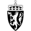 Domstolene | Justice | Norway | Norwegian | Court | Sitemap | Sitemap | monitored | No working RSS/Atom feed found on 2026-10-06. Listed so it can be monitored manually or via news search. No RSS. The fetcher reads sitemap.xml, then the public index page, and keeps only title, date, link and summary. | |
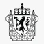 Politiet | Justice | Norway | Norwegian | Police | Manual | – | added manually | No working RSS/Atom feed found on 2026-10-06; robots.txt disallows https://www.politiet.no/api/rss/nyheter. Listed so it can be monitored manually or via news search. | |
| Riksadvokaten | Justice | Norway | Norwegian | Prosecution | RSS | RSS | monitored | ok (10 items on 2026-10-06) | |
| Justice | Norway | Norwegian | Tax authority | RSS | RSS | monitored | ok | ||
| Tolletaten | Justice | Norway | Norwegian | Customs | Sitemap | Sitemap | monitored | No working RSS/Atom feed found on 2026-10-06. Listed so it can be monitored manually or via news search. No RSS. The fetcher reads sitemap.xml, then the public index page, and keeps only title, date, link and summary. | |
| Justice | Norway | Norwegian | Police/prosecution | RSS | RSS | monitored | ok (3 items on 2026-10-06) | ||
| Adresseavisen paywall | Local | Midt | Norwegian | Newspaper | RSS | RSS | monitored | ok | |
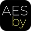 aesby.no paywall | Local | Nordvestlandet – Polaris Media | Norwegian | Newspaper | RSS | RSS | monitored | ok (34 items on 2026-10-06) | |
| agderposten.no paywall | Local | Sør – Polaris Media | Norwegian | Newspaper | RSS | RSS | monitored | ok (100 items on 2026-10-06) | |
| Akers Avis Groruddalen paywall | Local | Norwegian | Newspaper | Sitemap | Sitemap | monitored | No working RSS/Atom feed found on 2026-10-06. Listed so it can be monitored manually or via news search. No RSS. The fetcher reads sitemap.xml, then the public index page, and keeps only title, date, link and summary. | ||
| Akershus Amtstidende paywall | Local | Norwegian | Newspaper | RSS | RSS | monitored | ok (15 items on 2026-10-06) | ||
| Akersposten paywall | Local | Norwegian | Newspaper | RSS | RSS | monitored | ok (15 items on 2026-10-06) | ||
| Local | Norwegian | Newspaper | Manual | – | added manually | Same feed as Akersposten (akersposten). Not fetched separately, so a story is not filed under the wrong title. Monitor manually or via news search. | |||
| altaposten.no paywall | Local | Nord | Norwegian | Newspaper | RSS | RSS | monitored | ok (78 items on 2026-10-06) | |
| Altinget paywall | Local | Norwegian | Newspaper | RSS | RSS | monitored | ok (16 items on 2026-10-06) | ||
| Alvdal Midt I Væla paywall | Local | Norwegian | Newspaper | Manual | – | added manually | In the Medietilsynet register; a working homepage was not confirmed on 2026-10-06, so there is no feed. Monitor manually. | ||
| andalsnes-avis.no paywall | Local | Nordvestlandet – Polaris Media | Norwegian | Newspaper | RSS | RSS | monitored | ok (74 items on 2026-10-06) | |
| Local | Nord | Norwegian | Newspaper | RSS | RSS | monitored | ok (0 items on 2026-10-06) | ||
| Arbeidets Rett paywall | Local | Norwegian | Newspaper | RSS | RSS | monitored | ok (15 items on 2026-10-06) | ||
| Arendals Tidende paywall | Local | Norwegian | Newspaper | RSS | RSS | monitored | ok (24 items on 2026-10-06) | ||
 askoy24 paywall | Local | Norwegian | Newspaper | RSS | RSS | monitored | ok (83 items on 2026-10-06) | ||
| Askøyværingen paywall | Local | Norwegian | Newspaper | Manual | – | added manually | In the Medietilsynet register; a working homepage was not confirmed on 2026-10-06, so there is no feed. Monitor manually. | ||
| Aura Avis paywall | Local | Norwegian | Newspaper | RSS | RSS | monitored | ok (15 items on 2026-10-06) | ||
| Aust-Agder Blad paywall | Local | Norwegian | Newspaper | RSS | RSS | monitored | ok (15 items on 2026-10-06) | ||
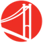 av-avis.no paywall | Local | Vest – Polaris Media | Norwegian | Newspaper | RSS | RSS | monitored | ok (81 items on 2026-10-06) | |
| Avisa Gaula paywall | Local | Norwegian | Newspaper | RSS | RSS | monitored | ok (15 items on 2026-10-06) | ||
| Avisa Hemnes paywall | Local | Norwegian | Newspaper | RSS | RSS | monitored | ok (10 items on 2026-10-06) | ||
| Avisa Lofoten paywall | Local | Norwegian | Newspaper | RSS | RSS | monitored | ok (10 items on 2026-10-06) | ||
| Avisa Nordhordland paywall | Local | Norwegian Nynorsk | Newspaper | RSS | RSS | monitored | ok (15 items on 2026-10-06) | ||
| Avisa Oslo paywall | Local | Norwegian | Newspaper | RSS | RSS | monitored | ok (15 items on 2026-10-06) | ||
| avisa-st.no paywall | Local | Midt | Norwegian | Newspaper | RSS | RSS | monitored | ok (78 items on 2026-10-06) | |
| Avisen Agder paywall | Local | Norwegian | Newspaper | RSS | RSS | monitored | ok (15 items on 2026-10-06) | ||
| banett.no paywall | Local | Midt | Norwegian | Newspaper | RSS | RSS | monitored | ok (80 items on 2026-10-06) | |
| Birkenes-avisa paywall | Local | Norwegian | Newspaper | RSS | RSS | monitored | ok (10 items on 2026-10-06) | ||
| Bladet Vesterålen paywall | Local | Norwegian | Newspaper | RSS | RSS | monitored | ok (15 items on 2026-10-06) | ||
| bladet.no paywall | Local | Midt | Norwegian | Newspaper | RSS | RSS | monitored | ok (80 items on 2026-10-06) | |
| boblad paywall | Local | Norwegian Nynorsk | Newspaper | RSS | RSS | monitored | ok (64 items on 2026-10-06) | ||
| Bodø Nu paywall | Local | Norwegian | Newspaper | RSS | RSS | monitored | ok (15 items on 2026-10-06) | ||
| bomlo-nytt.no paywall | Local | Vest – Polaris Media | Norwegian Nynorsk | Newspaper | RSS | RSS | monitored | ok (80 items on 2026-10-06) | |
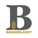 Bondebladet paywall | Local | Norwegian | Newspaper | RSS | RSS | monitored | ok (15 items on 2026-10-06) | ||
| Local | Norwegian | Newspaper | Manual | – | added manually | Same feed as banett.no (banett-no). Not fetched separately, so a story is not filed under the wrong title. Monitor manually or via news search. | |||
| Budstikka paywall | Local | Norwegian | Newspaper | RSS | RSS | monitored | ok (Amedia feed /service/rss, 15 latest items on 2026-10-06; also covered via news search) | ||
| bygdanytt.no paywall | Local | Vest – Polaris Media | Norwegian | Newspaper | RSS | RSS | monitored | ok (83 items on 2026-10-06) | |
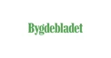 Bygdebladet paywall | Local | Norwegian | Newspaper | RSS | RSS | monitored | ok (15 items on 2026-10-06) | ||
| Local | Norwegian | Newspaper | Manual | – | added manually | Same feed as Bygdebladet (bygdebladet). Not fetched separately, so a story is not filed under the wrong title. Monitor manually or via news search. | |||
| Bygdeposten paywall | Local | Norwegian | Newspaper | RSS | RSS | monitored | ok (15 items on 2026-10-06) | ||
| Dagens Næringsliv (DN) paywall | Local | Norwegian | Newspaper | RSS | RSS | monitored | ok (29 items on 2026-10-06) | ||
| Dagens Perspektiv | Local | Norwegian | Business media | RSS | RSS | monitored | ok (?lab_viewport=rss, 68 items on 2026-10-06) | ||
| dagensmedisin paywall | Local | Norwegian | Newspaper | RSS | RSS | monitored | ok (178 items on 2026-10-06) | ||
| Dalane Tidende paywall | Local | Norwegian | Newspaper | RSS | RSS | monitored | ok (15 items on 2026-10-06) | ||
| dolen.no paywall | Local | Nordvestlandet – Polaris Media | Norwegian | Newspaper | RSS | RSS | monitored | ok (82 items on 2026-10-06) | |
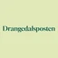 Drangedalsposten paywall | Local | Norwegian | Newspaper | RSS | RSS | monitored | ok (15 items on 2026-10-06) | ||
| driva.no paywall | Local | Nordvestlandet – Polaris Media | Norwegian | Newspaper | RSS | RSS | monitored | ok (66 items on 2026-10-06) | |
| Local | Norwegian | Newspaper | RSS | RSS | monitored | ok | |||
| Eidsvoll Ullensaker Blad paywall | Local | Norwegian | Newspaper | RSS | RSS | monitored | ok (15 items on 2026-10-06) | ||
| Eikerbladet paywall | Local | Norwegian | Newspaper | RSS | RSS | monitored | ok (15 items on 2026-10-06) | ||
| Enebakk Avis paywall | Local | Norwegian | Newspaper | RSS | RSS | monitored | ok (15 items on 2026-10-06) | ||
| Fanaposten paywall | Local | Norwegian | Newspaper | RSS | RSS | monitored | ok (15 items on 2026-10-06) | ||
| Local | Norwegian | Newspaper | Manual | – | added manually | Same feed as Finnmark Dagblad (finnmark-dagblad). Not fetched separately, so a story is not filed under the wrong title. Monitor manually or via news search. | |||
| Finnmarksposten paywall | Local | Norwegian | Newspaper | RSS | RSS | monitored | ok (15 items on 2026-10-06) | ||
| Firda paywall | Local | Norwegian Nynorsk | Newspaper | RSS | RSS | monitored | ok (15 items on 2026-10-06) | ||
| Firdaposten paywall | Local | Norwegian Nynorsk | Newspaper | RSS | RSS | monitored | ok (15 items on 2026-10-06) | ||
| firdatidend paywall | Local | Norwegian Nynorsk | Newspaper | RSS | RSS | monitored | ok (228 items on 2026-10-06) | ||
| fjellljom paywall | Local | Norwegian | Newspaper | RSS | RSS | monitored | ok (231 items on 2026-10-06) | ||
| fjordabladet.no paywall | Local | Nordvestlandet – Polaris Media | Norwegian Nynorsk | Newspaper | RSS | RSS | monitored | ok (81 items on 2026-10-06) | |
| Fjordenes Tidende paywall | Local | Norwegian Nynorsk | Newspaper | RSS | RSS | monitored | ok (80 items on 2026-10-06) | ||
| fjordingen.no paywall | Local | Nordvestlandet – Polaris Media | Norwegian Nynorsk | Newspaper | RSS | RSS | monitored | ok (80 items on 2026-10-06) | |
| Local | Nordvestlandet – Polaris Media | Norwegian Nynorsk | Newspaper | Manual | – | added manually | Same feed as Fjordenes Tidende (fjordenes-tidende). Not fetched separately, so a story is not filed under the wrong title. Monitor manually or via news search. | ||
| fjuken.no paywall | Local | Nordvestlandet – Polaris Media | Norwegian Nynorsk | Newspaper | RSS | RSS | monitored | ok (78 items on 2026-10-06) | |
| Flatangernytt paywall | Local | Norwegian | Newspaper | RSS | RSS | monitored | ok (10 items on 2026-10-06) | ||
| folkebladet.no paywall | Local | Nord | Norwegian | Newspaper | RSS | RSS | monitored | ok (80 items on 2026-10-06) | |
| fosna-folket.no paywall | Local | Midt | Norwegian | Newspaper | RSS | RSS | monitored | ok (82 items on 2026-10-06) | |
| framtidinord.no paywall | Local | Nord | Norwegian | Newspaper | RSS | RSS | monitored | ok (80 items on 2026-10-06) | |
| Fredriksstad Blad paywall | Local | Norwegian | Newspaper | RSS | RSS | monitored | ok (15 items on 2026-10-06) | ||
| Fremover paywall | Local | Norwegian | Newspaper | RSS | RSS | monitored | ok (15 items on 2026-10-06) | ||
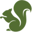 Frolendingen paywall | Local | Norwegian | Newspaper | RSS | RSS | monitored | ok (100 items on 2026-10-06) | ||
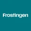 Frostingen paywall | Local | Norwegian | Newspaper | RSS | RSS | monitored | ok (15 items on 2026-10-06) | ||
| Froya paywall | Local | Midt | Norwegian | Newspaper | RSS | RSS | monitored | ok (80 items on 2026-10-06) | |
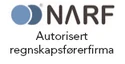 Frøya.no paywall | Local | Norwegian | Newspaper | Sitemap | Sitemap | monitored | No working RSS/Atom feed found on 2026-10-06. Listed so it can be monitored manually or via news search. No RSS. The fetcher reads sitemap.xml, then the public index page, and keeps only title, date, link and summary. | ||
| Fædrelandsvennen paywall | Local | Sør – Polaris Media | Norwegian | Newspaper | RSS | RSS | monitored | ok | |
| gat.no paywall | Local | Sør – Polaris Media | Norwegian | Newspaper | RSS | RSS | monitored | ok (80 items on 2026-10-06) | |
| Gaula paywall | Local | Norwegian | Newspaper | Manual | – | added manually | In the Medietilsynet register; a working homepage was not confirmed on 2026-10-06, so there is no feed. Monitor manually. | ||
| gauldalsposten.no paywall | Local | Norwegian | Newspaper | RSS | RSS | monitored | ok (79 items on 2026-10-06) | ||
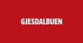 Gjesdalbuen paywall | Local | Norwegian | Newspaper | RSS | RSS | monitored | ok (15 items on 2026-10-06) | ||
| Local | Midt | Norwegian | Newspaper | Manual | – | added manually | Same feed as gauldalsposten.no (gauldalsposten-no). Not fetched separately, so a story is not filed under the wrong title. Monitor manually or via news search. | ||
| grannar paywall | Local | Norwegian Nynorsk | Newspaper | RSS | RSS | monitored | ok (119 items on 2026-10-06) | ||
| grenda paywall | Local | Norwegian Nynorsk | Newspaper | RSS | RSS | monitored | ok (195 items on 2026-10-06) | ||
| Grimstad Adressetidende paywall | Local | Norwegian | Newspaper | Manual | – | added manually | In the Medietilsynet register; a working homepage was not confirmed on 2026-10-06, so there is no feed. Monitor manually. | ||
| Hadeland paywall | Local | Norwegian | Newspaper | RSS | RSS | monitored | ok (15 items on 2026-10-06) | ||
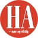 Halden Arbeiderblad paywall | Local | Norwegian | Newspaper | RSS | RSS | monitored | ok (15 items on 2026-10-06) | ||
| Hammerfestingen paywall | Local | Norwegian | Newspaper | RSS | RSS | monitored | ok (15 items on 2026-10-06) | ||
| Haramsnytt paywall | Local | Norwegian | Newspaper | RSS | RSS | monitored | ok (100 items on 2026-10-06) | ||
| Hardanger Folkeblad paywall | Local | Norwegian Nynorsk | Newspaper | RSS | RSS | monitored | ok (15 items on 2026-10-06) | ||
| Helgelands Blad paywall | Local | Norwegian | Newspaper | Manual | – | added manually | In the Medietilsynet register; a working homepage was not confirmed on 2026-10-06, so there is no feed. Monitor manually. | ||
| Helgelendingen paywall | Local | Norwegian | Newspaper | RSS | RSS | monitored | ok (15 items on 2026-10-06) | ||
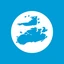 hitra-froya.no paywall | Local | Midt | Norwegian | Newspaper | RSS | RSS | monitored | ok (80 items on 2026-10-06) | |
| Hordaland paywall | Local | Norwegian Nynorsk | Newspaper | RSS | RSS | monitored | ok (15 items on 2026-10-06) | ||
| Hordaland Folkeblad paywall | Local | Norwegian | Newspaper | Manual | – | added manually | In the Medietilsynet register; a working homepage was not confirmed on 2026-10-06, so there is no feed. Monitor manually. | ||
| ht.no paywall | Local | Nord | Norwegian | Newspaper | RSS | RSS | monitored | ok (83 items on 2026-10-06) | |
| Hustadvikingen paywall | Local | Norwegian | Newspaper | RSS | RSS | monitored | ok (10 items on 2026-10-06) | ||
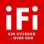 ifinnmark.no paywall | Local | Norwegian | Newspaper | Manual | – | added manually | Same feed as Finnmark Dagblad (finnmark-dagblad). Not fetched separately, so a story is not filed under the wrong title. Monitor manually or via news search. | ||
| iHarstad paywall | Local | Norwegian | Newspaper | RSS | RSS | monitored | ok (15 items on 2026-10-06) | ||
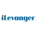 iLevanger paywall | Local | Norwegian | Newspaper | RSS | RSS | monitored | ok (15 items on 2026-10-06) | ||
| Inderøyningen paywall | Local | Norwegian | Newspaper | RSS | RSS | monitored | ok (15 items on 2026-10-06) | ||
| Indre Akershus Blad paywall | Local | Norwegian | Newspaper | RSS | RSS | monitored | ok (15 items on 2026-10-06) | ||
| innherred.no paywall | Local | Midt | Norwegian | Newspaper | RSS | RSS | monitored | ok (83 items on 2026-10-06) | |
| Inord paywall | Local | Nord | Norwegian | Newspaper | RSS | RSS | monitored | ok (9 items on 2026-10-06) | |
| iNYHETER paywall | Local | Norwegian | Newspaper | Manual | – | added manually | In the Medietilsynet register; a working homepage was not confirmed on 2026-10-06, so there is no feed. Monitor manually. | ||
| iSandnessjøen paywall | Local | Norwegian | Newspaper | RSS | RSS | monitored | ok (15 items on 2026-10-06) | ||
| iSOLØR.NO paywall | Local | Norwegian | Newspaper | Manual | – | added manually | In the Medietilsynet register; a working homepage was not confirmed on 2026-10-06, so there is no feed. Monitor manually. | ||
| iTromsø paywall | Local | Nord | Norwegian | Newspaper | RSS | RSS | monitored | ok | |
| iVerdal paywall | Local | Norwegian | Newspaper | RSS | RSS | monitored | ok (15 items on 2026-10-06) | ||
| Jarlsberg Avis paywall | Local | Norwegian | Newspaper | RSS | RSS | monitored | ok (15 items on 2026-10-06) | ||
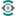 Jessheimpuls paywall | Local | Norwegian | Newspaper | RSS | RSS | monitored | ok (6 items on 2026-10-06) | ||
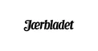 Jærbladet paywall | Local | Norwegian Nynorsk | Newspaper | RSS | RSS | monitored | ok (15 items on 2026-10-06) | ||
| Kampanje paywall | Local | Norwegian | Newspaper | Manual | – | added manually | In the Medietilsynet register; a working homepage was not confirmed on 2026-10-06, so there is no feed. Monitor manually. | ||
| kanalen paywall | Local | Norwegian | Newspaper | RSS | RSS | monitored | ok (60 items on 2026-10-06) | ||
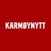 Karmøynytt paywall | Local | Norwegian | Newspaper | RSS | RSS | monitored | ok (15 items on 2026-10-06) | ||
| Local | Midt | Norwegian | Newspaper | RSS | RSS | monitored | ok (81 items on 2026-10-06) | ||
| Klæbuposten paywall | Local | Norwegian | Newspaper | Manual | – | added manually | Same feed as klebuposten.no (klebuposten-no). Not fetched separately, so a story is not filed under the wrong title. Monitor manually or via news search. | ||
| Kragerø Blad Vestmar paywall | Local | Norwegian | Newspaper | RSS | RSS | monitored | ok (15 items on 2026-10-06) | ||
| Kronstadposten paywall | Local | Norwegian | Newspaper | RSS | RSS | monitored | ok (15 items on 2026-10-06) | ||
| KRS - Avisen Kristiansand paywall | Local | Norwegian | Newspaper | RSS | RSS | monitored | ok (15 items on 2026-10-06) | ||
| kulingen.no paywall | Local | Nord | Norwegian | Newspaper | RSS | RSS | monitored | ok (69 items on 2026-10-06) | |
| Kvinnheringen paywall | Local | Norwegian Nynorsk | Newspaper | RSS | RSS | monitored | ok (15 items on 2026-10-06) | ||
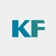 kystogfjord.no paywall | Local | Nord | Norwegian | Newspaper | RSS | RSS | monitored | ok (84 items on 2026-10-06) | |
| l-a.no paywall | Local | Sør – Polaris Media | Norwegian | Newspaper | RSS | RSS | monitored | ok (71 items on 2026-10-06) | |
| Lierposten paywall | Local | Norwegian | Newspaper | RSS | RSS | monitored | ok (15 items on 2026-10-06) | ||
| Lillesands-posten paywall | Local | Norwegian | Newspaper | Manual | – | added manually | In the Medietilsynet register; a working homepage was not confirmed on 2026-10-06, so there is no feed. Monitor manually. | ||
| Lindesnes paywall | Local | Norwegian | Newspaper | Manual | – | added manually | In the Medietilsynet register; a working homepage was not confirmed on 2026-10-06, so there is no feed. Monitor manually. | ||
| Lister paywall | Local | Norwegian | Newspaper | Sitemap | Sitemap | monitored | No working RSS/Atom feed found on 2026-10-06. Listed so it can be monitored manually or via news search. No RSS. The fetcher reads sitemap.xml, then the public index page, and keeps only title, date, link and summary. | ||
| lister24.no paywall | Local | Sør – Polaris Media | Norwegian | Newspaper | RSS | RSS | monitored | ok (80 items on 2026-10-06) | |
| Lofot-Tidende paywall | Local | Norwegian | Newspaper | RSS | RSS | monitored | ok (15 items on 2026-10-06) | ||
| Lofotposten paywall | Local | Norwegian | Newspaper | RSS | RSS | monitored | ok (15 items on 2026-10-06) | ||
| Lokalavisa Trysil-Engerdal paywall | Local | Norwegian | Newspaper | RSS | RSS | monitored | ok (15 items on 2026-10-06) | ||
| lp.no paywall | Local | Sør – Polaris Media | Norwegian | Newspaper | RSS | RSS | monitored | ok (83 items on 2026-10-06) | |
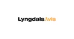 Lyngdals Avis paywall | Local | Norwegian | Newspaper | RSS | RSS | monitored | ok (15 items on 2026-10-06) | ||
| Malviknytt paywall | Local | Norwegian | Newspaper | RSS | RSS | monitored | ok (10 items on 2026-10-06) | ||
| marsteinen.no paywall | Local | Vest – Polaris Media | Norwegian | Newspaper | RSS | RSS | monitored | ok (81 items on 2026-10-06) | |
| Medier24 paywall | Local | Norwegian | Newspaper | RSS | RSS | monitored | ok (165 items on 2026-10-06) | ||
| Meråkerposten paywall | Local | Norwegian | Newspaper | RSS | RSS | monitored | ok (15 items on 2026-10-06) | ||
| Midsundingen paywall | Local | Norwegian | Newspaper | RSS | RSS | monitored | ok (10 items on 2026-10-06) | ||
| Midtsiden paywall | Local | Norwegian Nynorsk | Newspaper | Sitemap | Sitemap | monitored | No working RSS/Atom feed found on 2026-10-06. Listed so it can be monitored manually or via news search. No RSS. The fetcher reads sitemap.xml, then the public index page, and keeps only title, date, link and summary. | ||
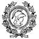 minerva paywall | Local | Norwegian | Newspaper | RSS | RSS | monitored | ok (25 items on 2026-10-06) | ||
| Mitt Kongsvinger paywall | Local | Norwegian | Newspaper | RSS | RSS | monitored | ok (10 items on 2026-10-06) | ||
| morenytt.no paywall | Local | Nordvestlandet – Polaris Media | Norwegian Nynorsk | Newspaper | RSS | RSS | monitored | ok (80 items on 2026-10-06) | |
| Moss Avis paywall | Local | Norwegian | Newspaper | RSS | RSS | monitored | ok (15 items on 2026-10-06) | ||
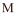 Motparten.no paywall | Local | Norwegian | Newspaper | Sitemap | Sitemap | monitored | No working RSS/Atom feed found on 2026-10-06. Listed so it can be monitored manually or via news search. No RSS. The fetcher reads sitemap.xml, then the public index page, and keeps only title, date, link and summary. | ||
| Møre paywall | Local | Norwegian | Newspaper | Sitemap | Sitemap | monitored | No working RSS/Atom feed found on 2026-10-06. Listed so it can be monitored manually or via news search. No RSS. The fetcher reads sitemap.xml, then the public index page, and keeps only title, date, link and summary. | ||
| Namdalsavisa paywall | Local | Norwegian | Newspaper | RSS | RSS | monitored | ok (15 items on 2026-10-06) | ||
| Nett.no paywall | Local | Norwegian | Newspaper | RSS | RSS | monitored | ok (10 items on 2026-10-06) | ||
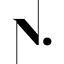 Nidaros paywall | Local | Norwegian | Newspaper | RSS | RSS | monitored | ok (15 items on 2026-10-06) | ||
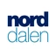 Norddalen paywall | Local | Norwegian | Newspaper | RSS | RSS | monitored | ok (15 items on 2026-10-06) | ||
| Nordhordaland paywall | Local | Norwegian | Newspaper | Manual | – | added manually | In the Medietilsynet register; a working homepage was not confirmed on 2026-10-06, so there is no feed. Monitor manually. | ||
| Nordre Aker Budstikke paywall | Local | Norwegian | Newspaper | RSS | RSS | monitored | ok (15 items on 2026-10-06) | ||
| Nordsalten Avis paywall | Local | Norwegian | Newspaper | Manual | – | added manually | In the Medietilsynet register; a working homepage was not confirmed on 2026-10-06, so there is no feed. Monitor manually. | ||
| Nordstrands Blad paywall | Local | Norwegian | Newspaper | RSS | RSS | monitored | ok (15 items on 2026-10-06) | ||
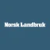 Norsk Landbruk paywall | Local | Norwegian | Newspaper | RSS | RSS | monitored | ok (15 items on 2026-10-06) | ||
| Nye Troms paywall | Local | Norwegian | Newspaper | RSS | RSS | monitored | ok (15 items on 2026-10-06) | ||
| nyss.no paywall | Local | Nordvestlandet – Polaris Media | Norwegian Nynorsk | Newspaper | RSS | RSS | monitored | ok (80 items on 2026-10-06) | |
| opp.no paywall | Local | Midt | Norwegian | Newspaper | RSS | RSS | monitored | ok (81 items on 2026-10-06) | |
| Oppegård Avis paywall | Local | Norwegian | Newspaper | Manual | – | added manually | In the Medietilsynet register; a working homepage was not confirmed on 2026-10-06, so there is no feed. Monitor manually. | ||
| OS OG Fusaposten paywall | Local | Norwegian | Newspaper | Manual | – | added manually | In the Medietilsynet register; a working homepage was not confirmed on 2026-10-06, so there is no feed. Monitor manually. | ||
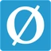 oyposten.no paywall | Local | Vest – Polaris Media | Norwegian Nynorsk | Newspaper | RSS | RSS | monitored | ok (49 items on 2026-10-06) | |
| Porsgrunns Dagblad paywall | Local | Norwegian | Newspaper | RSS | RSS | monitored | ok (15 items on 2026-10-06) | ||
| porten.no paywall | Local | Nordvestlandet – Polaris Media | Norwegian Nynorsk | Newspaper | RSS | RSS | monitored | ok (80 items on 2026-10-06) | |
| Psykologisk.no paywall | Local | Norwegian | Newspaper | RSS | RSS | monitored | ok (48 items on 2026-10-06) | ||
| RA Stavanger paywall | Local | Norwegian | Newspaper | RSS | RSS | monitored | ok (15 items on 2026-10-06) | ||
| Rakkestad Avis paywall | Local | Norwegian | Newspaper | RSS | RSS | monitored | ok (15 items on 2026-10-06) | ||
| Rana Blad paywall | Local | Norwegian | Newspaper | RSS | RSS | monitored | ok (15 items on 2026-10-06) | ||
| Rana No paywall | Local | Norwegian | Newspaper | RSS | RSS | monitored | ok (15 items on 2026-10-06) | ||
| Randaberg 24.no paywall | Local | Norwegian | Newspaper | Manual | – | added manually | In the Medietilsynet register; a working homepage was not confirmed on 2026-10-06, so there is no feed. Monitor manually. | ||
| randaberg24.no paywall | Local | Vest – Polaris Media | Norwegian | Newspaper | RSS | RSS | monitored | ok (55 items on 2026-10-06) | |
| Raumnes paywall | Local | Norwegian | Newspaper | RSS | RSS | monitored | ok (15 items on 2026-10-06) | ||
| Ringsaker Blad paywall | Local | Norwegian | Newspaper | RSS | RSS | monitored | ok (15 items on 2026-10-06) | ||
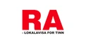 Rjukan Arbeiderblad paywall | Local | Norwegian | Newspaper | RSS | RSS | monitored | ok (15 items on 2026-10-06) | ||
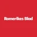 Romerikes Blad paywall | Local | Norwegian | Newspaper | RSS | RSS | monitored | ok (/rss is empty or 404; Amedia feed /service/rss works, 15 latest items on 2026-10-06) | ||
| Romsdals Budstikke paywall | Local | Nordvestlandet – Polaris Media | Norwegian | Newspaper | RSS | RSS | monitored | ok (97 items on 2026-10-06; also covered via news search) | |
| Ryfylke.no paywall | Local | Norwegian Nynorsk | Newspaper | RSS | RSS | monitored | ok (10 items on 2026-10-06) | ||
| Røyken og Hurums Avis paywall | Local | Norwegian | Newspaper | RSS | RSS | monitored | ok (15 items on 2026-10-06) | ||
| s-n.no paywall | Local | Midt | Norwegian | Newspaper | RSS | RSS | monitored | ok (80 items on 2026-10-06) | |
| Sagene Avis paywall | Local | Norwegian | Newspaper | RSS | RSS | monitored | ok (15 items on 2026-10-06) | ||
| Salangen-nyheter paywall | Local | Norwegian | Newspaper | Manual | – | added manually | In the Medietilsynet register; a working homepage was not confirmed on 2026-10-06, so there is no feed. Monitor manually. | ||
| saltenposten paywall | Local | Norwegian | Newspaper | RSS | RSS | monitored | ok (100 items on 2026-10-06) | ||
| Samningen paywall | Local | Norwegian Nynorsk | Newspaper | RSS | RSS | monitored | ok (20 items on 2026-10-06) | ||
| samtiden paywall | Local | Norwegian | Newspaper | RSS | RSS | monitored | ok (123 items on 2026-10-06) | ||
| Sande Avis paywall | Local | Norwegian | Newspaper | RSS | RSS | monitored | ok (15 items on 2026-10-06) | ||
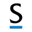 Sandnesposten paywall | Local | Norwegian | Newspaper | RSS | RSS | monitored | ok (15 items on 2026-10-06) | ||
| Sarpsborg Arbeiderblad paywall | Local | Norwegian | Newspaper | RSS | RSS | monitored | ok (15 items on 2026-10-06) | ||
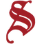 selbyggen paywall | Local | Norwegian | Newspaper | RSS | RSS | monitored | ok (34 items on 2026-10-06) | ||
| setesdolen.no paywall | Local | Sør – Polaris Media | Norwegian | Newspaper | RSS | RSS | monitored | ok (80 items on 2026-10-06) | |
| Local | Norwegian | Tech/startup media | RSS | RSS | monitored | ok (/rss and /feed return 404; ?lab_viewport=rss works, 49 items on 2026-10-06) | |||
| Smaalenenes Avis paywall | Local | Norwegian | Newspaper | RSS | RSS | monitored | ok (15 items on 2026-10-06) | ||
| Snåsningen paywall | Local | Norwegian | Newspaper | RSS | RSS | monitored | ok (15 items on 2026-10-06) | ||
| Sogn Avis paywall | Local | Norwegian Nynorsk | Newspaper | RSS | RSS | monitored | ok (15 items on 2026-10-06) | ||
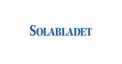 Solabladet paywall | Local | Norwegian | Newspaper | RSS | RSS | monitored | ok (15 items on 2026-10-06) | ||
| Solungavisa paywall | Local | Norwegian | Newspaper | RSS | RSS | monitored | ok (15 items on 2026-10-06) | ||
| Stangeavisa paywall | Local | Norwegian | Newspaper | RSS | RSS | monitored | ok (15 items on 2026-10-06) | ||
| Steinkjer-Avisa paywall | Local | Norwegian | Newspaper | RSS | RSS | monitored | ok (15 items on 2026-10-06) | ||
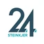 steinkjer24.no paywall | Local | Midt | Norwegian | Newspaper | RSS | RSS | monitored | ok (82 items on 2026-10-06) | |
| Stjørdals-nytt paywall | Local | Norwegian | Newspaper | Manual | – | added manually | In the Medietilsynet register; a working homepage was not confirmed on 2026-10-06, so there is no feed. Monitor manually. | ||
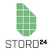 stord24.no paywall | Local | Vest – Polaris Media | Norwegian Nynorsk | Newspaper | RSS | RSS | monitored | ok (10 items on 2026-10-06) | |
| Storfjordnytt paywall | Local | Norwegian | Newspaper | RSS | RSS | monitored | ok (10 items on 2026-10-06) | ||
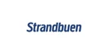 Strandbuen paywall | Local | Norwegian | Newspaper | RSS | RSS | monitored | ok (15 items on 2026-10-06) | ||
| strilen.no paywall | Local | Vest – Polaris Media | Norwegian Nynorsk | Newspaper | RSS | RSS | monitored | ok (80 items on 2026-10-06) | |
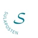 Sulaposten paywall | Local | Norwegian | Newspaper | RSS | RSS | monitored | ok (100 items on 2026-10-06) | ||
| suldalsposten paywall | Local | Norwegian | Newspaper | RSS | RSS | monitored | ok (136 items on 2026-10-06) | ||
| sunnhordland.no paywall | Local | Vest – Polaris Media | Norwegian Nynorsk | Newspaper | RSS | RSS | monitored | ok (59 items on 2026-10-06) | |
| Sunnmørsposten paywall | Local | Nordvestlandet – Polaris Media | Norwegian | Newspaper | RSS | RSS | monitored | ok | |
| svalbardposten paywall | Local | Norwegian | Newspaper | RSS | RSS | monitored | ok (178 items on 2026-10-06) | ||
| Svelvikposten paywall | Local | Norwegian | Newspaper | RSS | RSS | monitored | ok (15 items on 2026-10-06) | ||
| Local | Norwegian | Newspaper | Manual | – | added manually | Same feed as Svelvikposten (svelvikposten). Not fetched separately, so a story is not filed under the wrong title. Monitor manually or via news search. | |||
| Sydvesten paywall | Local | Norwegian | Newspaper | RSS | RSS | monitored | ok (15 items on 2026-10-06) | ||
| Synste Møre paywall | Local | Norwegian | Newspaper | RSS | RSS | monitored | ok (10 items on 2026-10-06) | ||
| Sør-Varanger Avis paywall | Local | Norwegian | Newspaper | RSS | RSS | monitored | ok (15 items on 2026-10-06) | ||
| Telen paywall | Local | Norwegian | Newspaper | RSS | RSS | monitored | ok (15 items on 2026-10-06) | ||
| Tidens Krav paywall | Local | Norwegian | Newspaper | RSS | RSS | monitored | ok (15 items on 2026-10-06) | ||
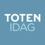 Toten Idag paywall | Local | Norwegian | Newspaper | RSS | RSS | monitored | ok (15 items on 2026-10-06) | ||
| Totens Blad paywall | Local | Norwegian | Newspaper | RSS | RSS | monitored | ok (10 items on 2026-10-06) | ||
| Traktor paywall | Local | Norwegian | Newspaper | RSS | RSS | monitored | ok (15 items on 2026-10-06) | ||
| tronderbladet.no paywall | Local | Midt | Norwegian | Newspaper | RSS | RSS | monitored | ok (72 items on 2026-10-06) | |
| Trønder-Avisa paywall | Local | Norwegian | Newspaper | RSS | RSS | monitored | ok (15 items on 2026-10-06) | ||
| Tvedestrandsposten paywall | Local | Norwegian | Newspaper | RSS | RSS | monitored | ok (15 items on 2026-10-06) | ||
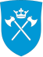 Tysnes kommune paywall | Local | Norwegian | Newspaper | RSS | RSS | monitored | ok (10 items on 2026-10-06) | ||
| Tysvær Bygdeblad paywall | Local | Norwegian | Newspaper | Manual | – | added manually | In the Medietilsynet register; a working homepage was not confirmed on 2026-10-06, so there is no feed. Monitor manually. | ||
| vaganavisa.no paywall | Local | Nord | Norwegian | Newspaper | RSS | RSS | monitored | ok (75 items on 2026-10-06) | |
| Vaksdalposten paywall | Local | Norwegian Nynorsk | Newspaper | RSS | RSS | monitored | ok (15 items on 2026-10-06) | ||
| Valdres paywall | Local | Norwegian Nynorsk | Newspaper | RSS | RSS | monitored | ok (15 items on 2026-10-06) | ||
| varden.no paywall | Local | Sør – Polaris Media | Norwegian | Newspaper | RSS | RSS | monitored | ok (90 items on 2026-10-06) | |
| Varingen paywall | Local | Norwegian | Newspaper | RSS | RSS | monitored | ok (15 items on 2026-10-06) | ||
| venneslatidende.no paywall | Local | Sør – Polaris Media | Norwegian | Newspaper | RSS | RSS | monitored | ok (80 items on 2026-10-06) | |
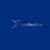 Verdinytt paywall | Local | Norwegian | Newspaper | RSS | RSS | monitored | ok (100 items on 2026-10-06) | ||
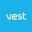 Vest-telemark Blad paywall | Local | Norwegian | Newspaper | Sitemap | Sitemap | monitored | No working RSS/Atom feed found on 2026-10-06. Listed so it can be monitored manually or via news search. No RSS. The fetcher reads sitemap.xml, then the public index page, and keeps only title, date, link and summary. | ||
| Vestavind - Bygdeblad for Sveio paywall | Local | Norwegian Nynorsk | Newspaper | RSS | RSS | monitored | ok (51 items on 2026-10-06) | ||
| Vestby Avis paywall | Local | Norwegian | Newspaper | RSS | RSS | monitored | ok (15 items on 2026-10-06) | ||
| Vesteraalensavis paywall | Local | Nord | Norwegian | Newspaper | Manual | – | added manually | Same feed as Andoyposten (andoyposten). Not fetched separately, so a story is not filed under the wrong title. Monitor manually or via news search. | |
| Local | Norwegian | Newspaper | RSS | RSS | monitored | ok (61 items on 2026-10-06) | |||
| vestlandsnytt.no paywall | Local | Nordvestlandet – Polaris Media | Norwegian Nynorsk | Newspaper | RSS | RSS | monitored | ok (83 items on 2026-10-06) | |
| Vestnesavisa paywall | Local | Norwegian | Newspaper | Sitemap | Sitemap | monitored | No working RSS/Atom feed found on 2026-10-06. Listed so it can be monitored manually or via news search. No RSS. The fetcher reads sitemap.xml, then the public index page, and keeps only title, date, link and summary. | ||
| vestnytt.no paywall | Local | Vest – Polaris Media | Norwegian Nynorsk | Newspaper | RSS | RSS | monitored | ok (80 items on 2026-10-06) | |
| vigga.no paywall | Local | Nordvestlandet – Polaris Media | Norwegian | Newspaper | RSS | RSS | monitored | ok (82 items on 2026-10-06) | |
| Vikebladet Vestposten paywall | Local | Norwegian Nynorsk | Newspaper | RSS | RSS | monitored | ok (82 items on 2026-10-06) | ||
| Local | Nordvestlandet – Polaris Media | Norwegian Nynorsk | Newspaper | Manual | – | added manually | Same feed as Vikebladet Vestposten (vikebladet-vestposten). Not fetched separately, so a story is not filed under the wrong title. Monitor manually or via news search. | ||
| vol.no paywall | Local | Nord | Norwegian | Newspaper | Manual | – | added manually | Same feed as Vesterålens Avis (vesteralens-avis). Not fetched separately, so a story is not filed under the wrong title. Monitor manually or via news search. | |
| VårtOslo paywall | Local | Norwegian | Newspaper | RSS | RSS | monitored | ok (35 items on 2026-10-06) | ||
| Ytre Sogn paywall | Local | Norwegian | Newspaper | RSS | RSS | monitored | ok (10 items on 2026-10-06) | ||
| Ytringen paywall | Local | Norwegian | Newspaper | RSS | RSS | monitored | ok (100 items on 2026-10-06) | ||
| Ås Avis paywall | Local | Norwegian | Newspaper | RSS | RSS | monitored | ok (15 items on 2026-10-06) | ||
| Åsane Tidende paywall | Local | Norwegian | Newspaper | RSS | RSS | monitored | ok (15 items on 2026-10-06) | ||
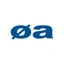 Øksnesavisa paywall | Local | Norwegian | Newspaper | RSS | RSS | monitored | ok (15 items on 2026-10-06) | ||
| Østhavet paywall | Local | Norwegian | Newspaper | RSS | RSS | monitored | ok (10 items on 2026-10-06) | ||
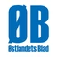 Østlandets Blad paywall | Local | Norwegian | Newspaper | RSS | RSS | monitored | ok (15 items on 2026-10-06) | ||
| Østlendingen/Glåmdalen paywall | Local | Norwegian | Newspaper | RSS | RSS | monitored | ok (Amedia feed /service/rss, 15 latest items on 2026-10-06; also covered via news search) | ||
| ØyBlikk paywall | Local | Norwegian | Newspaper | RSS | RSS | monitored | ok (10 items on 2026-10-06) | ||
| Øyene paywall | Local | Norwegian | Newspaper | RSS | RSS | monitored | ok (15 items on 2026-10-06) | ||
| ABC Nyheter | National | Norwegian | Newspaper | RSS | RSS | monitored | ok (/rss and /feed return 404; ?lab_viewport=rss works, 24 items on 2026-10-06) | ||
| National | Norwegian | Newspaper | RSS | RSS | monitored | ok | |||
| Bare Bitcoin (blogg) | National | Norwegian | Company blog | Sitemap | Sitemap | monitored | no RSS found (/feed, /rss.xml, /blog/rss.xml return 404 on 2026-10-06). No RSS. The fetcher reads sitemap.xml, then the public index page, and keeps only title, date, link and summary. | ||
| National | Norwegian | Association blog | RSS | RSS | monitored | ok | |||
| Bitcoinsnakk (podkast) | National | Norwegian | Podcast | RSS | RSS | monitored | ok | ||
| Computerworld Norge paywall | National | Norwegian | Tech media | RSS | RSS | monitored | ok (computerworld.no now redirects to cw.no; ?lab_viewport=rss works, 57 items on 2026-10-06) | ||
| Dagbladet paywall | National | Norwegian | Newspaper | RSS | RSS | monitored | ok (/rss returns 404, ?lab_viewport=rss works) | ||
| dagen paywall | National | Norwegian | Newspaper | RSS | RSS | monitored | ok (111 items on 2026-10-06) | ||
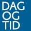 dagogtid paywall | National | Norwegian Nynorsk | Newspaper | RSS | RSS | monitored | ok (106 items on 2026-10-06) | ||
| Dagsavisen paywall | National | Norwegian | Newspaper | RSS | RSS | monitored | ok (the old /arc/outboundfeeds/rss/ link is 404; /rss redirects to ?lab_viewport=rss, 248 items on 2026-10-06) | ||
| Digi.no paywall | National | Norwegian | Tech media | RSS | RSS | monitored | ok | ||
| Digi.no (crypto tag) paywall | National | Norwegian | Tech media | RSS | RSS | monitored | ok (newest item 2026-09-20) | ||
| Digi.no (emne: bitcoin) paywall | National | Norwegian | Tech media | RSS | RSS | monitored | ok | ||
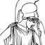 Document.no paywall | National | Norwegian | Newspaper | RSS | RSS | monitored | ok (10 items on 2026-10-06) | ||
| En og tyve tanker (podkast) | National | Norwegian | Podcast | RSS | RSS | monitored | ok | ||
| Filter Nyheter paywall | National | Norwegian | Newspaper | RSS | RSS | monitored | ok (10 items on 2026-10-06) | ||
| Finansavisen paywall | National | Norwegian | Newspaper | Sitemap | Sitemap | monitored | no working RSS (/rss and /feed end in a login redirect loop on 2026-10-06); covered via news search. No RSS. The fetcher reads sitemap.xml, then the public index page, and keeps only title, date, link and summary. | ||
| Finansfokus | National | Norwegian | Business media | Sitemap | Sitemap | monitored | no RSS found (/feed/ and /rss redirect to the front page, ?lab_viewport=rss is empty on 2026-10-06); covered via news search. No RSS. The fetcher reads sitemap.xml, then the public index page, and keeps only title, date, link and summary. | ||
| National | Norwegian | Regulator | RSS | RSS | monitored | ok | |||
| Finanswatch paywall | National | Norwegian | Newspaper | Sitemap | Sitemap | monitored | No working RSS/Atom feed found on 2026-10-06. Listed so it can be monitored manually or via news search. No RSS. The fetcher reads sitemap.xml, then the public index page, and keeps only title, date, link and summary. | ||
| Fiskeribladet paywall | National | Norwegian | Newspaper | Sitemap | Sitemap | monitored | No working RSS/Atom feed found on 2026-10-06. Listed so it can be monitored manually or via news search. No RSS. The fetcher reads sitemap.xml, then the public index page, and keeps only title, date, link and summary. | ||
| Hegnar.no paywall | National | Norwegian | Business media | Sitemap | Sitemap | monitored | no RSS used (/rss is a login redirect loop on 2026-10-06); covered via news search. No RSS. The fetcher reads sitemap.xml, then the public index page, and keeps only title, date, link and summary. | ||
| Investornytt | National | Norwegian | Business media | RSS | RSS | monitored | ok (?lab_viewport=rss, 114 items on 2026-10-06) | ||
| ITavisen | National | Norwegian | Tech media | RSS | RSS | monitored | ok | ||
| Kapital paywall | National | Norwegian | Business media | Manual | list page | feed not working (covered via news search) | fails: redirect loop on /rss, /feed and ?lab_viewport=rss (2026-10-06); covered via news search | ||
| National | Norwegian | Crypto media (Nordic) | HTML | HTML | monitored | ok (no RSS; we read the link list and only page metadata; robots.txt allows) | |||
| Klassekampen paywall | National | Norwegian | Newspaper | RSS | RSS | monitored | ok (/rss redirects to /api/newsfeed/rss, 254 items on 2026-10-06) | ||
 Kode24 | National | Norwegian | Tech media | RSS | RSS | monitored | ok | ||
| Kode24 (emne: krypto) | National | Norwegian | Tech media | RSS | RSS | monitored | ok (little activity; newest item Feb 2026) | ||
 Kom24 | National | Norwegian | Tech media | RSS | RSS | monitored | ok (?lab_viewport=rss, 166 items on 2026-10-06) | ||
| Kryptografen.no | National | Norwegian | Crypto media | RSS | RSS | monitored | ok | ||
| Kryptopodden | National | Norwegian | Podcast | RSS | RSS | monitored | ok, but last episode June 2025 | ||
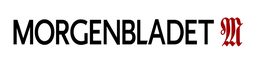 Morgenbladet paywall | National | Norwegian | Newspaper | RSS | RSS | monitored | ok (?lab_viewport=rss, 73 items on 2026-10-06) | ||
| Nationen paywall | National | Norwegian | Newspaper | RSS | RSS | monitored | ok (Amedia feed /service/rss, 15 latest items on 2026-10-06; also covered via news search) | ||
| National | Norwegian | Company announcements | Sitemap | Sitemap | monitored | added manually by the researcher (fetch.sh --add); no RSS (nbx.com timed out on 2026-10-06). No RSS. The fetcher reads sitemap.xml, then the public index page, and keeps only title, date, link and summary. | |||
| National | Norwegian | Newspaper | RSS | RSS | monitored | ok | |||
| News search (Norwegian domains) | National | Norwegian | Search feed | Search | search | monitored | ok (Bing News RSS sorted by date; links always go to the original story) | ||
| News search (Norwegian domains, per site) | National | Norwegian | Search feed | Search | search | monitored | ok (Kryptonytt's former news search: extra queries plus one query per term and Norwegian site; links always go to the original story) | ||
| Norge I Dag paywall | National | Norwegian | Newspaper | Manual | – | added manually | No working RSS/Atom feed found on 2026-10-06; homepage HTTP 403. Listed so it can be monitored manually or via news search. | ||
| National | Norwegian | Central bank | RSS | RSS | monitored | ok | |||
| National | Norwegian | Central bank | RSS | RSS | monitored | ok | |||
| National | Norwegian | Central bank | RSS | RSS | monitored | ok | |||
| NRK | National | Norwegian | Public broadcaster | RSS | RSS | monitored | ok | ||
| NRK (latest) | National | Norwegian | Public broadcaster | RSS | RSS | monitored | ok | ||
| NRK Norge | National | Norwegian | Public broadcaster | RSS | RSS | monitored | ok | ||
| NRK Viten/teknologi | National | Norwegian | Public broadcaster | RSS | RSS | monitored | ok | ||
| Regjeringen | National | Norwegian | Ministry | Manual | list page | not used | fails: HTTP 403 for bots (re-checked 2026-10-06); not fetched | ||
| National | Norwegian | Parliament | Manual | – | added manually | added manually by the researcher (fetch.sh --add); no news RSS found on 2026-10-06; also covered via news search | |||
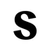 Subjekt paywall | National | Norwegian | Newspaper | RSS | RSS | monitored | ok (10 items on 2026-10-06) | ||
| Tek.no | National | Norwegian | Tech media | RSS | RSS | monitored | ok | ||
| TV 2 | National | Norwegian | Broadcaster | RSS | RSS | monitored | ok | ||
| VG paywall | National | Norwegian | Newspaper | RSS | RSS | monitored | ok (only the 10 latest stories) | ||
| Vårt Land paywall | National | Norwegian | Newspaper | RSS | RSS | monitored | ok (263 items on 2026-10-06) | ||
| Avisa Nordland paywall | Regional | Norwegian | Newspaper | RSS | RSS | monitored | ok (Amedia feed /service/rss, 15 latest items on 2026-10-06; also covered via news search) | ||
| Bergens Tidende paywall | Regional | Norwegian | Newspaper | RSS | RSS | monitored | ok | ||
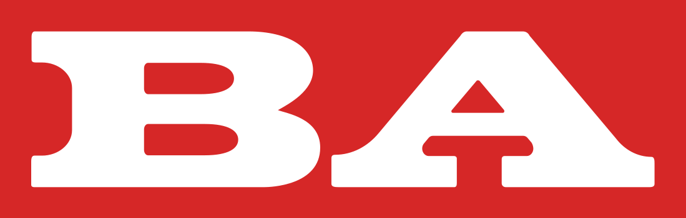 Bergensavisen paywall | Regional | Norwegian | Newspaper | RSS | RSS | monitored | ok (/rss is empty or 404; Amedia feed /service/rss works, 15 latest items on 2026-10-06) | ||
| Drammens Tidende paywall | Regional | Norwegian | Newspaper | RSS | RSS | monitored | ok (15 items on 2026-10-06) | ||
| Regional | Norwegian | Newspaper | RSS | RSS | monitored | ok (15 items on 2026-10-06) | |||
| Gjengangeren paywall | Regional | Norwegian | Newspaper | RSS | RSS | monitored | ok (15 items on 2026-10-06) | ||
| Gudbrandsdølen Dagningen paywall | Regional | Norwegian | Newspaper | RSS | RSS | monitored | ok (15 items on 2026-10-06) | ||
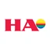 Hamar Arbeiderblad paywall | Regional | Norwegian | Newspaper | RSS | RSS | monitored | ok (15 items on 2026-10-06) | ||
| Haugesunds Avis paywall | Regional | Norwegian | Newspaper | RSS | RSS | monitored | ok (Amedia feed /service/rss, 15 latest items on 2026-10-06; also covered via news search) | ||
| Laagendalsposten paywall | Regional | Norwegian | Newspaper | RSS | RSS | monitored | ok (15 items on 2026-10-06) | ||
| Nordlys paywall | Regional | Norwegian | Newspaper | RSS | RSS | monitored | ok (/rss is empty or 404; Amedia feed /service/rss works, 15 latest items on 2026-10-06) | ||
| Regional | Norwegian | Newspaper | RSS | RSS | monitored | ok (Amedia feed /service/rss, 15 latest items on 2026-10-06; also covered via news search) | |||
| Ringerikes Blad paywall | Regional | Norwegian | Newspaper | RSS | RSS | monitored | ok (15 items on 2026-10-06) | ||
| Sandefjords Blad paywall | Regional | Norwegian | Newspaper | RSS | RSS | monitored | ok (15 items on 2026-10-06) | ||
| Stavanger Aftenblad paywall | Regional | Norwegian | Newspaper | RSS | RSS | monitored | ok | ||
| Telemarksavisa paywall | Regional | Norwegian | Newspaper | RSS | RSS | monitored | ok (Amedia feed /service/rss, 15 latest items on 2026-10-06; also covered via news search) | ||
| Tønsbergs Blad paywall | Regional | Norwegian | Newspaper | RSS | RSS | monitored | ok (Amedia feed /service/rss, 15 latest items on 2026-10-06; also covered via news search) | ||
| Østlands-Posten paywall | Regional | Norwegian | Newspaper | RSS | RSS | monitored | ok (15 items on 2026-10-06) | ||
| Østlendingen paywall | Regional | Norwegian | Newspaper | RSS | RSS | monitored | ok (15 items on 2026-10-06) | ||
| Ekobrottsmyndigheten | Justice | Sweden | Swedish | Prosecution | RSS | RSS | monitored | ok (0 items on 2026-10-06) | |
| polisen.se | Justice | Sweden | Swedish | Police | Sitemap | Sitemap | monitored | No working RSS/Atom feed found on 2026-10-06. Listed so it can be monitored manually or via news search. No RSS. The fetcher reads sitemap.xml, then the public index page, and keeps only title, date, link and summary. | |
| Skatteverket | Justice | Sweden | Swedish | Tax authority | RSS | RSS | monitored | ok (10 items on 2026-10-06) | |
| Sveriges Domstolar | Justice | Sweden | Swedish | Court | RSS | RSS | monitored | ok (50 items on 2026-10-06) | |
| Tullverket | Justice | Sweden | Swedish | Customs | Sitemap | Sitemap | monitored | No working RSS/Atom feed found on 2026-10-06. Listed so it can be monitored manually or via news search. No RSS. The fetcher reads sitemap.xml, then the public index page, and keeps only title, date, link and summary. | |
| Åklagarmyndigheten | Justice | Sweden | Swedish | Prosecution | Sitemap | Sitemap | monitored | No working RSS/Atom feed found on 2026-10-06. Listed so it can be monitored manually or via news search. No RSS. The fetcher reads sitemap.xml, then the public index page, and keeps only title, date, link and summary. | |
| 100% avesta paywall | Local | Swedish | Newspaper | RSS | RSS | monitored | ok (41 items on 2026-10-06) | ||
| Alingsås Tidning paywall | Local | Alingsås | Swedish | Newspaper | RSS | RSS | monitored | ok (0 items on 2026-10-06) | |
| AnnonsMarknan paywall | Local | Swedish | Newspaper | RSS | RSS | monitored | ok (0 items on 2026-10-06) | ||
| Arbetarbladet paywall | Local | Swedish | Newspaper | RSS | RSS | monitored | ok (49 items on 2026-10-06) | ||
| Avesta Tidning paywall | Local | Swedish | Newspaper | Manual | – | added manually | Same feed as 100% avesta (100-avesta). Not fetched separately, so a story is not filed under the wrong title. Monitor manually or via news search. | ||
| Barometern-OT paywall | Local | Swedish | Newspaper | RSS | RSS | monitored | ok (45 items on 2026-10-06) | ||
| Blekinge Läns Tidning paywall | Local | Swedish | Newspaper | RSS | RSS | monitored | ok (50 items on 2026-10-06) | ||
| Borlänge tidning paywall | Local | Swedish | Newspaper | Manual | – | added manually | Homepage redirected to a Bonnier login on 2026-10-06, so there is no feed. Monitor manually. | ||
| Borås Tidning paywall | Local | Swedish | Newspaper | RSS | RSS | monitored | ok (48 items on 2026-10-06) | ||
| Bärgslagsbladet Argoba Tidning paywall | Local | Swedish | Newspaper | Sitemap | Sitemap | monitored | No working RSS/Atom feed found on 2026-10-06; homepage HTTP 404. Listed so it can be monitored manually or via news search. No RSS. The fetcher reads sitemap.xml, then the public index page, and keeps only title, date, link and summary. | ||
| Dala-Demokraten paywall | Local | Swedish | Newspaper | RSS | RSS | monitored | ok (50 items on 2026-10-06) | ||
| Enköpings-Posten paywall | Local | Enköping | Swedish | Newspaper | RSS | RSS | monitored | ok (30 items on 2026-10-06) | |
| Fagersta-Posten paywall | Local | Swedish | Newspaper | RSS | RSS | monitored | ok (48 items on 2026-10-06) | ||
| Falköpings Tidning paywall | Local | Swedish | Newspaper | RSS | RSS | monitored | ok (49 items on 2026-10-06) | ||
| Falu kuriren paywall | Local | Swedish | Newspaper | Manual | – | added manually | Homepage redirected to a Bonnier login on 2026-10-06, so there is no feed. Monitor manually. | ||
| Finnveden nu paywall | Local | Swedish | Newspaper | Sitemap | Sitemap | monitored | No working RSS/Atom feed found on 2026-10-06. Listed so it can be monitored manually or via news search. No RSS. The fetcher reads sitemap.xml, then the public index page, and keeps only title, date, link and summary. | ||
| Local | Swedish | Newspaper | Manual | – | added manually | Same feed as Gefle Dagblad (gefle-dagblad). Not fetched separately, so a story is not filed under the wrong title. Monitor manually or via news search. | |||
| Haparandabladet paywall | Local | Haparanda | Swedish | Newspaper | RSS | RSS | monitored | ok (0 items on 2026-10-06) | |
| Helsingborgs dagblad paywall | Local | Swedish | Newspaper | RSS | RSS | monitored | ok (50 items on 2026-10-06) | ||
| Hudiksvalls tidning paywall | Local | Swedish | Newspaper | Sitemap | Sitemap | monitored | No working RSS/Atom feed found on 2026-10-06; homepage ConnectionError; https://www.helahalsingland.se/info/om-helahalsingland-och-bonnier-news-local/feed/ ConnectionError. Listed so it can be monitored manually or via news search. No RSS. The fetcher reads sitemap.xml, then the public index page, and keeps only title, date, link and summary. | ||
| Härryda-Posten logga paywall | Local | Swedish | Newspaper | RSS | RSS | monitored | ok (3 items on 2026-10-06) | ||
| Jönköpings Posten paywall | Local | Swedish | Newspaper | RSS | RSS | monitored | ok (46 items on 2026-10-06) | ||
| Kalmar Läns Tidning paywall | Local | Swedish | Newspaper | RSS | RSS | monitored | ok (22 items on 2026-10-06) | ||
| Katrineholms-Kuriren paywall | Local | Katrineholm | Swedish | Newspaper | RSS | RSS | monitored | ok (30 items on 2026-10-06) | |
| KB paywall | Local | Swedish | Newspaper | RSS | RSS | monitored | ok (0 items on 2026-10-06) | ||
| Kinda-Posten paywall | Local | Kisa | Swedish | Newspaper | Sitemap | Sitemap | monitored | No working RSS/Atom feed found on 2026-10-06; homepage ConnectionError; https://www.kindaposten.se/feed/ ConnectionError. Listed so it can be monitored manually or via news search. No RSS. The fetcher reads sitemap.xml, then the public index page, and keeps only title, date, link and summary. | |
| Kristianstadsbladet paywall | Local | Swedish | Newspaper | RSS | RSS | monitored | ok (50 items on 2026-10-06) | ||
| Ljusdals posten paywall | Local | Swedish | Newspaper | Sitemap | Sitemap | monitored | No working RSS/Atom feed found on 2026-10-06; homepage ConnectionError; https://www.helahalsingland.se/info/om-helahalsingland-och-bonnier-news-local/feed/ ConnectionError. Listed so it can be monitored manually or via news search. No RSS. The fetcher reads sitemap.xml, then the public index page, and keeps only title, date, link and summary. | ||
| Ljusnan paywall | Local | Swedish | Newspaper | Sitemap | Sitemap | monitored | No working RSS/Atom feed found on 2026-10-06; homepage ConnectionError; https://www.helahalsingland.se/info/om-helahalsingland-och-bonnier-news-local/feed/ ConnectionError. Listed so it can be monitored manually or via news search. No RSS. The fetcher reads sitemap.xml, then the public index page, and keeps only title, date, link and summary. | ||
| Lokaltidningen paywall | Local | Swedish | Newspaper | Sitemap | Sitemap | monitored | No working RSS/Atom feed found on 2026-10-06; homepage ReadTimeout; https://www.lokaltidningen.se/helsingborg/feed/ ReadTimeout. Listed so it can be monitored manually or via news search. No RSS. The fetcher reads sitemap.xml, then the public index page, and keeps only title, date, link and summary. | ||
| Lokaltidningen Mitt i paywall | Local | Stockholm | Swedish | Newspaper | Sitemap | Sitemap | monitored | No working RSS/Atom feed found on 2026-10-06. Listed so it can be monitored manually or via news search. No RSS. The fetcher reads sitemap.xml, then the public index page, and keeps only title, date, link and summary. | |
| Local | Swedish | Newspaper | RSS | RSS | monitored | ok (47 items on 2026-10-06) | |||
| Local | Swedish | Newspaper | RSS | RSS | monitored | ok (50 items on 2026-10-06) | |||
| Ludvika Tidning paywall | Local | Swedish | Newspaper | Manual | – | added manually | Homepage redirected to a Bonnier login on 2026-10-06, so there is no feed. Monitor manually. | ||
| Lysekilsposten paywall | Local | Lysekil | Swedish | Newspaper | RSS | RSS | monitored | ok (10 items on 2026-10-06) | |
| Mark-Posten logga paywall | Local | Swedish | Newspaper | RSS | RSS | monitored | ok (2 items on 2026-10-06) | ||
| Markbladet paywall | Local | Swedish | Newspaper | RSS | RSS | monitored | ok (10 items on 2026-10-06) | ||
| Mora tidning paywall | Local | Swedish | Newspaper | Manual | – | added manually | Homepage redirected to a Bonnier login on 2026-10-06, so there is no feed. Monitor manually. | ||
| Motala & Vadstena Tidning paywall | Local | Motala | Swedish | Newspaper | RSS | RSS | monitored | ok (30 items on 2026-10-06) | |
| Local | Motala | Swedish | Newspaper | Manual | – | added manually | Same feed as Motala & Vadstena Tidning (motala-vadstena-tidning). Not fetched separately, so a story is not filed under the wrong title. Monitor manually or via news search. | ||
| Nacka Värmdö Posten paywall | Local | Swedish | Newspaper | RSS | RSS | monitored | ok (41 items on 2026-10-06) | ||
| Nerikes Allehanda paywall | Local | Swedish | Newspaper | RSS | RSS | monitored | ok (49 items on 2026-10-06) | ||
| Norra Halland - Kungsbackas största tidning paywall | Local | Kungsbacka | Swedish | Newspaper | RSS | RSS | monitored | ok (30 items on 2026-10-06) | |
| Norra Skåne paywall | Local | Swedish | Newspaper | RSS | RSS | monitored | ok (50 items on 2026-10-06) | ||
| Norrtelje Tidning paywall | Local | Swedish | Newspaper | RSS | RSS | monitored | ok (48 items on 2026-10-06) | ||
| Nynäshamns Posten paywall | Local | Swedish | Newspaper | RSS | RSS | monitored | ok (45 items on 2026-10-06) | ||
| Osterlen magasinet paywall | Local | Swedish | Newspaper | Sitemap | Sitemap | monitored | No working RSS/Atom feed found on 2026-10-06. Listed so it can be monitored manually or via news search. No RSS. The fetcher reads sitemap.xml, then the public index page, and keeps only title, date, link and summary. | ||
| Local | Swedish | Newspaper | Manual | – | added manually | Same feed as Barometern-OT (barometern-ot). Not fetched separately, so a story is not filed under the wrong title. Monitor manually or via news search. | |||
| Piteå-Tidningen paywall | Local | Piteå | Swedish | Newspaper | RSS | RSS | monitored | ok (30 items on 2026-10-06) | |
| Sala Allehanda paywall | Local | Swedish | Newspaper | RSS | RSS | monitored | ok (47 items on 2026-10-06) | ||
| SkLT paywall | Local | Swedish | Newspaper | RSS | RSS | monitored | ok (48 items on 2026-10-06) | ||
| Skovde nyheter paywall | Local | Swedish | Newspaper | RSS | RSS | monitored | ok (0 items on 2026-10-06) | ||
| Skånska Dagbladet paywall | Local | Swedish | Newspaper | RSS | RSS | monitored | ok (49 items on 2026-10-06) | ||
| Smålands Dagblad paywall | Local | Swedish | Newspaper | RSS | RSS | monitored | ok (50 items on 2026-10-06) | ||
| Smålands-Tidningen paywall | Local | Swedish | Newspaper | RSS | RSS | monitored | ok (45 items on 2026-10-06) | ||
| Smålandsposten paywall | Local | Swedish | Newspaper | RSS | RSS | monitored | ok (47 items on 2026-10-06) | ||
| Smålänningen paywall | Local | Swedish | Newspaper | RSS | RSS | monitored | ok (49 items on 2026-10-06) | ||
| Sodertaljeposten paywall | Local | Swedish | Newspaper | Manual | – | added manually | Same feed as LT (lt). Not fetched separately, so a story is not filed under the wrong title. Monitor manually or via news search. | ||
| St-tidningen logga paywall | Local | Swedish | Newspaper | RSS | RSS | monitored | ok (4 items on 2026-10-06) | ||
| Strömstads Tidning paywall | Local | Strömstad | Swedish | Newspaper | RSS | RSS | monitored | ok (4 items on 2026-10-06) | |
| Sundsvalls Tidning paywall | Local | Swedish | Newspaper | RSS | RSS | monitored | ok (49 items on 2026-10-06) | ||
| Local | Swedish | Newspaper | RSS | RSS | monitored | ok (41 items on 2026-10-06) | |||
| Sydöstran paywall | Local | Swedish | Newspaper | RSS | RSS | monitored | ok (50 items on 2026-10-06) | ||
| Söderhamns kuriren paywall | Local | Swedish | Newspaper | Sitemap | Sitemap | monitored | No working RSS/Atom feed found on 2026-10-06; homepage ConnectionError; https://www.helahalsingland.se/info/om-helahalsingland-och-bonnier-news-local/feed/ ConnectionError. Listed so it can be monitored manually or via news search. No RSS. The fetcher reads sitemap.xml, then the public index page, and keeps only title, date, link and summary. | ||
| Södermanlands Nyheter paywall | Local | Nyköping | Swedish | Newspaper | RSS | RSS | monitored | ok (30 items on 2026-10-06) | |
| Södra dalarnes tidning paywall | Local | Swedish | Newspaper | Manual | – | added manually | Homepage redirected to a Bonnier login on 2026-10-06, so there is no feed. Monitor manually. | ||
| TH tidningen paywall | Local | Swedish | Newspaper | RSS | RSS | monitored | ok (44 items on 2026-10-06) | ||
| Local | Swedish | Newspaper | RSS | RSS | monitored | ok (49 items on 2026-10-06) | |||
| Tranås Tidning paywall | Local | Swedish | Newspaper | RSS | RSS | monitored | ok (41 items on 2026-10-06) | ||
| Trelleborgs Allehanda paywall | Local | Swedish | Newspaper | RSS | RSS | monitored | ok (48 items on 2026-10-06) | ||
| ttela logga paywall | Local | Swedish | Newspaper | Manual | – | added manually | Same feed as TTELA (ttela). Not fetched separately, so a story is not filed under the wrong title. Monitor manually or via news search. | ||
| Ulricehamns Tidning paywall | Local | Swedish | Newspaper | RSS | RSS | monitored | ok (49 items on 2026-10-06) | ||
| Vetlanda posten paywall | Local | Swedish | Newspaper | RSS | RSS | monitored | ok (49 items on 2026-10-06) | ||
| Vimmerby Tidning paywall | Local | Vimmerby | Swedish | Newspaper | RSS | RSS | monitored | ok (30 items on 2026-10-06) | |
| VK paywall | Local | Swedish | Newspaper | RSS | RSS | monitored | ok (50 items on 2026-10-06) | ||
| VLT paywall | Local | Swedish | Newspaper | Manual | – | added manually | Same feed as Vestmanlands Läns Tidning (vestmanlands-lans-tidning). Not fetched separately, so a story is not filed under the wrong title. Monitor manually or via news search. | ||
| vtd distribution paywall | Local | Swedish | Newspaper | RSS | RSS | monitored | ok (0 items on 2026-10-06) | ||
| Värnamo nyheter paywall | Local | Swedish | Newspaper | RSS | RSS | monitored | ok (49 items on 2026-10-06) | ||
| Västboandan paywall | Local | Swedish | Newspaper | Sitemap | Sitemap | monitored | No working RSS/Atom feed found on 2026-10-06. Listed so it can be monitored manually or via news search. No RSS. The fetcher reads sitemap.xml, then the public index page, and keeps only title, date, link and summary. | ||
| Västerviks-Tidningen paywall | Local | Västervik | Swedish | Newspaper | RSS | RSS | monitored | ok (30 items on 2026-10-06) | |
| Västgöta-Bladet paywall | Local | Swedish | Newspaper | RSS | RSS | monitored | ok (50 items on 2026-10-06) | ||
| YA paywall | Local | Swedish | Newspaper | RSS | RSS | monitored | ok (50 items on 2026-10-06) | ||
| Local | Ystad | Swedish | Newspaper | Manual | – | added manually | Same feed as YA (ya). Not fetched separately, so a story is not filed under the wrong title. Monitor manually or via news search. | ||
| ÖA allehanda paywall | Local | Swedish | Newspaper | Manual | – | added manually | Same feed as Tidningen ångermanland (tidningen-angermanland). Not fetched separately, so a story is not filed under the wrong title. Monitor manually or via news search. | ||
| ÖB paywall | Local | Swedish | Newspaper | RSS | RSS | monitored | ok (50 items on 2026-10-06) | ||
| Local | Öland | Swedish | Newspaper | Manual | – | added manually | Same feed as ÖB (ob). Not fetched separately, so a story is not filed under the wrong title. Monitor manually or via news search. | ||
| Östersunds-Posten paywall | Local | Swedish | Newspaper | RSS | RSS | monitored | ok (50 items on 2026-10-06) | ||
| Östran / Nyheterna paywall | Local | Kalmar | Swedish | Newspaper | Sitemap | Sitemap | monitored | No working RSS/Atom feed found on 2026-10-06; homepage ConnectionError; https://www.ostran.se/feed/ ConnectionError. Listed so it can be monitored manually or via news search. No RSS. The fetcher reads sitemap.xml, then the public index page, and keeps only title, date, link and summary. | |
| Aftonbladet paywall | National | Stockholm | Swedish | Newspaper | RSS | RSS | monitored | ok (39 items on 2026-10-06) | |
| Arbetaren paywall | National | Stockholm | Swedish | Newspaper | RSS | RSS | monitored | ok (30 items on 2026-10-06) | |
| Arbetet paywall | National | Malmö | Swedish | Newspaper | RSS | RSS | monitored | ok (10 items on 2026-10-06) | |
| Breakit paywall | National | Swedish | Tech/startup media | RSS | RSS | monitored | ok (few items per feed) | ||
| Dagen paywall | National | Stockholm | Swedish | Newspaper | RSS | RSS | monitored | ok (36 items on 2026-10-06) | |
| Dagens ETC paywall | National | Stockholm | Swedish | Newspaper | RSS | RSS | monitored | ok (25 items on 2026-10-06) | |
| Dagens industri paywall | National | Stockholm | Swedish | Newspaper | RSS | RSS | monitored | ok | |
| Dagens Nyheter paywall | National | Stockholm | Swedish | Newspaper | RSS | RSS | monitored | ok (116 items on 2026-10-06) | |
| Expressen paywall | National | Stockholm | Swedish | Newspaper | Sitemap | Sitemap | monitored | No working RSS/Atom feed found on 2026-10-06. Listed so it can be monitored manually or via news search. No RSS. The fetcher reads sitemap.xml, then the public index page, and keeps only title, date, link and summary. | |
| National | Swedish | Regulator | RSS | RSS | monitored | ok | |||
| Flamman paywall | National | Stockholm | Swedish | Newspaper | RSS | RSS | monitored | ok (10 items on 2026-10-06) | |
| National | Norwegian | Crypto media (Nordic) | HTML | HTML | monitored | ok (no RSS; link list + page metadata only) | |||
| News search (Swedish domains) | National | Swedish | Search feed | Search | search | monitored | ok | ||
| National | Swedish | Business media | RSS | RSS | monitored | ok (/rss is empty; /feed/ works, 10 latest items on 2026-10-06) | |||
| Svenska Dagbladet paywall | National | Stockholm | Swedish | Newspaper | RSS | RSS | monitored | ok (all sections; the Näringsliv section feed returns HTTP 400) | |
| National | Swedish | Central bank | RSS | RSS | monitored | ok | |||
| SVT Nyheter (economy) | National | Swedish | Public broadcaster | RSS | RSS | monitored | ok | ||
| varldenidag paywall | National | Stockholm | Swedish | Newspaper | RSS | RSS | monitored | ok (117 items on 2026-10-06) | |
| Bohusläningen paywall | Regional | Uddevalla | Swedish | Newspaper | RSS | RSS | monitored | ok (0 items on 2026-10-06) | |
| Eskilstuna-Kuriren paywall | Regional | Eskilstuna | Swedish | Newspaper | RSS | RSS | monitored | ok (30 items on 2026-10-06) | |
| Falu-Kuriren paywall | Regional | Falun | Swedish | Newspaper | RSS | RSS | monitored | ok (46 items on 2026-10-06) | |
| Folkbladet paywall | Regional | Norrköping | Swedish | Newspaper | Sitemap | Sitemap | monitored | No working RSS/Atom feed found on 2026-10-06. Listed so it can be monitored manually or via news search. No RSS. The fetcher reads sitemap.xml, then the public index page, and keeps only title, date, link and summary. | |
| Folkbladet Västerbotten paywall | Regional | Umeå | Swedish | Newspaper | Manual | – | added manually | No working RSS/Atom feed found on 2026-10-06; homepage HTTP 403. Listed so it can be monitored manually or via news search. | |
| Gefle Dagblad paywall | Regional | Gävle | Swedish | Newspaper | RSS | RSS | monitored | ok (47 items on 2026-10-06) | |
| Regional | Visby | Swedish | Newspaper | RSS | RSS | monitored | ok (30 items on 2026-10-06) | ||
| Regional | Visby | Swedish | Newspaper | Manual | – | added manually | Same feed as Gotlands Allehanda (gotlands-allehanda). Not fetched separately, so a story is not filed under the wrong title. Monitor manually or via news search. | ||
| Göteborgs-Posten paywall | Regional | Göteborg | Swedish | Newspaper | RSS | RSS | monitored | ok (24 items on 2026-10-06) | |
| Regional | Göteborg | Swedish | Newspaper | Sitemap | Sitemap | monitored | No working RSS/Atom feed found on 2026-10-06. Listed so it can be monitored manually or via news search. No RSS. The fetcher reads sitemap.xml, then the public index page, and keeps only title, date, link and summary. | ||
| Hallands Nyheter paywall | Regional | Falkenberg | Swedish | Newspaper | RSS | RSS | monitored | ok (15 items on 2026-10-06) | |
| Hallandsposten paywall | Regional | Halmstad | Swedish | Newspaper | RSS | RSS | monitored | ok (17 items on 2026-10-06) | |
| Hela Gotland paywall | Regional | Visby | Swedish | Newspaper | Manual | – | added manually | Same feed as Gotlands Allehanda (gotlands-allehanda). Not fetched separately, so a story is not filed under the wrong title. Monitor manually or via news search. | |
| Regional | Malmö | Swedish | Newspaper | Sitemap | Sitemap | monitored | No working RSS/Atom feed found on 2026-10-06. Listed so it can be monitored manually or via news search. No RSS. The fetcher reads sitemap.xml, then the public index page, and keeps only title, date, link and summary. | ||
| Länstidningen Östersund paywall | Regional | Östersund | Swedish | Newspaper | Manual | – | added manually | Same feed as Ltz (ltz). Not fetched separately, so a story is not filed under the wrong title. Monitor manually or via news search. | |
| Norran paywall | Regional | Skellefteå | Swedish | Newspaper | RSS | RSS | monitored | ok (30 items on 2026-10-06) | |
| Norrbottens-Kuriren paywall | Regional | Luleå | Swedish | Newspaper | RSS | RSS | monitored | ok (30 items on 2026-10-06) | |
| Norrköpings Tidningar paywall | Regional | Norrköping | Swedish | Newspaper | RSS | RSS | monitored | ok (30 items on 2026-10-06) | |
| Norrländska Socialdemokraten paywall | Regional | Luleå | Swedish | Newspaper | RSS | RSS | monitored | ok (30 items on 2026-10-06) | |
| Nya Wermlands-Tidningen paywall | Regional | Karlstad | Swedish | Newspaper | RSS | RSS | monitored | ok (50 items on 2026-10-06) | |
| TTELA paywall | Regional | Trollhättan | Swedish | Newspaper | RSS | RSS | monitored | ok (13 items on 2026-10-06) | |
| Upsala Nya Tidning paywall | Regional | Uppsala | Swedish | Newspaper | RSS | RSS | monitored | ok (30 items on 2026-10-06) | |
| Regional | Västerås | Swedish | Newspaper | RSS | RSS | monitored | ok (43 items on 2026-10-06) | ||
| Värmlands Folkblad paywall | Regional | Karlstad | Swedish | Newspaper | RSS | RSS | monitored | ok (50 items on 2026-10-06) | |
| Västerbottens-Kuriren paywall | Regional | Umeå | Swedish | Newspaper | RSS | RSS | monitored | ok (10 items on 2026-10-06) | |
| Östgöta Correspondenten paywall | Regional | Linköping | Swedish | Newspaper | RSS | RSS | monitored | ok (30 items on 2026-10-06) | |
| Anklagemyndigheden | Justice | Denmark | Danish | Prosecution | RSS | RSS | monitored | ok (0 items on 2026-10-06) | |
| Danmarks Domstole | Justice | Denmark | Danish | Court | Manual | – | added manually | No working RSS/Atom feed found on 2026-10-06; homepage HTTP 403. Listed so it can be monitored manually or via news search. | |
| Hvidvasksekretariatet | Justice | Denmark | Danish | Financial intelligence | Sitemap | Sitemap | monitored | No working RSS/Atom feed found on 2026-10-06. Listed so it can be monitored manually or via news search. No RSS. The fetcher reads sitemap.xml, then the public index page, and keeps only title, date, link and summary. | |
| National enhed for Særlig Kriminalitet | Justice | Denmark | Danish | Prosecution | Sitemap | Sitemap | monitored | No working RSS/Atom feed found on 2026-10-06; homepage HTTP 404. Listed so it can be monitored manually or via news search. No RSS. The fetcher reads sitemap.xml, then the public index page, and keeps only title, date, link and summary. | |
| Politi | Justice | Denmark | Danish | Police | Sitemap | Sitemap | monitored | No working RSS/Atom feed found on 2026-10-06. Listed so it can be monitored manually or via news search. No RSS. The fetcher reads sitemap.xml, then the public index page, and keeps only title, date, link and summary. | |
| Skattestyrelsen (Danish Tax Agency) | Justice | Denmark | Danish | Tax authority | Manual | – | not used | skat.dk returned HTTP 500 for /rss and /feed on 3 and 6 Oct 2026; checked manually | |
| Justice | Denmark | Danish | Customs | Sitemap | Sitemap | monitored | No working RSS/Atom feed found on 2026-10-06. Listed so it can be monitored manually or via news search. No RSS. The fetcher reads sitemap.xml, then the public index page, and keeps only title, date, link and summary. | ||
| [site-name] | Local | Distrikt Vestjylland | Danish | Newspaper | RSS | RSS | monitored | ok (10 items on 2026-10-06) | |
| Aabybro Posten | Local | Distrikt Nordjylland | Danish | Newspaper | RSS | RSS | monitored | ok (0 items on 2026-10-06) | |
| Aalborg:nu | Local | Distrikt Nordjylland | Danish | Newspaper | RSS | RSS | monitored | ok (20 items on 2026-10-06) | |
| Local | Distrikt Nordjylland | Danish | Newspaper | Manual | – | added manually | Same feed as Aalborg:nu (aalborg-nu). Not fetched separately, so a story is not filed under the wrong title. Monitor manually or via news search. | ||
| Local | Distrikt Nordjylland | Danish | Newspaper | Manual | – | added manually | Same feed as Aalborg:nu (aalborg-nu). Not fetched separately, so a story is not filed under the wrong title. Monitor manually or via news search. | ||
| Local | Distrikt Nordjylland | Danish | Newspaper | Manual | – | added manually | Same feed as Aalborg:nu (aalborg-nu). Not fetched separately, so a story is not filed under the wrong title. Monitor manually or via news search. | ||
| Aarhus Events | Local | Distrikt Østjylland | Danish | Newspaper | Sitemap | Sitemap | monitored | No working RSS/Atom feed found on 2026-10-06. Listed so it can be monitored manually or via news search. No RSS. The fetcher reads sitemap.xml, then the public index page, and keeps only title, date, link and summary. | |
| Aars Avis | Local | Distrikt Nordjylland | Danish | Newspaper | RSS | RSS | monitored | ok (10 items on 2026-10-06) | |
| Adresseavisen Syddjurs | Local | Distrikt Østjylland | Danish | Newspaper | RSS | RSS | monitored | ok (10 items on 2026-10-06) | |
| Local | Distrikt København | Danish | Newspaper | Sitemap | Sitemap | monitored | No working RSS/Atom feed found on 2026-10-06. Listed so it can be monitored manually or via news search. No RSS. The fetcher reads sitemap.xml, then the public index page, and keeps only title, date, link and summary. | ||
| AlbertslundRadio | Local | Distrikt Nordsjælland | Danish | Newspaper | Sitemap | Sitemap | monitored | No working RSS/Atom feed found on 2026-10-06. Listed so it can be monitored manually or via news search. No RSS. The fetcher reads sitemap.xml, then the public index page, and keeps only title, date, link and summary. | |
| Allerød Nyt | Local | Distrikt København | Danish | Newspaper | Sitemap | Sitemap | monitored | No working RSS/Atom feed found on 2026-10-06. Listed so it can be monitored manually or via news search. No RSS. The fetcher reads sitemap.xml, then the public index page, and keeps only title, date, link and summary. | |
| Local | Distrikt København | Danish | Newspaper | Sitemap | Sitemap | monitored | No working RSS/Atom feed found on 2026-10-06. Listed so it can be monitored manually or via news search. No RSS. The fetcher reads sitemap.xml, then the public index page, and keeps only title, date, link and summary. | ||
| ANR (Ålborg) | Local | Distrikt Nordjylland | Danish | Newspaper | RSS | RSS | monitored | ok (7 items on 2026-10-06) | |
| Avisen 2770 Tårnby | Local | Distrikt København | Danish | Newspaper | RSS | RSS | monitored | ok (0 items on 2026-10-06) | |
| Avisen.dk | Local | Distrikt Vestjylland | Danish | Newspaper | Manual | – | added manually | No working RSS/Atom feed found on 2026-10-06; homepage HTTP 403. Listed so it can be monitored manually or via news search. | |
| Local | Distrikt København | Danish | Newspaper | Sitemap | Sitemap | monitored | No working RSS/Atom feed found on 2026-10-06. Listed so it can be monitored manually or via news search. No RSS. The fetcher reads sitemap.xml, then the public index page, and keeps only title, date, link and summary. | ||
| Billund Ugeavis | Local | Distrikt Sydjylland | Danish | Newspaper | RSS | RSS | monitored | ok (10 items on 2026-10-06) | |
| Local | Distrikt Vestjylland | Danish | Newspaper | Sitemap | Sitemap | monitored | No working RSS/Atom feed found on 2026-10-06. Listed so it can be monitored manually or via news search. No RSS. The fetcher reads sitemap.xml, then the public index page, and keeps only title, date, link and summary. | ||
| Bryggebladet | Local | Distrikt København | Danish | Newspaper | Sitemap | Sitemap | monitored | No working RSS/Atom feed found on 2026-10-06. Listed so it can be monitored manually or via news search. No RSS. The fetcher reads sitemap.xml, then the public index page, and keeps only title, date, link and summary. | |
| Local | Distrikt Østjylland | Danish | Newspaper | Sitemap | Sitemap | monitored | No working RSS/Atom feed found on 2026-10-06. Listed so it can be monitored manually or via news search. No RSS. The fetcher reads sitemap.xml, then the public index page, and keeps only title, date, link and summary. | ||
| Brønshøj-Husum Avis | Local | Distrikt København | Danish | Newspaper | Sitemap | Sitemap | monitored | No working RSS/Atom feed found on 2026-10-06; homepage SSLError; https://www.bha.dk/feed/ SSLError. Listed so it can be monitored manually or via news search. No RSS. The fetcher reads sitemap.xml, then the public index page, and keeps only title, date, link and summary. | |
| Local | Distrikt Vestsjælland | Danish | Newspaper | Sitemap | Sitemap | monitored | No working RSS/Atom feed found on 2026-10-06. Listed so it can be monitored manually or via news search. No RSS. The fetcher reads sitemap.xml, then the public index page, and keeps only title, date, link and summary. | ||
| Canal6000 | Local | Distrikt Sydjylland | Danish | Newspaper | RSS | RSS | monitored | ok (10 items on 2026-10-06) | |
| Christiansfeld Avis/Lunderskov | Local | Distrikt Sydjylland | Danish | Newspaper | RSS | RSS | monitored | ok (10 items on 2026-10-06) | |
| Local | Distrikt København | Danish | Newspaper | Sitemap | Sitemap | monitored | No working RSS/Atom feed found on 2026-10-06. Listed so it can be monitored manually or via news search. No RSS. The fetcher reads sitemap.xml, then the public index page, and keeps only title, date, link and summary. | ||
| Local | Distrikt Vestjylland | Danish | Newspaper | Sitemap | Sitemap | monitored | No working RSS/Atom feed found on 2026-10-06. Listed so it can be monitored manually or via news search. No RSS. The fetcher reads sitemap.xml, then the public index page, and keeps only title, date, link and summary. | ||
| Local | Distrikt Vestjylland | Danish | Newspaper | Sitemap | Sitemap | monitored | No working RSS/Atom feed found on 2026-10-06. Listed so it can be monitored manually or via news search. No RSS. The fetcher reads sitemap.xml, then the public index page, and keeps only title, date, link and summary. | ||
| Local | Distrikt Østsjælland | Danish | Newspaper | Sitemap | Sitemap | monitored | No working RSS/Atom feed found on 2026-10-06. Listed so it can be monitored manually or via news search. No RSS. The fetcher reads sitemap.xml, then the public index page, and keeps only title, date, link and summary. | ||
| Local | Distrikt Storstrøm | Danish | Newspaper | Sitemap | Sitemap | monitored | No working RSS/Atom feed found on 2026-10-06. Listed so it can be monitored manually or via news search. No RSS. The fetcher reads sitemap.xml, then the public index page, and keeps only title, date, link and summary. | ||
| Local | Distrikt Storstrøm | Danish | Newspaper | Sitemap | Sitemap | monitored | No working RSS/Atom feed found on 2026-10-06. Listed so it can be monitored manually or via news search. No RSS. The fetcher reads sitemap.xml, then the public index page, and keeps only title, date, link and summary. | ||
| Dagbladet Ringkøbing-Skjern | Local | Distrikt Vestjylland | Danish | Newspaper | Sitemap | Sitemap | monitored | No working RSS/Atom feed found on 2026-10-06. Listed so it can be monitored manually or via news search. No RSS. The fetcher reads sitemap.xml, then the public index page, and keeps only title, date, link and summary. | |
| Local | Distrikt Vestsjælland | Danish | Newspaper | Sitemap | Sitemap | monitored | No working RSS/Atom feed found on 2026-10-06. Listed so it can be monitored manually or via news search. No RSS. The fetcher reads sitemap.xml, then the public index page, and keeps only title, date, link and summary. | ||
| Local | Distrikt Vestsjælland | Danish | Newspaper | Sitemap | Sitemap | monitored | No working RSS/Atom feed found on 2026-10-06. Listed so it can be monitored manually or via news search. No RSS. The fetcher reads sitemap.xml, then the public index page, and keeps only title, date, link and summary. | ||
| Local | Distrikt Østsjælland | Danish | Newspaper | Sitemap | Sitemap | monitored | No working RSS/Atom feed found on 2026-10-06. Listed so it can be monitored manually or via news search. No RSS. The fetcher reads sitemap.xml, then the public index page, and keeps only title, date, link and summary. | ||
| Dagbladet Struer | Local | Distrikt Vestjylland | Danish | Newspaper | Sitemap | Sitemap | monitored | No working RSS/Atom feed found on 2026-10-06. Listed so it can be monitored manually or via news search. No RSS. The fetcher reads sitemap.xml, then the public index page, and keeps only title, date, link and summary. | |
| Dalum Hjallese Avis | Local | Distrikt Fyn | Danish | Newspaper | Sitemap | Sitemap | monitored | No working RSS/Atom feed found on 2026-10-06; homepage SSLError; https://www.dh-avis.dk/feed/ SSLError. Listed so it can be monitored manually or via news search. No RSS. The fetcher reads sitemap.xml, then the public index page, and keeps only title, date, link and summary. | |
| Local | Distrikt Vestjylland | Danish | Newspaper | Sitemap | Sitemap | monitored | No working RSS/Atom feed found on 2026-10-06. Listed so it can be monitored manually or via news search. No RSS. The fetcher reads sitemap.xml, then the public index page, and keeps only title, date, link and summary. | ||
| Local | Distrikt Vestjylland | Danish | Newspaper | Sitemap | Sitemap | monitored | No working RSS/Atom feed found on 2026-10-06. Listed so it can be monitored manually or via news search. No RSS. The fetcher reads sitemap.xml, then the public index page, and keeps only title, date, link and summary. | ||
| Destination Sjælland | Local | Distrikt Vestsjælland | Danish | Newspaper | Sitemap | Sitemap | monitored | No working RSS/Atom feed found on 2026-10-06; homepage SSLError; https://www.desj.dk/feed/ SSLError. Listed so it can be monitored manually or via news search. No RSS. The fetcher reads sitemap.xml, then the public index page, and keeps only title, date, link and summary. | |
| Local | Distrikt København | Danish | Newspaper | Sitemap | Sitemap | monitored | No working RSS/Atom feed found on 2026-10-06. Listed so it can be monitored manually or via news search. No RSS. The fetcher reads sitemap.xml, then the public index page, and keeps only title, date, link and summary. | ||
| Det sker i Holstebro | Local | Distrikt Vestjylland | Danish | Newspaper | Manual | – | added manually | No working RSS/Atom feed found on 2026-10-06; homepage HTTP 403. Listed so it can be monitored manually or via news search. | |
| Local | Distrikt Østjylland | Danish | Newspaper | Manual | – | added manually | Same feed as Adresseavisen Syddjurs (adresseavisen-syddjurs). Not fetched separately, so a story is not filed under the wrong title. Monitor manually or via news search. | ||
| DKsyd | Local | Distrikt Sydjylland | Danish | Newspaper | RSS | RSS | monitored | ok (10 items on 2026-10-06) | |
| Dragør Nyt | Local | Distrikt København | Danish | Newspaper | Sitemap | Sitemap | monitored | No working RSS/Atom feed found on 2026-10-06; homepage ConnectionError; https://www.dragoer-nyt.dk/feed/ ConnectionError. Listed so it can be monitored manually or via news search. No RSS. The fetcher reads sitemap.xml, then the public index page, and keeps only title, date, link and summary. | |
| Local | Distrikt Østjylland | Danish | Newspaper | Manual | – | added manually | Same feed as Adresseavisen Syddjurs (adresseavisen-syddjurs). Not fetched separately, so a story is not filed under the wrong title. Monitor manually or via news search. | ||
| Local | Distrikt Sydjylland | Danish | Newspaper | Sitemap | Sitemap | monitored | No working RSS/Atom feed found on 2026-10-06. Listed so it can be monitored manually or via news search. No RSS. The fetcher reads sitemap.xml, then the public index page, and keeps only title, date, link and summary. | ||
| Local | Distrikt Østjylland | Danish | Newspaper | Sitemap | Sitemap | monitored | No working RSS/Atom feed found on 2026-10-06. Listed so it can be monitored manually or via news search. No RSS. The fetcher reads sitemap.xml, then the public index page, and keeps only title, date, link and summary. | ||
| Euroinvestor paywall | Local | Danish | Newspaper | RSS | RSS | monitored | ok (0 items on 2026-10-06) | ||
| Familiekanalen | Local | Distrikt Sydjylland | Danish | Newspaper | RSS | RSS | monitored | ok (1 items on 2026-10-06) | |
| Farsø Avis | Local | Distrikt Nordjylland | Danish | Newspaper | Sitemap | Sitemap | monitored | No working RSS/Atom feed found on 2026-10-06; homepage ConnectionError; https://www.farso-avis.dk/feed/ ConnectionError. Listed so it can be monitored manually or via news search. No RSS. The fetcher reads sitemap.xml, then the public index page, and keeps only title, date, link and summary. | |
| Local | Distrikt Storstrøm | Danish | Newspaper | RSS | RSS | monitored | ok (10 items on 2026-10-06) | ||
| Finans.dk (Jyllands-Posten) paywall | Local | Danish | Newspaper | RSS | RSS | monitored | ok (latest 10 items) | ||
| Local | Distrikt Vestjylland | Danish | Newspaper | Sitemap | Sitemap | monitored | No working RSS/Atom feed found on 2026-10-06. Listed so it can be monitored manually or via news search. No RSS. The fetcher reads sitemap.xml, then the public index page, and keeps only title, date, link and summary. | ||
| Local | Distrikt Nordjylland | Danish | Newspaper | Manual | – | added manually | Same feed as Aalborg:nu (aalborg-nu). Not fetched separately, so a story is not filed under the wrong title. Monitor manually or via news search. | ||
| Flensborg Avis | Local | Distrikt Sydjylland | Danish | Newspaper | RSS | RSS | monitored | ok (50 items on 2026-10-06) | |
| Local | Distrikt Østjylland | Danish | Newspaper | Manual | – | added manually | Same feed as Adresseavisen Syddjurs (adresseavisen-syddjurs). Not fetched separately, so a story is not filed under the wrong title. Monitor manually or via news search. | ||
| Folkebladet for Glostrup | Local | Distrikt København | Danish | Newspaper | Sitemap | Sitemap | monitored | No working RSS/Atom feed found on 2026-10-06; homepage SSLError; https://www.folkebladet.dk/feed/ SSLError. Listed so it can be monitored manually or via news search. No RSS. The fetcher reads sitemap.xml, then the public index page, and keeps only title, date, link and summary. | |
| Local | Distrikt Vestjylland | Danish | Newspaper | Sitemap | Sitemap | monitored | No working RSS/Atom feed found on 2026-10-06. Listed so it can be monitored manually or via news search. No RSS. The fetcher reads sitemap.xml, then the public index page, and keeps only title, date, link and summary. | ||
| Fredericia Dagblad | Local | Distrikt Sydjylland | Danish | Newspaper | Sitemap | Sitemap | monitored | No working RSS/Atom feed found on 2026-10-06; https://frdb.dk/feed ReadTimeout; https://frdb.dk/rss ReadTimeout. Listed so it can be monitored manually or via news search. No RSS. The fetcher reads sitemap.xml, then the public index page, and keeps only title, date, link and summary. | |
| Frederiksberg Bladet | Local | Distrikt København | Danish | Newspaper | Sitemap | Sitemap | monitored | No working RSS/Atom feed found on 2026-10-06. Listed so it can be monitored manually or via news search. No RSS. The fetcher reads sitemap.xml, then the public index page, and keeps only title, date, link and summary. | |
| Local | Distrikt København | Danish | Newspaper | Sitemap | Sitemap | monitored | No working RSS/Atom feed found on 2026-10-06. Listed so it can be monitored manually or via news search. No RSS. The fetcher reads sitemap.xml, then the public index page, and keeps only title, date, link and summary. | ||
| Local | Distrikt Nordsjælland | Danish | Newspaper | Sitemap | Sitemap | monitored | No working RSS/Atom feed found on 2026-10-06. Listed so it can be monitored manually or via news search. No RSS. The fetcher reads sitemap.xml, then the public index page, and keeps only title, date, link and summary. | ||
| Frederikshavn Lokalradio | Local | Distrikt Nordjylland | Danish | Newspaper | RSS | RSS | monitored | ok (10 items on 2026-10-06) | |
| Local | Distrikt Vestsjælland | Danish | Newspaper | Sitemap | Sitemap | monitored | No working RSS/Atom feed found on 2026-10-06. Listed so it can be monitored manually or via news search. No RSS. The fetcher reads sitemap.xml, then the public index page, and keeps only title, date, link and summary. | ||
| Local | Distrikt Nordsjælland | Danish | Newspaper | Sitemap | Sitemap | monitored | No working RSS/Atom feed found on 2026-10-06. Listed so it can be monitored manually or via news search. No RSS. The fetcher reads sitemap.xml, then the public index page, and keeps only title, date, link and summary. | ||
| Local | Distrikt Fyn | Danish | Newspaper | Sitemap | Sitemap | monitored | No working RSS/Atom feed found on 2026-10-06; https://fyens.dk/feed ReadTimeout; https://fyens.dk/rss/ ReadTimeout. Listed so it can be monitored manually or via news search. No RSS. The fetcher reads sitemap.xml, then the public index page, and keeps only title, date, link and summary. | ||
| fyens.dk | Local | Distrikt Fyn | Danish | Newspaper | Sitemap | Sitemap | monitored | No working RSS/Atom feed found on 2026-10-06; https://fyens.dk/rss ReadTimeout; https://fyens.dk/service/rss ReadTimeout. Listed so it can be monitored manually or via news search. No RSS. The fetcher reads sitemap.xml, then the public index page, and keeps only title, date, link and summary. | |
| Fyns Amts Avis | Local | Distrikt Fyn | Danish | Newspaper | Sitemap | Sitemap | monitored | No working RSS/Atom feed found on 2026-10-06; https://faa.dk/feed ReadTimeout; https://faa.dk/rss ReadTimeout. Listed so it can be monitored manually or via news search. No RSS. The fetcher reads sitemap.xml, then the public index page, and keeps only title, date, link and summary. | |
| Galten og Omegns Folkeblad | Local | Distrikt Østjylland | Danish | Newspaper | RSS | RSS | monitored | ok (0 items on 2026-10-06) | |
| Local | Distrikt Sydjylland | Danish | Newspaper | Sitemap | Sitemap | monitored | No working RSS/Atom feed found on 2026-10-06. Listed so it can be monitored manually or via news search. No RSS. The fetcher reads sitemap.xml, then the public index page, and keeps only title, date, link and summary. | ||
| Local | Distrikt København | Danish | Newspaper | Sitemap | Sitemap | monitored | No working RSS/Atom feed found on 2026-10-06. Listed so it can be monitored manually or via news search. No RSS. The fetcher reads sitemap.xml, then the public index page, and keeps only title, date, link and summary. | ||
| Gråsten Avis | Local | Distrikt Sydjylland | Danish | Newspaper | RSS | RSS | monitored | ok (10 items on 2026-10-06) | |
| Hadsund Folkeblad | Local | Distrikt Nordjylland | Danish | Newspaper | RSS | RSS | monitored | ok (2 items on 2026-10-06) | |
| Halsnæs Avis | Local | Distrikt Nordsjælland | Danish | Newspaper | Sitemap | Sitemap | monitored | No working RSS/Atom feed found on 2026-10-06. Listed so it can be monitored manually or via news search. No RSS. The fetcher reads sitemap.xml, then the public index page, and keeps only title, date, link and summary. | |
| Haslev Faxe Posten | Local | Distrikt Storstrøm | Danish | Newspaper | Sitemap | Sitemap | monitored | No working RSS/Atom feed found on 2026-10-06; homepage SSLError; https://www.haslev-posten.dk/feed/ SSLError. Listed so it can be monitored manually or via news search. No RSS. The fetcher reads sitemap.xml, then the public index page, and keeps only title, date, link and summary. | |
| Local | Distrikt Storstrøm | Danish | Newspaper | Sitemap | Sitemap | monitored | No working RSS/Atom feed found on 2026-10-06. Listed so it can be monitored manually or via news search. No RSS. The fetcher reads sitemap.xml, then the public index page, and keeps only title, date, link and summary. | ||
| Local | Distrikt Sydjylland | Danish | Newspaper | Sitemap | Sitemap | monitored | No working RSS/Atom feed found on 2026-10-06. Listed so it can be monitored manually or via news search. No RSS. The fetcher reads sitemap.xml, then the public index page, and keeps only title, date, link and summary. | ||
| Local | Distrikt Østjylland | Danish | Newspaper | Sitemap | Sitemap | monitored | No working RSS/Atom feed found on 2026-10-06. Listed so it can be monitored manually or via news search. No RSS. The fetcher reads sitemap.xml, then the public index page, and keeps only title, date, link and summary. | ||
| Local | Distrikt Nordsjælland | Danish | Newspaper | Sitemap | Sitemap | monitored | No working RSS/Atom feed found on 2026-10-06. Listed so it can be monitored manually or via news search. No RSS. The fetcher reads sitemap.xml, then the public index page, and keeps only title, date, link and summary. | ||
| Helsingør Dagblad paywall | Local | Helsingør | Danish | Newspaper | Sitemap | Sitemap | monitored | No working RSS/Atom feed found on 2026-10-06. Listed so it can be monitored manually or via news search. No RSS. The fetcher reads sitemap.xml, then the public index page, and keeps only title, date, link and summary. | |
| Herlev Bladet | Local | Distrikt København | Danish | Newspaper | RSS | RSS | monitored | ok (10 items on 2026-10-06) | |
| Local | Distrikt Vestjylland | Danish | Newspaper | Sitemap | Sitemap | monitored | No working RSS/Atom feed found on 2026-10-06. Listed so it can be monitored manually or via news search. No RSS. The fetcher reads sitemap.xml, then the public index page, and keeps only title, date, link and summary. | ||
| Herning Folkeblad | Local | Distrikt Vestjylland | Danish | Newspaper | Sitemap | Sitemap | monitored | No working RSS/Atom feed found on 2026-10-06. Listed so it can be monitored manually or via news search. No RSS. The fetcher reads sitemap.xml, then the public index page, and keeps only title, date, link and summary. | |
| Local | Distrikt Nordsjælland | Danish | Newspaper | Sitemap | Sitemap | monitored | No working RSS/Atom feed found on 2026-10-06. Listed so it can be monitored manually or via news search. No RSS. The fetcher reads sitemap.xml, then the public index page, and keeps only title, date, link and summary. | ||
| Local | Distrikt Nordjylland | English | Newspaper | RSS | RSS | monitored | ok (0 items on 2026-10-06) | ||
| Local | Distrikt Nordjylland | Danish | Newspaper | Manual | – | added manually | Same feed as Aalborg:nu (aalborg-nu). Not fetched separately, so a story is not filed under the wrong title. Monitor manually or via news search. | ||
| Holstebro Onsdag | Local | Distrikt Vestjylland | Danish | Newspaper | Sitemap | Sitemap | monitored | No working RSS/Atom feed found on 2026-10-06; homepage ReadTimeout; https://www.bergske.dk/feed/ ReadTimeout. Listed so it can be monitored manually or via news search. No RSS. The fetcher reads sitemap.xml, then the public index page, and keeps only title, date, link and summary. | |
| Horsens Folkeblad | Local | Distrikt Østjylland | Danish | Newspaper | Sitemap | Sitemap | monitored | No working RSS/Atom feed found on 2026-10-06. Listed so it can be monitored manually or via news search. No RSS. The fetcher reads sitemap.xml, then the public index page, and keeps only title, date, link and summary. | |
| Local | Distrikt Østjylland | Danish | Newspaper | Manual | – | added manually | Same feed as Billund Ugeavis (billund-ugeavis). Not fetched separately, so a story is not filed under the wrong title. Monitor manually or via news search. | ||
| Hvidovre Avis | Local | Distrikt København | Danish | Newspaper | RSS | RSS | monitored | ok (10 items on 2026-10-06) | |
| Local | Distrikt Vestjylland | Danish | Newspaper | Sitemap | Sitemap | monitored | No working RSS/Atom feed found on 2026-10-06. Listed so it can be monitored manually or via news search. No RSS. The fetcher reads sitemap.xml, then the public index page, and keeps only title, date, link and summary. | ||
| Local | Distrikt Sydjylland | Danish | Newspaper | Sitemap | Sitemap | monitored | No working RSS/Atom feed found on 2026-10-06. Listed so it can be monitored manually or via news search. No RSS. The fetcher reads sitemap.xml, then the public index page, and keeps only title, date, link and summary. | ||
| JydskeVestkysten | Local | Distrikt Vestjylland | Danish | Newspaper | Sitemap | Sitemap | monitored | No working RSS/Atom feed found on 2026-10-06; https://jv.dk/feed ReadTimeout; https://jv.dk/rss ReadTimeout. Listed so it can be monitored manually or via news search. No RSS. The fetcher reads sitemap.xml, then the public index page, and keeps only title, date, link and summary. | |
| Local | Kalundborg | Danish | Newspaper | Sitemap | Sitemap | monitored | No working RSS/Atom feed found on 2026-10-06. Listed so it can be monitored manually or via news search. No RSS. The fetcher reads sitemap.xml, then the public index page, and keeps only title, date, link and summary. | ||
| Local | Distrikt Vestsjælland | Danish | Newspaper | Sitemap | Sitemap | monitored | No working RSS/Atom feed found on 2026-10-06. Listed so it can be monitored manually or via news search. No RSS. The fetcher reads sitemap.xml, then the public index page, and keeps only title, date, link and summary. | ||
| KANAL 1 | Local | Distrikt København | Danish | Newspaper | Sitemap | Sitemap | monitored | No working RSS/Atom feed found on 2026-10-06. Listed so it can be monitored manually or via news search. No RSS. The fetcher reads sitemap.xml, then the public index page, and keeps only title, date, link and summary. | |
| Kanal Gladsaxe | Local | Distrikt København | Danish | Newspaper | RSS | RSS | monitored | ok (3 items on 2026-10-06) | |
| Kanal Plus Nordsjælland | Local | Distrikt Nordsjælland | Danish | Newspaper | RSS | RSS | monitored | ok (3 items on 2026-10-06) | |
| kbh.dk | Local | Distrikt København | Danish | Newspaper | Manual | – | added manually | No working RSS/Atom feed found on 2026-10-06; homepage HTTP 403. Listed so it can be monitored manually or via news search. | |
| Kerteminde Ugeavis | Local | Distrikt Fyn | Danish | Newspaper | Sitemap | Sitemap | monitored | No working RSS/Atom feed found on 2026-10-06; homepage ConnectionError; https://www.kua.fyens.dk/feed/ ConnectionError. Listed so it can be monitored manually or via news search. No RSS. The fetcher reads sitemap.xml, then the public index page, and keeps only title, date, link and summary. | |
| Local | Distrikt Østjylland | Danish | Newspaper | Sitemap | Sitemap | monitored | No working RSS/Atom feed found on 2026-10-06. Listed so it can be monitored manually or via news search. No RSS. The fetcher reads sitemap.xml, then the public index page, and keeps only title, date, link and summary. | ||
| Kjerteminde Avis | Local | Distrikt Fyn | Danish | Newspaper | RSS | RSS | monitored | ok (15 items on 2026-10-06) | |
| Local | Distrikt København | Danish | Newspaper | Sitemap | Sitemap | monitored | No working RSS/Atom feed found on 2026-10-06. Listed so it can be monitored manually or via news search. No RSS. The fetcher reads sitemap.xml, then the public index page, and keeps only title, date, link and summary. | ||
| Local | Distrikt Sydjylland | Danish | Newspaper | Manual | – | added manually | Same feed as Billund Ugeavis (billund-ugeavis). Not fetched separately, so a story is not filed under the wrong title. Monitor manually or via news search. | ||
| KultuNaut - mails vedr. kalenderen | Local | Distrikt København | Danish | Newspaper | Sitemap | Sitemap | monitored | No working RSS/Atom feed found on 2026-10-06. Listed so it can be monitored manually or via news search. No RSS. The fetcher reads sitemap.xml, then the public index page, and keeps only title, date, link and summary. | |
| Local | Distrikt København | Danish | Newspaper | Sitemap | Sitemap | monitored | No working RSS/Atom feed found on 2026-10-06. Listed so it can be monitored manually or via news search. No RSS. The fetcher reads sitemap.xml, then the public index page, and keeps only title, date, link and summary. | ||
| KøbenhavnerLiv | Local | Distrikt København | Danish | Newspaper | Sitemap | Sitemap | monitored | No working RSS/Atom feed found on 2026-10-06; homepage SSLError; https://www.kbherliv.dk/feed/ SSLError. Listed so it can be monitored manually or via news search. No RSS. The fetcher reads sitemap.xml, then the public index page, and keeps only title, date, link and summary. | |
| Local | Distrikt København | Danish | Newspaper | Sitemap | Sitemap | monitored | No working RSS/Atom feed found on 2026-10-06. Listed so it can be monitored manually or via news search. No RSS. The fetcher reads sitemap.xml, then the public index page, and keeps only title, date, link and summary. | ||
| Limfjord Slager | Local | Distrikt Nordjylland | Danish | Newspaper | RSS | RSS | monitored | ok (1 items on 2026-10-06) | |
| Local | Distrikt Nordjylland | Danish | Newspaper | Manual | – | added manually | Same feed as Aabybro Posten (aabybro-posten). Not fetched separately, so a story is not filed under the wrong title. Monitor manually or via news search. | ||
| Lokalavisen Aarhus (alle) | Local | Distrikt Østjylland | Danish | Newspaper | Manual | – | added manually | Same feed as Adresseavisen Syddjurs (adresseavisen-syddjurs). Not fetched separately, so a story is not filed under the wrong title. Monitor manually or via news search. | |
| Local | Distrikt Fyn | Danish | Newspaper | Sitemap | Sitemap | monitored | No working RSS/Atom feed found on 2026-10-06. Listed so it can be monitored manually or via news search. No RSS. The fetcher reads sitemap.xml, then the public index page, and keeps only title, date, link and summary. | ||
| Local | Distrikt Nordsjælland | Danish | Newspaper | Sitemap | Sitemap | monitored | No working RSS/Atom feed found on 2026-10-06. Listed so it can be monitored manually or via news search. No RSS. The fetcher reads sitemap.xml, then the public index page, and keeps only title, date, link and summary. | ||
| Local | Distrikt Østjylland | Danish | Newspaper | Manual | – | added manually | Same feed as Adresseavisen Syddjurs (adresseavisen-syddjurs). Not fetched separately, so a story is not filed under the wrong title. Monitor manually or via news search. | ||
| Local | Distrikt København | Danish | Newspaper | Sitemap | Sitemap | monitored | No working RSS/Atom feed found on 2026-10-06. Listed so it can be monitored manually or via news search. No RSS. The fetcher reads sitemap.xml, then the public index page, and keeps only title, date, link and summary. | ||
| Local | Distrikt Nordjylland | Danish | Newspaper | Manual | – | added manually | Same feed as Aalborg:nu (aalborg-nu). Not fetched separately, so a story is not filed under the wrong title. Monitor manually or via news search. | ||
| Local | Distrikt Nordsjælland | Danish | Newspaper | Sitemap | Sitemap | monitored | No working RSS/Atom feed found on 2026-10-06. Listed so it can be monitored manually or via news search. No RSS. The fetcher reads sitemap.xml, then the public index page, and keeps only title, date, link and summary. | ||
| Local | Distrikt Nordsjælland | Danish | Newspaper | Sitemap | Sitemap | monitored | No working RSS/Atom feed found on 2026-10-06. Listed so it can be monitored manually or via news search. No RSS. The fetcher reads sitemap.xml, then the public index page, and keeps only title, date, link and summary. | ||
| Lokalavisen Lemvig | Local | Distrikt Vestjylland | Danish | Newspaper | Sitemap | Sitemap | monitored | No working RSS/Atom feed found on 2026-10-06. Listed so it can be monitored manually or via news search. No RSS. The fetcher reads sitemap.xml, then the public index page, and keeps only title, date, link and summary. | |
| Local | Distrikt Østjylland | Danish | Newspaper | Manual | – | added manually | Same feed as Adresseavisen Syddjurs (adresseavisen-syddjurs). Not fetched separately, so a story is not filed under the wrong title. Monitor manually or via news search. | ||
| Local | Distrikt Nordsjælland | Danish | Newspaper | Sitemap | Sitemap | monitored | No working RSS/Atom feed found on 2026-10-06. Listed so it can be monitored manually or via news search. No RSS. The fetcher reads sitemap.xml, then the public index page, and keeps only title, date, link and summary. | ||
| Local | Distrikt Fyn | Danish | Newspaper | Sitemap | Sitemap | monitored | No working RSS/Atom feed found on 2026-10-06. Listed so it can be monitored manually or via news search. No RSS. The fetcher reads sitemap.xml, then the public index page, and keeps only title, date, link and summary. | ||
| Local | Distrikt Fyn | Danish | Newspaper | Sitemap | Sitemap | monitored | No working RSS/Atom feed found on 2026-10-06; https://fyens.dk/rss ReadTimeout; https://fyens.dk/rss.xml ReadTimeout. Listed so it can be monitored manually or via news search. No RSS. The fetcher reads sitemap.xml, then the public index page, and keeps only title, date, link and summary. | ||
| Local | Distrikt Østsjælland | Danish | Newspaper | Sitemap | Sitemap | monitored | No working RSS/Atom feed found on 2026-10-06. Listed so it can be monitored manually or via news search. No RSS. The fetcher reads sitemap.xml, then the public index page, and keeps only title, date, link and summary. | ||
| Lokalavisen Trehøje-Aulum-Ha. | Local | Distrikt Østjylland | Danish | Newspaper | Sitemap | Sitemap | monitored | No working RSS/Atom feed found on 2026-10-06. Listed so it can be monitored manually or via news search. No RSS. The fetcher reads sitemap.xml, then the public index page, and keeps only title, date, link and summary. | |
| Lokalavisen Vesterbro | Local | Distrikt København | Danish | Newspaper | RSS | RSS | monitored | ok (10 items on 2026-10-06) | |
| Local | Distrikt Vestsjælland | Danish | Newspaper | Sitemap | Sitemap | monitored | No working RSS/Atom feed found on 2026-10-06. Listed so it can be monitored manually or via news search. No RSS. The fetcher reads sitemap.xml, then the public index page, and keeps only title, date, link and summary. | ||
| Lokalradioerne i Brønderslev | Local | Distrikt Nordjylland | Danish | Newspaper | Sitemap | Sitemap | monitored | No working RSS/Atom feed found on 2026-10-06. Listed so it can be monitored manually or via news search. No RSS. The fetcher reads sitemap.xml, then the public index page, and keeps only title, date, link and summary. | |
| Local | Distrikt Storstrøm | Danish | Newspaper | RSS | RSS | monitored | ok (47 items on 2026-10-06) | ||
| lovestorm.dk | Local | Distrikt Storstrøm | Danish | Newspaper | RSS | RSS | monitored | ok (10 items on 2026-10-06) | |
| lydensby.dk (Struer) | Local | Distrikt Vestjylland | Danish | Newspaper | Sitemap | Sitemap | monitored | No working RSS/Atom feed found on 2026-10-06. Listed so it can be monitored manually or via news search. No RSS. The fetcher reads sitemap.xml, then the public index page, and keeps only title, date, link and summary. | |
| Local | Distrikt Nordjylland | Danish | Newspaper | Manual | – | added manually | Same feed as Aalborg:nu (aalborg-nu). Not fetched separately, so a story is not filed under the wrong title. Monitor manually or via news search. | ||
| Løkken Folkeblad/Vraa Avis | Local | Distrikt Nordjylland | English | Newspaper | Manual | – | added manually | Same feed as Hirtshals & Bindslev Avis (hirtshals-bindslev-avis). Not fetched separately, so a story is not filed under the wrong title. Monitor manually or via news search. | |
| Løkken-Vrå Nærradio | Local | Distrikt Nordjylland | Danish | Newspaper | RSS | RSS | monitored | ok (10 items on 2026-10-06) | |
| Mariager Avis | Local | Distrikt Østjylland | Danish | Newspaper | Sitemap | Sitemap | monitored | No working RSS/Atom feed found on 2026-10-06. Listed so it can be monitored manually or via news search. No RSS. The fetcher reads sitemap.xml, then the public index page, and keeps only title, date, link and summary. | |
| Local | Distrikt Fyn | Danish | Newspaper | Sitemap | Sitemap | monitored | No working RSS/Atom feed found on 2026-10-06. Listed so it can be monitored manually or via news search. No RSS. The fetcher reads sitemap.xml, then the public index page, and keeps only title, date, link and summary. | ||
| Local | Distrikt Fyn | Danish | Newspaper | Sitemap | Sitemap | monitored | No working RSS/Atom feed found on 2026-10-06; https://fyens.dk/service/rss ReadTimeout; https://fyens.dk/rss.xml ReadTimeout. Listed so it can be monitored manually or via news search. No RSS. The fetcher reads sitemap.xml, then the public index page, and keeps only title, date, link and summary. | ||
| Midthimmerl. Folkebl. Støvring | Local | Distrikt Nordjylland | Danish | Newspaper | RSS | RSS | monitored | ok (0 items on 2026-10-06) | |
| Midtjyllands Avis | Local | Distrikt Østjylland | Danish | Newspaper | Sitemap | Sitemap | monitored | No working RSS/Atom feed found on 2026-10-06. Listed so it can be monitored manually or via news search. No RSS. The fetcher reads sitemap.xml, then the public index page, and keeps only title, date, link and summary. | |
| Local | Distrikt Østsjælland | Danish | Newspaper | Sitemap | Sitemap | monitored | No working RSS/Atom feed found on 2026-10-06. Listed so it can be monitored manually or via news search. No RSS. The fetcher reads sitemap.xml, then the public index page, and keeps only title, date, link and summary. | ||
| Midtvendsyssel Avis | Local | Distrikt Nordjylland | Danish | Newspaper | Sitemap | Sitemap | monitored | No working RSS/Atom feed found on 2026-10-06. Listed so it can be monitored manually or via news search. No RSS. The fetcher reads sitemap.xml, then the public index page, and keeps only title, date, link and summary. | |
| migogaarhus.dk | Local | Distrikt Østjylland | Danish | Newspaper | RSS | RSS | monitored | ok (10 items on 2026-10-06) | |
| MinByNyt (Viborg) | Local | Distrikt Vestjylland | Danish | Newspaper | Sitemap | Sitemap | monitored | No working RSS/Atom feed found on 2026-10-06; homepage SSLError; https://www.minbynyt.dk/feed/ SSLError. Listed so it can be monitored manually or via news search. No RSS. The fetcher reads sitemap.xml, then the public index page, and keeps only title, date, link and summary. | |
| Morsø Folkeblad | Local | Distrikt Vestjylland | Danish | Newspaper | Sitemap | Sitemap | monitored | No working RSS/Atom feed found on 2026-10-06. Listed so it can be monitored manually or via news search. No RSS. The fetcher reads sitemap.xml, then the public index page, and keeps only title, date, link and summary. | |
| Morsø Folkeblad paywall | Local | Nykøbing Mors | Danish | Newspaper | Sitemap | Sitemap | monitored | No working RSS/Atom feed found on 2026-10-06; homepage ConnectionError; https://morsofolkebblad.dk/feed/ ConnectionError. Listed so it can be monitored manually or via news search. No RSS. The fetcher reads sitemap.xml, then the public index page, and keeps only title, date, link and summary. | |
| Local | Distrikt Nordjylland | Danish | Newspaper | Sitemap | Sitemap | monitored | No working RSS/Atom feed found on 2026-10-06. Listed so it can be monitored manually or via news search. No RSS. The fetcher reads sitemap.xml, then the public index page, and keeps only title, date, link and summary. | ||
| Netavisen Grindsted | Local | Distrikt Sydjylland | Danish | Newspaper | RSS | RSS | monitored | ok (20 items on 2026-10-06) | |
| Nibe Avis | Local | Distrikt Nordjylland | Danish | Newspaper | RSS | RSS | monitored | ok (20 items on 2026-10-06) | |
| Local | Distrikt Storstrøm | Danish | Newspaper | RSS | RSS | monitored | ok (15 items on 2026-10-06) | ||
| nordschleswiger | Local | Distrikt Sydjylland | Danish | Newspaper | Manual | – | added manually | Same feed as Der Nordschleswiger (der-nordschleswiger). Not fetched separately, so a story is not filed under the wrong title. Monitor manually or via news search. | |
| Nordsø Posten | Local | Distrikt Nordjylland | Danish | Newspaper | RSS | RSS | monitored | ok (10 items on 2026-10-06) | |
| Nordvestjysk LokalTV | Local | Distrikt Vestjylland | Danish | Newspaper | Manual | – | added manually | No working RSS/Atom feed found on 2026-10-06; robots.txt disallows the homepage; robots.txt disallows https://www.fkg.dk/feed/. Listed so it can be monitored manually or via news search. | |
| Local | Holbæk | Danish | Newspaper | Sitemap | Sitemap | monitored | No working RSS/Atom feed found on 2026-10-06. Listed so it can be monitored manually or via news search. No RSS. The fetcher reads sitemap.xml, then the public index page, and keeps only title, date, link and summary. | ||
| Local | Distrikt Vestsjælland | Danish | Newspaper | Sitemap | Sitemap | monitored | No working RSS/Atom feed found on 2026-10-06. Listed so it can be monitored manually or via news search. No RSS. The fetcher reads sitemap.xml, then the public index page, and keeps only title, date, link and summary. | ||
| Local | Distrikt Vestsjælland | Danish | Newspaper | Sitemap | Sitemap | monitored | No working RSS/Atom feed found on 2026-10-06. Listed so it can be monitored manually or via news search. No RSS. The fetcher reads sitemap.xml, then the public index page, and keeps only title, date, link and summary. | ||
| Local | Distrikt Vestsjælland | Danish | Newspaper | Sitemap | Sitemap | monitored | No working RSS/Atom feed found on 2026-10-06. Listed so it can be monitored manually or via news search. No RSS. The fetcher reads sitemap.xml, then the public index page, and keeps only title, date, link and summary. | ||
| Nyhedsradioen 24-7 | Local | Distrikt Nordsjælland | Danish | Newspaper | Sitemap | Sitemap | monitored | No working RSS/Atom feed found on 2026-10-06. Listed so it can be monitored manually or via news search. No RSS. The fetcher reads sitemap.xml, then the public index page, and keeps only title, date, link and summary. | |
| Næstved Lokalradio | Local | Distrikt Storstrøm | Danish | Newspaper | Sitemap | Sitemap | monitored | No working RSS/Atom feed found on 2026-10-06. Listed so it can be monitored manually or via news search. No RSS. The fetcher reads sitemap.xml, then the public index page, and keeps only title, date, link and summary. | |
| Næstved Netavis | Local | Distrikt Storstrøm | Danish | Newspaper | Sitemap | Sitemap | monitored | No working RSS/Atom feed found on 2026-10-06; homepage SSLError; https://www.naestved.netavis.dk/feed/ SSLError. Listed so it can be monitored manually or via news search. No RSS. The fetcher reads sitemap.xml, then the public index page, and keeps only title, date, link and summary. | |
| Local | Distrikt København | Danish | Newspaper | Sitemap | Sitemap | monitored | No working RSS/Atom feed found on 2026-10-06. Listed so it can be monitored manually or via news search. No RSS. The fetcher reads sitemap.xml, then the public index page, and keeps only title, date, link and summary. | ||
| Local | Distrikt Østjylland | Danish | Newspaper | Sitemap | Sitemap | monitored | No working RSS/Atom feed found on 2026-10-06. Listed so it can be monitored manually or via news search. No RSS. The fetcher reads sitemap.xml, then the public index page, and keeps only title, date, link and summary. | ||
| Onsdag Holstebro | Local | Distrikt Vestjylland | Danish | Newspaper | Sitemap | Sitemap | monitored | No working RSS/Atom feed found on 2026-10-06; homepage ReadTimeout; https://www.bergske.dk/feed/ ReadTimeout. Listed so it can be monitored manually or via news search. No RSS. The fetcher reads sitemap.xml, then the public index page, and keeps only title, date, link and summary. | |
| Oplandsavisen | Local | Distrikt Nordjylland | Danish | Newspaper | Manual | – | added manually | Same feed as Aalborg:nu (aalborg-nu). Not fetched separately, so a story is not filed under the wrong title. Monitor manually or via news search. | |
| Local | Distrikt Nordjylland | Danish | Newspaper | Manual | – | added manually | Same feed as Aalborg:nu (aalborg-nu). Not fetched separately, so a story is not filed under the wrong title. Monitor manually or via news search. | ||
| Local | Distrikt Østsjælland | Danish | Newspaper | Sitemap | Sitemap | monitored | No working RSS/Atom feed found on 2026-10-06. Listed so it can be monitored manually or via news search. No RSS. The fetcher reads sitemap.xml, then the public index page, and keeps only title, date, link and summary. | ||
| Local | Distrikt Nordsjælland | Danish | Newspaper | Sitemap | Sitemap | monitored | No working RSS/Atom feed found on 2026-10-06. Listed so it can be monitored manually or via news search. No RSS. The fetcher reads sitemap.xml, then the public index page, and keeps only title, date, link and summary. | ||
| Rødovre Lokal Nyt | Local | Distrikt København | Danish | Newspaper | Sitemap | Sitemap | monitored | No working RSS/Atom feed found on 2026-10-06; homepage SSLError; https://www.rnn.dk/feed/ SSLError. Listed so it can be monitored manually or via news search. No RSS. The fetcher reads sitemap.xml, then the public index page, and keeps only title, date, link and summary. | |
| Saxkjøbing Avis | Local | Distrikt Storstrøm | Danish | Newspaper | Manual | – | added manually | Same feed as Lolland-Falsters Folketidende (lolland-falsters-folketidende). Not fetched separately, so a story is not filed under the wrong title. Monitor manually or via news search. | |
| Local | Distrikt København | Danish | Newspaper | Sitemap | Sitemap | monitored | No working RSS/Atom feed found on 2026-10-06. Listed so it can be monitored manually or via news search. No RSS. The fetcher reads sitemap.xml, then the public index page, and keeps only title, date, link and summary. | ||
| Local | Distrikt Nordjylland | Danish | Newspaper | Manual | – | added manually | Same feed as Aalborg:nu (aalborg-nu). Not fetched separately, so a story is not filed under the wrong title. Monitor manually or via news search. | ||
| SkagensAvis.dk - lokale nyheder fra Skagen | Local | Distrikt Nordjylland | Danish | Newspaper | RSS | RSS | monitored | ok (20 items on 2026-10-06) | |
| Local | Distrikt Sydjylland | Danish | Newspaper | RSS | RSS | monitored | ok (10 items on 2026-10-06) | ||
| Skala FM Fyn | Local | Distrikt Fyn | Danish | Newspaper | Manual | – | added manually | Same feed as Skala FM (skala-fm). Not fetched separately, so a story is not filed under the wrong title. Monitor manually or via news search. | |
| Local | Distrikt Fyn | Danish | Newspaper | Sitemap | Sitemap | monitored | No working RSS/Atom feed found on 2026-10-06. Listed so it can be monitored manually or via news search. No RSS. The fetcher reads sitemap.xml, then the public index page, and keeps only title, date, link and summary. | ||
| Local | Distrikt Vestjylland | Danish | Newspaper | Sitemap | Sitemap | monitored | No working RSS/Atom feed found on 2026-10-06. Listed so it can be monitored manually or via news search. No RSS. The fetcher reads sitemap.xml, then the public index page, and keeps only title, date, link and summary. | ||
| Local | Distrikt Vestjylland | Danish | Newspaper | Sitemap | Sitemap | monitored | No working RSS/Atom feed found on 2026-10-06. Listed so it can be monitored manually or via news search. No RSS. The fetcher reads sitemap.xml, then the public index page, and keeps only title, date, link and summary. | ||
| Skjern-Tarm Ugeblad | Local | Distrikt Vestjylland | Danish | Newspaper | Sitemap | Sitemap | monitored | No working RSS/Atom feed found on 2026-10-06. Listed so it can be monitored manually or via news search. No RSS. The fetcher reads sitemap.xml, then the public index page, and keeps only title, date, link and summary. | |
| Smag på Nordsjælland | Local | Distrikt Nordsjælland | Danish | Newspaper | RSS | RSS | monitored | ok (0 items on 2026-10-06) | |
| Local | Distrikt Østsjælland | Danish | Newspaper | Sitemap | Sitemap | monitored | No working RSS/Atom feed found on 2026-10-06. Listed so it can be monitored manually or via news search. No RSS. The fetcher reads sitemap.xml, then the public index page, and keeps only title, date, link and summary. | ||
| Solrød Nyt | Local | Distrikt Østsjælland | Danish | Newspaper | Sitemap | Sitemap | monitored | No working RSS/Atom feed found on 2026-10-06. Listed so it can be monitored manually or via news search. No RSS. The fetcher reads sitemap.xml, then the public index page, and keeps only title, date, link and summary. | |
| Local | Distrikt Vestsjælland | Danish | Newspaper | Sitemap | Sitemap | monitored | No working RSS/Atom feed found on 2026-10-06. Listed so it can be monitored manually or via news search. No RSS. The fetcher reads sitemap.xml, then the public index page, and keeps only title, date, link and summary. | ||
| Stevns Netavis | Local | Distrikt Storstrøm | Danish | Newspaper | Manual | – | added manually | Same feed as Faxe Netavis (faxe-netavis). Not fetched separately, so a story is not filed under the wrong title. Monitor manually or via news search. | |
| Stevnsbladet | Local | Distrikt Storstrøm | Danish | Newspaper | Sitemap | Sitemap | monitored | No working RSS/Atom feed found on 2026-10-06; homepage SSLError; https://www.stevnsbladet.dk/feed/ SSLError. Listed so it can be monitored manually or via news search. No RSS. The fetcher reads sitemap.xml, then the public index page, and keeps only title, date, link and summary. | |
| Local | Distrikt Storstrøm | Danish | Newspaper | Sitemap | Sitemap | monitored | No working RSS/Atom feed found on 2026-10-06. Listed so it can be monitored manually or via news search. No RSS. The fetcher reads sitemap.xml, then the public index page, and keeps only title, date, link and summary. | ||
| Local | Distrikt Vestjylland | Danish | Newspaper | Sitemap | Sitemap | monitored | No working RSS/Atom feed found on 2026-10-06. Listed so it can be monitored manually or via news search. No RSS. The fetcher reads sitemap.xml, then the public index page, and keeps only title, date, link and summary. | ||
| Sydfalster Nyt | Local | Distrikt Storstrøm | Danish | Newspaper | Sitemap | Sitemap | monitored | No working RSS/Atom feed found on 2026-10-06; homepage SSLError; https://www.fritidsnyt.dk/feed/ SSLError. Listed so it can be monitored manually or via news search. No RSS. The fetcher reads sitemap.xml, then the public index page, and keeps only title, date, link and summary. | |
| Local | Distrikt København | Danish | Newspaper | Sitemap | Sitemap | monitored | No working RSS/Atom feed found on 2026-10-06. Listed so it can be monitored manually or via news search. No RSS. The fetcher reads sitemap.xml, then the public index page, and keeps only title, date, link and summary. | ||
| sydkystdanmark.dk | Local | Distrikt Storstrøm | Danish | Newspaper | Sitemap | Sitemap | monitored | No working RSS/Atom feed found on 2026-10-06; homepage ReadTimeout; https://www.vism.dk/feed/ ReadTimeout. Listed so it can be monitored manually or via news search. No RSS. The fetcher reads sitemap.xml, then the public index page, and keeps only title, date, link and summary. | |
| Local | Distrikt Østsjælland | Danish | Newspaper | Sitemap | Sitemap | monitored | No working RSS/Atom feed found on 2026-10-06. Listed so it can be monitored manually or via news search. No RSS. The fetcher reads sitemap.xml, then the public index page, and keeps only title, date, link and summary. | ||
| Local | Distrikt Storstrøm | Danish | Newspaper | Sitemap | Sitemap | monitored | No working RSS/Atom feed found on 2026-10-06. Listed so it can be monitored manually or via news search. No RSS. The fetcher reads sitemap.xml, then the public index page, and keeps only title, date, link and summary. | ||
| Local | Distrikt Nordjylland | Danish | Newspaper | Manual | – | added manually | Same feed as Aalborg:nu (aalborg-nu). Not fetched separately, so a story is not filed under the wrong title. Monitor manually or via news search. | ||
| Local | Distrikt Nordjylland | Danish | Newspaper | Manual | – | added manually | Same feed as Aalborg:nu (aalborg-nu). Not fetched separately, so a story is not filed under the wrong title. Monitor manually or via news search. | ||
| Local | Distrikt Nordjylland | Danish | Newspaper | Manual | – | added manually | Same feed as Aalborg:nu (aalborg-nu). Not fetched separately, so a story is not filed under the wrong title. Monitor manually or via news search. | ||
| Local | Distrikt Sydjylland | Danish | Newspaper | Manual | – | added manually | Same feed as Billund Ugeavis (billund-ugeavis). Not fetched separately, so a story is not filed under the wrong title. Monitor manually or via news search. | ||
| TV2 Østjylland | Local | Distrikt Østjylland | Danish | Newspaper | RSS | RSS | monitored | ok (10 items on 2026-10-06) | |
| TV2 Fyn | Local | Distrikt Fyn | Danish | Newspaper | RSS | RSS | monitored | ok (10 items on 2026-10-06) | |
| TV2 Lorry | Local | Distrikt København | Danish | Newspaper | RSS | RSS | monitored | ok (10 items on 2026-10-06) | |
| TV2 Øst | Local | Distrikt Vestsjælland | Danish | Newspaper | RSS | RSS | monitored | ok (20 items on 2026-10-06) | |
| TVKant | Local | Distrikt Sydjylland | Danish | Newspaper | Sitemap | Sitemap | monitored | No working RSS/Atom feed found on 2026-10-06. Listed so it can be monitored manually or via news search. No RSS. The fetcher reads sitemap.xml, then the public index page, and keeps only title, date, link and summary. | |
| tvSyd | Local | Distrikt Sydjylland | Danish | Newspaper | RSS | RSS | monitored | ok (40 items on 2026-10-06) | |
| Tårnbybladet | Local | Distrikt København | Danish | Newspaper | RSS | RSS | monitored | ok (10 items on 2026-10-06) | |
| Local | Distrikt Sydjylland | Danish | Newspaper | Manual | – | added manually | Same feed as Billund Ugeavis (billund-ugeavis). Not fetched separately, so a story is not filed under the wrong title. Monitor manually or via news search. | ||
| Local | Distrikt Nordsjælland | Danish | Newspaper | Sitemap | Sitemap | monitored | No working RSS/Atom feed found on 2026-10-06. Listed so it can be monitored manually or via news search. No RSS. The fetcher reads sitemap.xml, then the public index page, and keeps only title, date, link and summary. | ||
| Local | Distrikt Sydjylland | Danish | Newspaper | Sitemap | Sitemap | monitored | No working RSS/Atom feed found on 2026-10-06. Listed so it can be monitored manually or via news search. No RSS. The fetcher reads sitemap.xml, then the public index page, and keeps only title, date, link and summary. | ||
| Local | Distrikt Sydjylland | Danish | Newspaper | Manual | – | added manually | Same feed as Gråsten Avis (grasten-avis). Not fetched separately, so a story is not filed under the wrong title. Monitor manually or via news search. | ||
| Local | Distrikt Sydjylland | Danish | Newspaper | Sitemap | Sitemap | monitored | No working RSS/Atom feed found on 2026-10-06. Listed so it can be monitored manually or via news search. No RSS. The fetcher reads sitemap.xml, then the public index page, and keeps only title, date, link and summary. | ||
| Local | Distrikt Nordjylland | Danish | Newspaper | Manual | – | added manually | Same feed as Aalborg:nu (aalborg-nu). Not fetched separately, so a story is not filed under the wrong title. Monitor manually or via news search. | ||
| Local | Distrikt Sydjylland | Danish | Newspaper | Sitemap | Sitemap | monitored | No working RSS/Atom feed found on 2026-10-06. Listed so it can be monitored manually or via news search. No RSS. The fetcher reads sitemap.xml, then the public index page, and keeps only title, date, link and summary. | ||
| Local | Distrikt Sydjylland | Danish | Newspaper | Sitemap | Sitemap | monitored | No working RSS/Atom feed found on 2026-10-06. Listed so it can be monitored manually or via news search. No RSS. The fetcher reads sitemap.xml, then the public index page, and keeps only title, date, link and summary. | ||
| Local | Distrikt Fyn | Danish | Newspaper | Sitemap | Sitemap | monitored | No working RSS/Atom feed found on 2026-10-06. Listed so it can be monitored manually or via news search. No RSS. The fetcher reads sitemap.xml, then the public index page, and keeps only title, date, link and summary. | ||
| Local | Distrikt Nordjylland | Danish | Newspaper | Manual | – | added manually | Same feed as Aalborg:nu (aalborg-nu). Not fetched separately, so a story is not filed under the wrong title. Monitor manually or via news search. | ||
| Local | Distrikt Sydjylland | Danish | Newspaper | Sitemap | Sitemap | monitored | No working RSS/Atom feed found on 2026-10-06. Listed so it can be monitored manually or via news search. No RSS. The fetcher reads sitemap.xml, then the public index page, and keeps only title, date, link and summary. | ||
| Local | Distrikt Storstrøm | Danish | Newspaper | Manual | – | added manually | Same feed as Nordfalsters Avis (nordfalsters-avis). Not fetched separately, so a story is not filed under the wrong title. Monitor manually or via news search. | ||
| Local | Distrikt Sydjylland | Danish | Newspaper | Sitemap | Sitemap | monitored | No working RSS/Atom feed found on 2026-10-06. Listed so it can be monitored manually or via news search. No RSS. The fetcher reads sitemap.xml, then the public index page, and keeps only title, date, link and summary. | ||
| Local | Distrikt Vestsjælland | Danish | Newspaper | Sitemap | Sitemap | monitored | No working RSS/Atom feed found on 2026-10-06. Listed so it can be monitored manually or via news search. No RSS. The fetcher reads sitemap.xml, then the public index page, and keeps only title, date, link and summary. | ||
| Ugeavisen Karup | Local | Distrikt Vestjylland | Danish | Newspaper | Sitemap | Sitemap | monitored | No working RSS/Atom feed found on 2026-10-06. Listed so it can be monitored manually or via news search. No RSS. The fetcher reads sitemap.xml, then the public index page, and keeps only title, date, link and summary. | |
| Local | Distrikt Sydjylland | Danish | Newspaper | Sitemap | Sitemap | monitored | No working RSS/Atom feed found on 2026-10-06. Listed so it can be monitored manually or via news search. No RSS. The fetcher reads sitemap.xml, then the public index page, and keeps only title, date, link and summary. | ||
| Local | Distrikt Østsjælland | Danish | Newspaper | Sitemap | Sitemap | monitored | No working RSS/Atom feed found on 2026-10-06. Listed so it can be monitored manually or via news search. No RSS. The fetcher reads sitemap.xml, then the public index page, and keeps only title, date, link and summary. | ||
| Ugeavisen Lolland | Local | Distrikt Storstrøm | Danish | Newspaper | RSS | RSS | monitored | ok (0 items on 2026-10-06) | |
| Local | Distrikt Sydjylland | Danish | Newspaper | Sitemap | Sitemap | monitored | No working RSS/Atom feed found on 2026-10-06. Listed so it can be monitored manually or via news search. No RSS. The fetcher reads sitemap.xml, then the public index page, and keeps only title, date, link and summary. | ||
| UgeAvisen Nordfyn | Local | Distrikt Fyn | Danish | Newspaper | Sitemap | Sitemap | monitored | No working RSS/Atom feed found on 2026-10-06; homepage ConnectionError; https://www.ua-nordfyn.dk/feed/ ConnectionError. Listed so it can be monitored manually or via news search. No RSS. The fetcher reads sitemap.xml, then the public index page, and keeps only title, date, link and summary. | |
| Local | Distrikt Sydjylland | Danish | Newspaper | Sitemap | Sitemap | monitored | No working RSS/Atom feed found on 2026-10-06. Listed so it can be monitored manually or via news search. No RSS. The fetcher reads sitemap.xml, then the public index page, and keeps only title, date, link and summary. | ||
| Local | Distrikt Storstrøm | Danish | Newspaper | Sitemap | Sitemap | monitored | No working RSS/Atom feed found on 2026-10-06. Listed so it can be monitored manually or via news search. No RSS. The fetcher reads sitemap.xml, then the public index page, and keeps only title, date, link and summary. | ||
| Local | Distrikt Fyn | Danish | Newspaper | Sitemap | Sitemap | monitored | No working RSS/Atom feed found on 2026-10-06. Listed so it can be monitored manually or via news search. No RSS. The fetcher reads sitemap.xml, then the public index page, and keeps only title, date, link and summary. | ||
| Local | Distrikt Vestsjælland | Danish | Newspaper | Sitemap | Sitemap | monitored | No working RSS/Atom feed found on 2026-10-06. Listed so it can be monitored manually or via news search. No RSS. The fetcher reads sitemap.xml, then the public index page, and keeps only title, date, link and summary. | ||
| Local | Distrikt Sydjylland | Danish | Newspaper | Sitemap | Sitemap | monitored | No working RSS/Atom feed found on 2026-10-06. Listed so it can be monitored manually or via news search. No RSS. The fetcher reads sitemap.xml, then the public index page, and keeps only title, date, link and summary. | ||
| Local | Distrikt Vestjylland | Danish | Newspaper | Sitemap | Sitemap | monitored | No working RSS/Atom feed found on 2026-10-06. Listed so it can be monitored manually or via news search. No RSS. The fetcher reads sitemap.xml, then the public index page, and keeps only title, date, link and summary. | ||
| Local | Distrikt Vestsjælland | Danish | Newspaper | Sitemap | Sitemap | monitored | No working RSS/Atom feed found on 2026-10-06. Listed so it can be monitored manually or via news search. No RSS. The fetcher reads sitemap.xml, then the public index page, and keeps only title, date, link and summary. | ||
| Local | Distrikt Vestjylland | Danish | Newspaper | Sitemap | Sitemap | monitored | No working RSS/Atom feed found on 2026-10-06. Listed so it can be monitored manually or via news search. No RSS. The fetcher reads sitemap.xml, then the public index page, and keeps only title, date, link and summary. | ||
| Local | Distrikt Fyn | Danish | Newspaper | Sitemap | Sitemap | monitored | No working RSS/Atom feed found on 2026-10-06. Listed so it can be monitored manually or via news search. No RSS. The fetcher reads sitemap.xml, then the public index page, and keeps only title, date, link and summary. | ||
| Ugeavisen Sønderborg | Local | Distrikt Sydjylland | Danish | Newspaper | Sitemap | Sitemap | monitored | No working RSS/Atom feed found on 2026-10-06. Listed so it can be monitored manually or via news search. No RSS. The fetcher reads sitemap.xml, then the public index page, and keeps only title, date, link and summary. | |
| Local | Distrikt Sydjylland | Danish | Newspaper | Sitemap | Sitemap | monitored | No working RSS/Atom feed found on 2026-10-06. Listed so it can be monitored manually or via news search. No RSS. The fetcher reads sitemap.xml, then the public index page, and keeps only title, date, link and summary. | ||
| Local | Distrikt Sydjylland | Danish | Newspaper | Sitemap | Sitemap | monitored | No working RSS/Atom feed found on 2026-10-06. Listed so it can be monitored manually or via news search. No RSS. The fetcher reads sitemap.xml, then the public index page, and keeps only title, date, link and summary. | ||
| Local | Distrikt Sydjylland | Danish | Newspaper | Sitemap | Sitemap | monitored | No working RSS/Atom feed found on 2026-10-06. Listed so it can be monitored manually or via news search. No RSS. The fetcher reads sitemap.xml, then the public index page, and keeps only title, date, link and summary. | ||
| Local | Distrikt Sydjylland | Danish | Newspaper | Sitemap | Sitemap | monitored | No working RSS/Atom feed found on 2026-10-06. Listed so it can be monitored manually or via news search. No RSS. The fetcher reads sitemap.xml, then the public index page, and keeps only title, date, link and summary. | ||
| Local | Distrikt Sydjylland | Danish | Newspaper | Sitemap | Sitemap | monitored | No working RSS/Atom feed found on 2026-10-06. Listed so it can be monitored manually or via news search. No RSS. The fetcher reads sitemap.xml, then the public index page, and keeps only title, date, link and summary. | ||
| Local | Distrikt Sydjylland | Danish | Newspaper | Sitemap | Sitemap | monitored | No working RSS/Atom feed found on 2026-10-06. Listed so it can be monitored manually or via news search. No RSS. The fetcher reads sitemap.xml, then the public index page, and keeps only title, date, link and summary. | ||
| Ugeavisen Ærø | Local | Distrikt Fyn | Danish | Newspaper | RSS | RSS | monitored | ok (0 items on 2026-10-06) | |
| Local | Distrikt Fyn | Danish | Newspaper | Sitemap | Sitemap | monitored | No working RSS/Atom feed found on 2026-10-06. Listed so it can be monitored manually or via news search. No RSS. The fetcher reads sitemap.xml, then the public index page, and keeps only title, date, link and summary. | ||
| Local | Distrikt Sydjylland | Danish | Newspaper | Sitemap | Sitemap | monitored | No working RSS/Atom feed found on 2026-10-06. Listed so it can be monitored manually or via news search. No RSS. The fetcher reads sitemap.xml, then the public index page, and keeps only title, date, link and summary. | ||
| Ugebladet for Møn | Local | Distrikt Storstrøm | Danish | Newspaper | Sitemap | Sitemap | monitored | No working RSS/Atom feed found on 2026-10-06; homepage SSLError; https://www.ugebladet-for-moen.dk/feed/ SSLError. Listed so it can be monitored manually or via news search. No RSS. The fetcher reads sitemap.xml, then the public index page, and keeps only title, date, link and summary. | |
| Local | Distrikt Nordsjælland | Danish | Newspaper | Sitemap | Sitemap | monitored | No working RSS/Atom feed found on 2026-10-06. Listed so it can be monitored manually or via news search. No RSS. The fetcher reads sitemap.xml, then the public index page, and keeps only title, date, link and summary. | ||
| Ugebladet Tinglev | Local | Distrikt Sydjylland | English | Newspaper | RSS | RSS | monitored | ok (0 items on 2026-10-06) | |
| Local | Distrikt Vestsjælland | Danish | Newspaper | Sitemap | Sitemap | monitored | No working RSS/Atom feed found on 2026-10-06. Listed so it can be monitored manually or via news search. No RSS. The fetcher reads sitemap.xml, then the public index page, and keeps only title, date, link and summary. | ||
| Local | Distrikt Nordsjælland | Danish | Newspaper | Sitemap | Sitemap | monitored | No working RSS/Atom feed found on 2026-10-06. Listed so it can be monitored manually or via news search. No RSS. The fetcher reads sitemap.xml, then the public index page, and keeps only title, date, link and summary. | ||
| Local | Distrikt Vestjylland | Danish | Newspaper | Sitemap | Sitemap | monitored | No working RSS/Atom feed found on 2026-10-06. Listed so it can be monitored manually or via news search. No RSS. The fetcher reads sitemap.xml, then the public index page, and keeps only title, date, link and summary. | ||
| Local | Distrikt Vestjylland | Danish | Newspaper | Sitemap | Sitemap | monitored | No working RSS/Atom feed found on 2026-10-06. Listed so it can be monitored manually or via news search. No RSS. The fetcher reads sitemap.xml, then the public index page, and keeps only title, date, link and summary. | ||
| vadehavskysten.dk | Local | Distrikt Vestjylland | Danish | Newspaper | Sitemap | Sitemap | monitored | No working RSS/Atom feed found on 2026-10-06. Listed so it can be monitored manually or via news search. No RSS. The fetcher reads sitemap.xml, then the public index page, and keeps only title, date, link and summary. | |
| Vadum Bladet | Local | Distrikt Nordjylland | Danish | Newspaper | Sitemap | Sitemap | monitored | No working RSS/Atom feed found on 2026-10-06; homepage SSLError; https://www.himmerlandstryk.dk/feed/ SSLError. Listed so it can be monitored manually or via news search. No RSS. The fetcher reads sitemap.xml, then the public index page, and keeps only title, date, link and summary. | |
| Local | Distrikt København | Danish | Newspaper | Sitemap | Sitemap | monitored | No working RSS/Atom feed found on 2026-10-06. Listed so it can be monitored manually or via news search. No RSS. The fetcher reads sitemap.xml, then the public index page, and keeps only title, date, link and summary. | ||
| Local | Distrikt København | Danish | Newspaper | Sitemap | Sitemap | monitored | No working RSS/Atom feed found on 2026-10-06. Listed so it can be monitored manually or via news search. No RSS. The fetcher reads sitemap.xml, then the public index page, and keeps only title, date, link and summary. | ||
| Vejle Amts Folkeblad | Local | Distrikt Sydjylland | Danish | Newspaper | Sitemap | Sitemap | monitored | No working RSS/Atom feed found on 2026-10-06. Listed so it can be monitored manually or via news search. No RSS. The fetcher reads sitemap.xml, then the public index page, and keeps only title, date, link and summary. | |
| Vejle24 | Local | Distrikt Sydjylland | Danish | Newspaper | Manual | – | added manually | No working RSS/Atom feed found on 2026-10-06; homepage HTTP 403. Listed so it can be monitored manually or via news search. | |
| Local | Distrikt Nordjylland | Danish | Newspaper | Manual | – | added manually | Same feed as Aalborg:nu (aalborg-nu). Not fetched separately, so a story is not filed under the wrong title. Monitor manually or via news search. | ||
| VesterbroLIV | Local | Distrikt København | Danish | Newspaper | Sitemap | Sitemap | monitored | No working RSS/Atom feed found on 2026-10-06. Listed so it can be monitored manually or via news search. No RSS. The fetcher reads sitemap.xml, then the public index page, and keeps only title, date, link and summary. | |
| Local | Distrikt Vestjylland | Danish | Newspaper | Sitemap | Sitemap | monitored | No working RSS/Atom feed found on 2026-10-06. Listed so it can be monitored manually or via news search. No RSS. The fetcher reads sitemap.xml, then the public index page, and keeps only title, date, link and summary. | ||
| Vesthimmerlands Avis | Local | Distrikt Nordjylland | Danish | Newspaper | RSS | RSS | monitored | ok (10 items on 2026-10-06) | |
| Vesthimmerlands Folkeblad | Local | Distrikt Nordjylland | Danish | Newspaper | RSS | RSS | monitored | ok (0 items on 2026-10-06) | |
| Viborg Nyt | Local | Distrikt Vestjylland | Danish | Newspaper | Sitemap | Sitemap | monitored | No working RSS/Atom feed found on 2026-10-06; homepage ReadTimeout; https://www.bergske.dk/feed/ ReadTimeout. Listed so it can be monitored manually or via news search. No RSS. The fetcher reads sitemap.xml, then the public index page, and keeps only title, date, link and summary. | |
| Viborg Stifts Folkeblad | Local | Distrikt Vestjylland | Danish | Newspaper | Sitemap | Sitemap | monitored | No working RSS/Atom feed found on 2026-10-06; https://viborg-folkeblad.dk/feed ReadTimeout; https://viborg-folkeblad.dk/rss ReadTimeout. Listed so it can be monitored manually or via news search. No RSS. The fetcher reads sitemap.xml, then the public index page, and keeps only title, date, link and summary. | |
| Videbæk Spjald Avis | Local | Distrikt Vestjylland | Danish | Newspaper | Sitemap | Sitemap | monitored | No working RSS/Atom feed found on 2026-10-06. Listed so it can be monitored manually or via news search. No RSS. The fetcher reads sitemap.xml, then the public index page, and keeps only title, date, link and summary. | |
| Local | Distrikt Nordsjælland | Danish | Newspaper | Sitemap | Sitemap | monitored | No working RSS/Atom feed found on 2026-10-06. Listed so it can be monitored manually or via news search. No RSS. The fetcher reads sitemap.xml, then the public index page, and keeps only title, date, link and summary. | ||
| Visit Fyn - events | Local | Distrikt Fyn | Danish | Newspaper | Sitemap | Sitemap | monitored | No working RSS/Atom feed found on 2026-10-06. Listed so it can be monitored manually or via news search. No RSS. The fetcher reads sitemap.xml, then the public index page, and keeps only title, date, link and summary. | |
| Visit Nordsjælland | Local | Distrikt Nordsjælland | Danish | Newspaper | Sitemap | Sitemap | monitored | No working RSS/Atom feed found on 2026-10-06; homepage SSLError; https://www.visitnordsjaelland.com/feed/ SSLError. Listed so it can be monitored manually or via news search. No RSS. The fetcher reads sitemap.xml, then the public index page, and keeps only title, date, link and summary. | |
| Local | Distrikt København | English | Newspaper | Sitemap | Sitemap | monitored | No working RSS/Atom feed found on 2026-10-06. Listed so it can be monitored manually or via news search. No RSS. The fetcher reads sitemap.xml, then the public index page, and keeps only title, date, link and summary. | ||
| VisitOdsherred | Local | Distrikt Nordsjælland | Danish | Newspaper | Sitemap | Sitemap | monitored | No working RSS/Atom feed found on 2026-10-06. Listed so it can be monitored manually or via news search. No RSS. The fetcher reads sitemap.xml, then the public index page, and keeps only title, date, link and summary. | |
| Local | Distrikt Vestsjælland | Danish | Newspaper | Sitemap | Sitemap | monitored | No working RSS/Atom feed found on 2026-10-06. Listed so it can be monitored manually or via news search. No RSS. The fetcher reads sitemap.xml, then the public index page, and keeps only title, date, link and summary. | ||
| VLR - Fyn | Local | Distrikt Fyn | Danish | Newspaper | RSS | RSS | monitored | ok (1 items on 2026-10-06) | |
| Vodskov Avis | Local | Distrikt Nordjylland | Danish | Newspaper | Sitemap | Sitemap | monitored | No working RSS/Atom feed found on 2026-10-06. Listed so it can be monitored manually or via news search. No RSS. The fetcher reads sitemap.xml, then the public index page, and keeps only title, date, link and summary. | |
| Ærø Dagblad | Local | Distrikt Fyn | English | Newspaper | Sitemap | Sitemap | monitored | No working RSS/Atom feed found on 2026-10-06. Listed so it can be monitored manually or via news search. No RSS. The fetcher reads sitemap.xml, then the public index page, and keeps only title, date, link and summary. | |
| Ørestad Avis | Local | Distrikt København | Danish | Newspaper | RSS | RSS | monitored | ok (4 items on 2026-10-06) | |
| Øst FM 95.0 (Hinnerup) | Local | Distrikt Østjylland | Danish | Newspaper | RSS | RSS | monitored | ok (0 items on 2026-10-06) | |
| Local | Distrikt København | Danish | Newspaper | Sitemap | Sitemap | monitored | No working RSS/Atom feed found on 2026-10-06. Listed so it can be monitored manually or via news search. No RSS. The fetcher reads sitemap.xml, then the public index page, and keeps only title, date, link and summary. | ||
| Local | Distrikt Nordjylland | Danish | Newspaper | Manual | – | added manually | Same feed as Aalborg:nu (aalborg-nu). Not fetched separately, so a story is not filed under the wrong title. Monitor manually or via news search. | ||
| Østvendsyssel Avis | Local | Distrikt Nordjylland | Danish | Newspaper | Sitemap | Sitemap | monitored | No working RSS/Atom feed found on 2026-10-06; homepage ReadTimeout; https://www.oestvend.dk/feed/ ReadTimeout. Listed so it can be monitored manually or via news search. No RSS. The fetcher reads sitemap.xml, then the public index page, and keeps only title, date, link and summary. | |
| Østvendsyssel Folkeblad | Local | Distrikt Nordjylland | Danish | Newspaper | Sitemap | Sitemap | monitored | No working RSS/Atom feed found on 2026-10-06; homepage ReadTimeout; https://www.oestvend.dk/feed/ ReadTimeout. Listed so it can be monitored manually or via news search. No RSS. The fetcher reads sitemap.xml, then the public index page, and keeps only title, date, link and summary. | |
| Arbejderen paywall | National | København | Danish | Newspaper | RSS | RSS | monitored | ok (10 items on 2026-10-06) | |
| National | Danish | Newspaper | RSS | RSS | monitored | ok (0 items on 2026-10-06) | |||
| National | Danish | Newspaper | RSS | RSS | monitored | ok (0 items on 2026-10-06) | |||
| Børsen paywall | National | København | Danish | Newspaper | RSS | RSS | monitored | ok | |
| Computerworld Danmark | National | Danish | Tech media | RSS | RSS | monitored | ok | ||
| Danmarks Nationalbank (press releases) | National | English | Central bank | RSS | RSS | monitored | ok (official RSS for press releases, listed on /en/rss-feeds; the old front-page link list matched 0 links on 2026-10-06) | ||
| DR (latest news) | National | Danish | Broadcaster | RSS | RSS | monitored | ok | ||
| DR (Penge) | National | Danish | Broadcaster | RSS | RSS | monitored | ok | ||
| National | København | Danish | Newspaper | Sitemap | Sitemap | monitored | No working RSS/Atom feed found on 2026-10-06. Listed so it can be monitored manually or via news search. No RSS. The fetcher reads sitemap.xml, then the public index page, and keeps only title, date, link and summary. | ||
| Erhvervsministeriet (Ministry of Industry, Business and Financial Affairs) | National | Danish | Ministry | Manual | – | feed not working (covered via news search) | RSS endpoints (/rss, /nyhedsoverblik/rss) return an empty page on 2026-10-06; covered via news search | ||
| Finanstilsynet (Danish FSA) | National | Danish | Regulator | Sitemap | Sitemap | monitored | no RSS found (/rss, /feed and /nyheder-og-presse/rss return 404 on 2026-10-06) and the news list is rendered with JavaScript; covered via news search. No RSS. The fetcher reads sitemap.xml, then the public index page, and keeps only title, date, link and summary. | ||
| Information paywall | National | København | Danish | Newspaper | RSS | RSS | monitored | ok (20 items on 2026-10-06) | |
| Ingeniøren paywall | National | Danish | Tech media | RSS | RSS | monitored | ok | ||
| Jyllands-Posten paywall | National | Aarhus | Danish | Newspaper | RSS | RSS | monitored | ok (10 items on 2026-10-06) | |
| National | Norwegian | Crypto media (Nordic) | HTML | HTML | monitored | ok (no RSS; link list + page metadata only) | |||
| Kristeligt Dagblad paywall | National | København | Danish | Newspaper | Sitemap | Sitemap | monitored | No working RSS/Atom feed found on 2026-10-06. Listed so it can be monitored manually or via news search. No RSS. The fetcher reads sitemap.xml, then the public index page, and keeps only title, date, link and summary. | |
| Kryptonyt.dk | National | Danish | Crypto media | Manual | – | not used | site down (HTTP 521) on 3 and 6 Oct 2026; not used | ||
| News search (Danish domains) | National | Danish | Search feed | Search | search | monitored | ok (Bing News RSS, filtered to .dk domains; links go to the original story) | ||
| Politiken paywall | National | København | Danish | Newspaper | RSS | RSS | monitored | ok | |
| TV 2 (Denmark) | National | Danish | Broadcaster | Manual | – | not used | feeds.tv2.dk TLS error and nyheder.tv2.dk/rss 404 on 6 Oct 2026; not used | ||
| Version2 paywall | National | Danish | Tech media | RSS | RSS | monitored | ok | ||
| Weekendavisen paywall | National | Danish | Newspaper | RSS | RSS | monitored | ok (0 items on 2026-10-06) | ||
| Bornholms Tidende paywall | Regional | Rønne | Danish | Newspaper | Sitemap | Sitemap | monitored | No working RSS/Atom feed found on 2026-10-06; homepage ReadTimeout; https://bornholmstidende.dk/feed/ ReadTimeout. Listed so it can be monitored manually or via news search. No RSS. The fetcher reads sitemap.xml, then the public index page, and keeps only title, date, link and summary. | |
| Regional | Aabenraa | Danish | Newspaper | RSS | RSS | monitored | ok (47 items on 2026-10-06) | ||
| Regional | Aalborg | Danish | Newspaper | Manual | – | added manually | Same feed as Aalborg:nu (aalborg-nu). Not fetched separately, so a story is not filed under the wrong title. Monitor manually or via news search. | ||
| Regional | Randers | Danish | Newspaper | Sitemap | Sitemap | monitored | No working RSS/Atom feed found on 2026-10-06. Listed so it can be monitored manually or via news search. No RSS. The fetcher reads sitemap.xml, then the public index page, and keeps only title, date, link and summary. | ||
| Århus Stiftstidende paywall | Regional | Aarhus | Danish | Newspaper | Sitemap | Sitemap | monitored | No working RSS/Atom feed found on 2026-10-06. Listed so it can be monitored manually or via news search. No RSS. The fetcher reads sitemap.xml, then the public index page, and keeps only title, date, link and summary. | |
| Justice | Finland | Finnish | Police | RSS | RSS | monitored | ok (100 items on 2026-10-06) | ||
| Poliisi | Justice | Finland | Finnish | Police | Sitemap | Sitemap | monitored | No working RSS/Atom feed found on 2026-10-06. Listed so it can be monitored manually or via news search. No RSS. The fetcher reads sitemap.xml, then the public index page, and keeps only title, date, link and summary. | |
| Rahanpesun selvittelykeskus | Justice | Finland | Finnish | Financial intelligence | Sitemap | Sitemap | monitored | No working RSS/Atom feed found on 2026-10-06. Listed so it can be monitored manually or via news search. No RSS. The fetcher reads sitemap.xml, then the public index page, and keeps only title, date, link and summary. | |
| Syyttäjälaitos | Justice | Finland | Finnish | Prosecution | RSS | RSS | monitored | ok (30 items on 2026-10-06) | |
| Tulli | Justice | Finland | Finnish | Customs | Sitemap | Sitemap | monitored | No working RSS/Atom feed found on 2026-10-06. Listed so it can be monitored manually or via news search. No RSS. The fetcher reads sitemap.xml, then the public index page, and keeps only title, date, link and summary. | |
| Tuomioistuinlaitos | Justice | Finland | Finnish | Court | RSS | RSS | monitored | ok (30 items on 2026-10-06) | |
| Verohallinto | Justice | Finland | Finnish | Tax authority | Sitemap | Sitemap | monitored | No working RSS/Atom feed found on 2026-10-06. Listed so it can be monitored manually or via news search. No RSS. The fetcher reads sitemap.xml, then the public index page, and keeps only title, date, link and summary. | |
| Aamuset Kaupunkimedia | Local | Finnish | Newspaper | RSS | RSS | monitored | ok (50 items on 2026-10-06) | ||
| Akaan Seutu | Local | Finnish | Newspaper | RSS | RSS | monitored | ok (10 items on 2026-10-06) | ||
| Alasatakunta | Local | Finnish | Newspaper | Sitemap | Sitemap | monitored | No working RSS/Atom feed found on 2026-10-06. Listed so it can be monitored manually or via news search. No RSS. The fetcher reads sitemap.xml, then the public index page, and keeps only title, date, link and summary. | ||
| Alueviesti | Riippumaton ja itsenäinen kaupunkilehti | Local | Finnish | Newspaper | RSS | RSS | monitored | ok (10 items on 2026-10-06) | ||
| Auranmaan Viikkolehti | Local | Finnish | Newspaper | RSS | RSS | monitored | ok (30 items on 2026-10-06) | ||
| Borgåbladet | Local | Swedish | Newspaper | RSS | RSS | monitored | ok (50 items on 2026-10-06) | ||
| Forum24 | Local | Finnish | Newspaper | Sitemap | Sitemap | monitored | No working RSS/Atom feed found on 2026-10-06. Listed so it can be monitored manually or via news search. No RSS. The fetcher reads sitemap.xml, then the public index page, and keeps only title, date, link and summary. | ||
| Haapavesi-lehti | Local | Finnish | Newspaper | Sitemap | Sitemap | monitored | No working RSS/Atom feed found on 2026-10-06. Listed so it can be monitored manually or via news search. No RSS. The fetcher reads sitemap.xml, then the public index page, and keeps only title, date, link and summary. | ||
| Hankasalmen Sanomat | Local | Finnish | Newspaper | RSS | RSS | monitored | ok (30 items on 2026-10-06) | ||
| Heinäveden Lehti | Local | Finnish | Newspaper | RSS | RSS | monitored | ok (30 items on 2026-10-06) | ||
| Helsingin Uutiset | Local | Finnish | Newspaper | RSS | RSS | monitored | ok (30 items on 2026-10-06) | ||
| Hevosurheilu | Local | Finnish | Newspaper | RSS | RSS | monitored | ok (0 items on 2026-10-06) | ||
| Hämeenlinnan Kaupunkiuutiset | Local | Finnish | Newspaper | RSS | RSS | monitored | ok (30 items on 2026-10-06) | ||
| Iijokiseutu | Local | Finnish | Newspaper | Sitemap | Sitemap | monitored | No working RSS/Atom feed found on 2026-10-06. Listed so it can be monitored manually or via news search. No RSS. The fetcher reads sitemap.xml, then the public index page, and keeps only title, date, link and summary. | ||
| Iitinseutu-lehti | Local | Finnish | Newspaper | Sitemap | Sitemap | monitored | No working RSS/Atom feed found on 2026-10-06. Listed so it can be monitored manually or via news search. No RSS. The fetcher reads sitemap.xml, then the public index page, and keeps only title, date, link and summary. | ||
| Inarilainen | Local | Finnish | Newspaper | Sitemap | Sitemap | monitored | No working RSS/Atom feed found on 2026-10-06. Listed so it can be monitored manually or via news search. No RSS. The fetcher reads sitemap.xml, then the public index page, and keeps only title, date, link and summary. | ||
| Itä-Häme | Local | Finnish | Newspaper | RSS | RSS | monitored | ok (30 items on 2026-10-06) | ||
| Itäväylä | Local | Finnish | Newspaper | Sitemap | Sitemap | monitored | No working RSS/Atom feed found on 2026-10-06. Listed so it can be monitored manually or via news search. No RSS. The fetcher reads sitemap.xml, then the public index page, and keeps only title, date, link and summary. | ||
| Janakkalan Sanomat | Local | Finnish | Newspaper | Sitemap | Sitemap | monitored | No working RSS/Atom feed found on 2026-10-06. Listed so it can be monitored manually or via news search. No RSS. The fetcher reads sitemap.xml, then the public index page, and keeps only title, date, link and summary. | ||
| Joroisten Lehti | Local | Finnish | Newspaper | RSS | RSS | monitored | ok (30 items on 2026-10-06) | ||
| Joutsan Seutu | Local | Finnish | Newspaper | Sitemap | Sitemap | monitored | No working RSS/Atom feed found on 2026-10-06. Listed so it can be monitored manually or via news search. No RSS. The fetcher reads sitemap.xml, then the public index page, and keeps only title, date, link and summary. | ||
| Jurvan Sanomat | Local | Finnish | Newspaper | Sitemap | Sitemap | monitored | No working RSS/Atom feed found on 2026-10-06. Listed so it can be monitored manually or via news search. No RSS. The fetcher reads sitemap.xml, then the public index page, and keeps only title, date, link and summary. | ||
| Juvan Lehti | Local | Finnish | Newspaper | RSS | RSS | monitored | ok (30 items on 2026-10-06) | ||
| Jämsän Seutu | Local | Finnish | Newspaper | Sitemap | Sitemap | monitored | No working RSS/Atom feed found on 2026-10-06. Listed so it can be monitored manually or via news search. No RSS. The fetcher reads sitemap.xml, then the public index page, and keeps only title, date, link and summary. | ||
| Järviseudun Sanomat | Local | Finnish | Newspaper | Manual | – | added manually | No working RSS/Atom feed found on 2026-10-06; homepage HTTP 403. Listed so it can be monitored manually or via news search. | ||
| Kaakonkulma | Local | Finnish | Newspaper | RSS | RSS | monitored | ok (30 items on 2026-10-06) | ||
| Kaarina-lehti | Local | Finnish | Newspaper | RSS | RSS | monitored | ok (20 items on 2026-10-06) | ||
| Kalajokilaakso | Local | Finnish | Newspaper | Sitemap | Sitemap | monitored | No working RSS/Atom feed found on 2026-10-06. Listed so it can be monitored manually or via news search. No RSS. The fetcher reads sitemap.xml, then the public index page, and keeps only title, date, link and summary. | ||
| Kalajokiseutu | Local | Finnish | Newspaper | Sitemap | Sitemap | monitored | No working RSS/Atom feed found on 2026-10-06. Listed so it can be monitored manually or via news search. No RSS. The fetcher reads sitemap.xml, then the public index page, and keeps only title, date, link and summary. | ||
| Kangasalan Sanomat | Local | Finnish | Newspaper | RSS | RSS | monitored | ok (10 items on 2026-10-06) | ||
| Kangasniemen Kunnallislehti | Local | Finnish | Newspaper | RSS | RSS | monitored | ok (30 items on 2026-10-06) | ||
| Kankaanpään Seutu | Local | Finnish | Newspaper | Sitemap | Sitemap | monitored | No working RSS/Atom feed found on 2026-10-06. Listed so it can be monitored manually or via news search. No RSS. The fetcher reads sitemap.xml, then the public index page, and keeps only title, date, link and summary. | ||
| Karjalan Heili | Local | Finnish | Newspaper | RSS | RSS | monitored | ok (30 items on 2026-10-06) | ||
| Karkkilalainen | Local | Finnish | Newspaper | RSS | RSS | monitored | ok (30 items on 2026-10-06) | ||
| Kauhajoki-lehti | Local | Finnish | Newspaper | Sitemap | Sitemap | monitored | No working RSS/Atom feed found on 2026-10-06. Listed so it can be monitored manually or via news search. No RSS. The fetcher reads sitemap.xml, then the public index page, and keeps only title, date, link and summary. | ||
| Kaupunkilehti PK & Ankkuri | Local | Finnish | Newspaper | Sitemap | Sitemap | monitored | No working RSS/Atom feed found on 2026-10-06. Listed so it can be monitored manually or via news search. No RSS. The fetcher reads sitemap.xml, then the public index page, and keeps only title, date, link and summary. | ||
| Keski-Häme | Local | Finnish | Newspaper | RSS | RSS | monitored | ok (30 items on 2026-10-06) | ||
| Keskilaakso | Local | Finnish | Newspaper | RSS | RSS | monitored | ok (30 items on 2026-10-06) | ||
| Kiuruvesi | Local | Finnish | Newspaper | RSS | RSS | monitored | ok (10 items on 2026-10-06) | ||
| KMV-lehti | Local | Finnish | Newspaper | Sitemap | Sitemap | monitored | No working RSS/Atom feed found on 2026-10-06. Listed so it can be monitored manually or via news search. No RSS. The fetcher reads sitemap.xml, then the public index page, and keeps only title, date, link and summary. | ||
| Koillissanomat | Local | Finnish | Newspaper | Sitemap | Sitemap | monitored | No working RSS/Atom feed found on 2026-10-06. Listed so it can be monitored manually or via news search. No RSS. The fetcher reads sitemap.xml, then the public index page, and keeps only title, date, link and summary. | ||
| Local | Finnish | Newspaper | Sitemap | Sitemap | monitored | No working RSS/Atom feed found on 2026-10-06. Listed so it can be monitored manually or via news search. No RSS. The fetcher reads sitemap.xml, then the public index page, and keeps only title, date, link and summary. | |||
| Komiat | Local | Finnish | Newspaper | Sitemap | Sitemap | monitored | No working RSS/Atom feed found on 2026-10-06. Listed so it can be monitored manually or via news search. No RSS. The fetcher reads sitemap.xml, then the public index page, and keeps only title, date, link and summary. | ||
| Local | Finnish | Newspaper | Sitemap | Sitemap | monitored | No working RSS/Atom feed found on 2026-10-06. Listed so it can be monitored manually or via news search. No RSS. The fetcher reads sitemap.xml, then the public index page, and keeps only title, date, link and summary. | |||
| Koti-Karjala | Local | Finnish | Newspaper | Sitemap | Sitemap | monitored | No working RSS/Atom feed found on 2026-10-06. Listed so it can be monitored manually or via news search. No RSS. The fetcher reads sitemap.xml, then the public index page, and keeps only title, date, link and summary. | ||
| Koti-Lappi | Local | Finnish | Newspaper | Sitemap | Sitemap | monitored | No working RSS/Atom feed found on 2026-10-06. Listed so it can be monitored manually or via news search. No RSS. The fetcher reads sitemap.xml, then the public index page, and keeps only title, date, link and summary. | ||
| Kotiseudun Sanomat | Local | Finnish | Newspaper | RSS | RSS | monitored | ok (10 items on 2026-10-06) | ||
| Kotiseutu-uutiset.com | Local | Finnish | Newspaper | RSS | RSS | monitored | ok (10 items on 2026-10-06) | ||
| Kuhmoisten Sanomat | Kotiseudun asialla vuodesta 1951 | Local | Finnish | Newspaper | RSS | RSS | monitored | ok (10 items on 2026-10-06) | ||
| Kuhmolainen | Local | Finnish | Newspaper | Sitemap | Sitemap | monitored | No working RSS/Atom feed found on 2026-10-06. Listed so it can be monitored manually or via news search. No RSS. The fetcher reads sitemap.xml, then the public index page, and keeps only title, date, link and summary. | ||
| Kunnallislehti Paimio-Sauvo-Kaarina | Local | Finnish | Newspaper | RSS | RSS | monitored | ok (20 items on 2026-10-06) | ||
| Kurikka-lehti | Local | Finnish | Newspaper | Sitemap | Sitemap | monitored | No working RSS/Atom feed found on 2026-10-06. Listed so it can be monitored manually or via news search. No RSS. The fetcher reads sitemap.xml, then the public index page, and keeps only title, date, link and summary. | ||
| Kyrönmaa-lehti | Local | Finnish | Newspaper | Sitemap | Sitemap | monitored | No working RSS/Atom feed found on 2026-10-06. Listed so it can be monitored manually or via news search. No RSS. The fetcher reads sitemap.xml, then the public index page, and keeps only title, date, link and summary. | ||
| Laitilan Sanomat | Local | Finnish | Newspaper | RSS | RSS | monitored | ok (20 items on 2026-10-06) | ||
| Lappeenrannan Uutiset | Local | Finnish | Newspaper | RSS | RSS | monitored | ok (30 items on 2026-10-06) | ||
| Lapuan Sanomat | Local | Finnish | Newspaper | Sitemap | Sitemap | monitored | No working RSS/Atom feed found on 2026-10-06. Listed so it can be monitored manually or via news search. No RSS. The fetcher reads sitemap.xml, then the public index page, and keeps only title, date, link and summary. | ||
| Laukaa-Konnevesi | Local | Finnish | Newspaper | RSS | RSS | monitored | ok (30 items on 2026-10-06) | ||
| Lauttakylä | Local | Finnish | Newspaper | Sitemap | Sitemap | monitored | No working RSS/Atom feed found on 2026-10-06. Listed so it can be monitored manually or via news search. No RSS. The fetcher reads sitemap.xml, then the public index page, and keeps only title, date, link and summary. | ||
| Lauttasaari-lehti | Local | Finnish | Newspaper | RSS | RSS | monitored | ok (10 items on 2026-10-06) | ||
| Lempäälän-Vesilahden Sanomat | Local | Finnish | Newspaper | RSS | RSS | monitored | ok (10 items on 2026-10-06) | ||
| Lestijoki | Local | Finnish | Newspaper | Sitemap | Sitemap | monitored | No working RSS/Atom feed found on 2026-10-06. Listed so it can be monitored manually or via news search. No RSS. The fetcher reads sitemap.xml, then the public index page, and keeps only title, date, link and summary. | ||
| Lieksan Lehti | Local | Finnish | Newspaper | RSS | RSS | monitored | ok (30 items on 2026-10-06) | ||
| Loimaan Lehti | Local | Finnish | Newspaper | RSS | RSS | monitored | ok (60 items on 2026-10-06) | ||
| Lopen Lehti | Local | Finnish | Newspaper | RSS | RSS | monitored | ok (30 items on 2026-10-06) | ||
| Lounais-Lappi | Local | Finnish | Newspaper | Sitemap | Sitemap | monitored | No working RSS/Atom feed found on 2026-10-06. Listed so it can be monitored manually or via news search. No RSS. The fetcher reads sitemap.xml, then the public index page, and keeps only title, date, link and summary. | ||
| Loviisan Sanomat | Local | Finnish | Newspaper | RSS | RSS | monitored | ok (30 items on 2026-10-06) | ||
| Luumäen Lehti | Local | Finnish | Newspaper | RSS | RSS | monitored | ok (30 items on 2026-10-06) | ||
| Lähilehti | Local | Finnish | Newspaper | RSS | RSS | monitored | ok (5 items on 2026-10-06) | ||
| Länsi-Saimaan Sanomat | Local | Finnish | Newspaper | RSS | RSS | monitored | ok (30 items on 2026-10-06) | ||
| Länsiväylä | Local | Finnish | Newspaper | RSS | RSS | monitored | ok (30 items on 2026-10-06) | ||
| Matti ja Liisa | Local | Finnish | Newspaper | RSS | RSS | monitored | ok (30 items on 2026-10-06) | ||
| Merikarvia-lehti | Local | Finnish | Newspaper | Sitemap | Sitemap | monitored | No working RSS/Atom feed found on 2026-10-06. Listed so it can be monitored manually or via news search. No RSS. The fetcher reads sitemap.xml, then the public index page, and keeps only title, date, link and summary. | ||
| Meän Tornionlaakso | Local | Finnish | Newspaper | Sitemap | Sitemap | monitored | No working RSS/Atom feed found on 2026-10-06. Listed so it can be monitored manually or via news search. No RSS. The fetcher reads sitemap.xml, then the public index page, and keeps only title, date, link and summary. | ||
| Mikkelin Kaupunkilehti | Local | Finnish | Newspaper | RSS | RSS | monitored | ok (30 items on 2026-10-06) | ||
| Mäntsälän Uutiset | Local | Finnish | Newspaper | RSS | RSS | monitored | ok (30 items on 2026-10-06) | ||
| Nivala | Local | Finnish | Newspaper | Sitemap | Sitemap | monitored | No working RSS/Atom feed found on 2026-10-06. Listed so it can be monitored manually or via news search. No RSS. The fetcher reads sitemap.xml, then the public index page, and keeps only title, date, link and summary. | ||
| Nokian Uutiset | Local | Finnish | Newspaper | Sitemap | Sitemap | monitored | No working RSS/Atom feed found on 2026-10-06. Listed so it can be monitored manually or via news search. No RSS. The fetcher reads sitemap.xml, then the public index page, and keeps only title, date, link and summary. | ||
| Nurmijärven Uutiset | Local | Finnish | Newspaper | RSS | RSS | monitored | ok (30 items on 2026-10-06) | ||
| Nya Östis | Local | Swedish | Newspaper | RSS | RSS | monitored | ok (10 items on 2026-10-06) | ||
| Nykypäivä | Local | Finnish | Newspaper | Sitemap | Sitemap | monitored | No working RSS/Atom feed found on 2026-10-06. Listed so it can be monitored manually or via news search. No RSS. The fetcher reads sitemap.xml, then the public index page, and keeps only title, date, link and summary. | ||
| Orimattilan Sanomat | Local | Finnish | Newspaper | Sitemap | Sitemap | monitored | No working RSS/Atom feed found on 2026-10-06. Listed so it can be monitored manually or via news search. No RSS. The fetcher reads sitemap.xml, then the public index page, and keeps only title, date, link and summary. | ||
| Oriveden Sanomat | Local | Finnish | Newspaper | RSS | RSS | monitored | ok (10 items on 2026-10-06) | ||
| Outokummun Seutu | Local | Finnish | Newspaper | RSS | RSS | monitored | ok (30 items on 2026-10-06) | ||
| Padasjoen Sanomat | Local | Finnish | Newspaper | RSS | RSS | monitored | ok (10 items on 2026-10-06) | ||
| Paikallislehti Joutseno | Local | Finnish | Newspaper | RSS | RSS | monitored | ok (30 items on 2026-10-06) | ||
| Paikallislehti Sisä-Savo | Local | Finnish | Newspaper | RSS | RSS | monitored | ok (30 items on 2026-10-06) | ||
| Paikallislehti Somero | Local | Finnish | Newspaper | RSS | RSS | monitored | ok (7 items on 2026-10-06) | ||
| Pargas Kungörelser – Paraisten Kuulutukset | Local | Swedish | Newspaper | Sitemap | Sitemap | monitored | No working RSS/Atom feed found on 2026-10-06. Listed so it can be monitored manually or via news search. No RSS. The fetcher reads sitemap.xml, then the public index page, and keeps only title, date, link and summary. | ||
| Parikkalan-Rautjärven Sanomat | Local | Finnish | Newspaper | RSS | RSS | monitored | ok (30 items on 2026-10-06) | ||
| Perhonjokilaakso | Local | Finnish | Newspaper | Sitemap | Sitemap | monitored | No working RSS/Atom feed found on 2026-10-06. Listed so it can be monitored manually or via news search. No RSS. The fetcher reads sitemap.xml, then the public index page, and keeps only title, date, link and summary. | ||
| Perniönseudun Lehti | Local | Finnish | Newspaper | RSS | RSS | monitored | ok (30 items on 2026-10-06) | ||
| Pieksämäen Lehti | Local | Finnish | Newspaper | RSS | RSS | monitored | ok (30 items on 2026-10-06) | ||
| Pielavesi-Keitele | Local | Finnish | Newspaper | RSS | RSS | monitored | ok (30 items on 2026-10-06) | ||
| Pielisjokiseutu | Local | Finnish | Newspaper | RSS | RSS | monitored | ok (30 items on 2026-10-06) | ||
| Pikkukaupunkilainen | Local | Finnish | Newspaper | RSS | RSS | monitored | ok (30 items on 2026-10-06) | ||
| Pirkkalainen | Local | Finnish | Newspaper | RSS | RSS | monitored | ok (10 items on 2026-10-06) | ||
| Pitäjäläinen | Local | Finnish | Newspaper | RSS | RSS | monitored | ok (30 items on 2026-10-06) | ||
| Pitäjänuutiset | Local | Finnish | Newspaper | RSS | RSS | monitored | ok (30 items on 2026-10-06) | ||
| Pogostan Sanomat | Local | Finnish | Newspaper | RSS | RSS | monitored | ok (30 items on 2026-10-06) | ||
| Pohjankyrö-lehti | Local | Finnish | Newspaper | Sitemap | Sitemap | monitored | No working RSS/Atom feed found on 2026-10-06. Listed so it can be monitored manually or via news search. No RSS. The fetcher reads sitemap.xml, then the public index page, and keeps only title, date, link and summary. | ||
| Pohjoisen Polut | Local | Finnish | Newspaper | Sitemap | Sitemap | monitored | No working RSS/Atom feed found on 2026-10-06. Listed so it can be monitored manually or via news search. No RSS. The fetcher reads sitemap.xml, then the public index page, and keeps only title, date, link and summary. | ||
| Punkalaitumen Sanomat Oy | Local | Finnish | Newspaper | Sitemap | Sitemap | monitored | No working RSS/Atom feed found on 2026-10-06. Listed so it can be monitored manually or via news search. No RSS. The fetcher reads sitemap.xml, then the public index page, and keeps only title, date, link and summary. | ||
| Puolanka-lehti | Local | Finnish | Newspaper | RSS | RSS | monitored | ok (20 items on 2026-10-06) | ||
| Puruvesi | Local | Finnish | Newspaper | RSS | RSS | monitored | ok (30 items on 2026-10-06) | ||
| Puumala-lehti | Local | Finnish | Newspaper | Sitemap | Sitemap | monitored | No working RSS/Atom feed found on 2026-10-06. Listed so it can be monitored manually or via news search. No RSS. The fetcher reads sitemap.xml, then the public index page, and keeps only title, date, link and summary. | ||
| Pyhajokiseutu | Local | Finnish | Newspaper | Sitemap | Sitemap | monitored | No working RSS/Atom feed found on 2026-10-06. Listed so it can be monitored manually or via news search. No RSS. The fetcher reads sitemap.xml, then the public index page, and keeps only title, date, link and summary. | ||
| Pyhtäänlehti-Pyttisbladet | Local | Finnish | Newspaper | RSS | RSS | monitored | ok (30 items on 2026-10-06) | ||
| Pyhäjärven Sanomat | Local | Finnish | Newspaper | RSS | RSS | monitored | ok (30 items on 2026-10-06) | ||
| Local | Finnish | Newspaper | Sitemap | Sitemap | monitored | No working RSS/Atom feed found on 2026-10-06. Listed so it can be monitored manually or via news search. No RSS. The fetcher reads sitemap.xml, then the public index page, and keeps only title, date, link and summary. | |||
| Raahen Seutu | Local | Finnish | Newspaper | Sitemap | Sitemap | monitored | No working RSS/Atom feed found on 2026-10-06. Listed so it can be monitored manually or via news search. No RSS. The fetcher reads sitemap.xml, then the public index page, and keeps only title, date, link and summary. | ||
| Rannikkoseutu | Local | Finnish | Newspaper | Sitemap | Sitemap | monitored | No working RSS/Atom feed found on 2026-10-06. Listed so it can be monitored manually or via news search. No RSS. The fetcher reads sitemap.xml, then the public index page, and keeps only title, date, link and summary. | ||
| Rantalakeus | Local | Finnish | Newspaper | Sitemap | Sitemap | monitored | No working RSS/Atom feed found on 2026-10-06. Listed so it can be monitored manually or via news search. No RSS. The fetcher reads sitemap.xml, then the public index page, and keeps only title, date, link and summary. | ||
| Rantapohja | Local | Finnish | Newspaper | RSS | RSS | monitored | ok (16 items on 2026-10-06) | ||
| Local | Finnish | Newspaper | Sitemap | Sitemap | monitored | No working RSS/Atom feed found on 2026-10-06. Listed so it can be monitored manually or via news search. No RSS. The fetcher reads sitemap.xml, then the public index page, and keeps only title, date, link and summary. | |||
| Local | Finnish | Newspaper | Sitemap | Sitemap | monitored | No working RSS/Atom feed found on 2026-10-06. Listed so it can be monitored manually or via news search. No RSS. The fetcher reads sitemap.xml, then the public index page, and keeps only title, date, link and summary. | |||
| Salonjokilaakso | Local | Finnish | Newspaper | RSS | RSS | monitored | ok (30 items on 2026-10-06) | ||
| Sampo | Local | Finnish | Newspaper | RSS | RSS | monitored | ok (30 items on 2026-10-06) | ||
| Satakunnan Viikko | Local | Finnish | Newspaper | Sitemap | Sitemap | monitored | No working RSS/Atom feed found on 2026-10-06. Listed so it can be monitored manually or via news search. No RSS. The fetcher reads sitemap.xml, then the public index page, and keeps only title, date, link and summary. | ||
| Savonmaa | Local | Finnish | Newspaper | Manual | – | added manually | No working RSS/Atom feed found on 2026-10-06; robots.txt disallows the homepage; robots.txt disallows http://www.savonmaa.fi/feed/. Listed so it can be monitored manually or via news search. | ||
| SeutuMajakka | Local | Finnish | Newspaper | RSS | RSS | monitored | ok (10 items on 2026-10-06) | ||
| Sieviläinen | Local | Finnish | Newspaper | Sitemap | Sitemap | monitored | No working RSS/Atom feed found on 2026-10-06. Listed so it can be monitored manually or via news search. No RSS. The fetcher reads sitemap.xml, then the public index page, and keeps only title, date, link and summary. | ||
| Siikajokilaakso | Local | Finnish | Newspaper | Sitemap | Sitemap | monitored | No working RSS/Atom feed found on 2026-10-06. Listed so it can be monitored manually or via news search. No RSS. The fetcher reads sitemap.xml, then the public index page, and keeps only title, date, link and summary. | ||
| Local | Finnish | Newspaper | Manual | – | added manually | Same feed as Pikkukaupunkilainen (pikkukaupunkilainen). Not fetched separately, so a story is not filed under the wrong title. Monitor manually or via news search. | |||
| Soisalon Seutu | Local | Finnish | Newspaper | RSS | RSS | monitored | ok (30 items on 2026-10-06) | ||
| Sompio | Local | Finnish | Newspaper | Sitemap | Sitemap | monitored | No working RSS/Atom feed found on 2026-10-06. Listed so it can be monitored manually or via news search. No RSS. The fetcher reads sitemap.xml, then the public index page, and keeps only title, date, link and summary. | ||
| Sotkamo-lehti | Local | Finnish | Newspaper | Sitemap | Sitemap | monitored | No working RSS/Atom feed found on 2026-10-06. Listed so it can be monitored manually or via news search. No RSS. The fetcher reads sitemap.xml, then the public index page, and keeps only title, date, link and summary. | ||
| Sulkava-lehti | Local | Finnish | Newspaper | RSS | RSS | monitored | ok (10 items on 2026-10-06) | ||
| Suomenmaa.fi | Local | Finnish | Newspaper | RSS | RSS | monitored | ok (10 items on 2026-10-06) | ||
| Suur-Jyväskylän Lehti | Local | Finnish | Newspaper | RSS | RSS | monitored | ok (30 items on 2026-10-06) | ||
| Suur-Keuruu | Local | Finnish | Newspaper | Sitemap | Sitemap | monitored | No working RSS/Atom feed found on 2026-10-06. Listed so it can be monitored manually or via news search. No RSS. The fetcher reads sitemap.xml, then the public index page, and keeps only title, date, link and summary. | ||
| Syd-Österbotten | Local | Swedish | Newspaper | RSS | RSS | monitored | ok (50 items on 2026-10-06) | ||
| Sydän-Hämeen Lehti | Local | Finnish | Newspaper | RSS | RSS | monitored | ok (10 items on 2026-10-06) | ||
| Sydän-Satakunta | Local | Finnish | Newspaper | Sitemap | Sitemap | monitored | No working RSS/Atom feed found on 2026-10-06. Listed so it can be monitored manually or via news search. No RSS. The fetcher reads sitemap.xml, then the public index page, and keeps only title, date, link and summary. | ||
| Tamperelainen | Local | Finnish | Newspaper | RSS | RSS | monitored | ok (30 items on 2026-10-06) | ||
| Teisko-Aitolahti-lehti | Local | Finnish | Newspaper | Sitemap | Sitemap | monitored | No working RSS/Atom feed found on 2026-10-06. Listed so it can be monitored manually or via news search. No RSS. The fetcher reads sitemap.xml, then the public index page, and keeps only title, date, link and summary. | ||
| Tejuka-lehti | Local | Finnish | Newspaper | Sitemap | Sitemap | monitored | No working RSS/Atom feed found on 2026-10-06. Listed so it can be monitored manually or via news search. No RSS. The fetcher reads sitemap.xml, then the public index page, and keeps only title, date, link and summary. | ||
| Tervareitti | Local | Finnish | Newspaper | Sitemap | Sitemap | monitored | No working RSS/Atom feed found on 2026-10-06. Listed so it can be monitored manually or via news search. No RSS. The fetcher reads sitemap.xml, then the public index page, and keeps only title, date, link and summary. | ||
| Tunturi-Lappi | Local | Finnish | Newspaper | Sitemap | Sitemap | monitored | No working RSS/Atom feed found on 2026-10-06. Listed so it can be monitored manually or via news search. No RSS. The fetcher reads sitemap.xml, then the public index page, and keeps only title, date, link and summary. | ||
| Turkulainen | Local | Finnish | Newspaper | RSS | RSS | monitored | ok (30 items on 2026-10-06) | ||
| Turun Tienoo | Local | Finnish | Newspaper | Sitemap | Sitemap | monitored | No working RSS/Atom feed found on 2026-10-06; https://www.turuntienoo.fi/content/fi/2/10005/Etusivu.html/feed/ SSLError; https://www.turuntienoo.fi/content/fi/2/10005/Etusivu.html/feed SSLError. Listed so it can be monitored manually or via news search. No RSS. The fetcher reads sitemap.xml, then the public index page, and keeps only title, date, link and summary. | ||
| Tyrvään Sanomat | Local | Finnish | Newspaper | Sitemap | Sitemap | monitored | No working RSS/Atom feed found on 2026-10-06. Listed so it can be monitored manually or via news search. No RSS. The fetcher reads sitemap.xml, then the public index page, and keeps only title, date, link and summary. | ||
| Ulvilan Seutu – UutisLuotsi | Local | Finnish | Newspaper | Sitemap | Sitemap | monitored | No working RSS/Atom feed found on 2026-10-06. Listed so it can be monitored manually or via news search. No RSS. The fetcher reads sitemap.xml, then the public index page, and keeps only title, date, link and summary. | ||
| Urjalan Sanomat | Local | Finnish | Newspaper | RSS | RSS | monitored | ok (10 items on 2026-10-06) | ||
| Uudenkaupunginsanomat | Local | Finnish | Newspaper | RSS | RSS | monitored | ok (15 items on 2026-10-06) | ||
| Local | Finnish | Newspaper | Sitemap | Sitemap | monitored | No working RSS/Atom feed found on 2026-10-06. Listed so it can be monitored manually or via news search. No RSS. The fetcher reads sitemap.xml, then the public index page, and keeps only title, date, link and summary. | |||
| Uusi Suomi | Local | Finnish | Newspaper | Sitemap | Sitemap | monitored | No working RSS/Atom feed found on 2026-10-06. Listed so it can be monitored manually or via news search. No RSS. The fetcher reads sitemap.xml, then the public index page, and keeps only title, date, link and summary. | ||
| Uutis-Jousi | Local | Finnish | Newspaper | RSS | RSS | monitored | ok (30 items on 2026-10-06) | ||
| Uutisvuoksi | Local | Finnish | Newspaper | RSS | RSS | monitored | ok (30 items on 2026-10-06) | ||
| Vaarojen Sanomat | Local | Finnish | Newspaper | Sitemap | Sitemap | monitored | No working RSS/Atom feed found on 2026-10-06. Listed so it can be monitored manually or via news search. No RSS. The fetcher reads sitemap.xml, then the public index page, and keeps only title, date, link and summary. | ||
| Vaasa | Local | Finnish | Newspaper | Sitemap | Sitemap | monitored | No working RSS/Atom feed found on 2026-10-06. Listed so it can be monitored manually or via news search. No RSS. The fetcher reads sitemap.xml, then the public index page, and keeps only title, date, link and summary. | ||
| Vakka-Suomen Sanomat | Local | Finnish | Newspaper | Sitemap | Sitemap | monitored | No working RSS/Atom feed found on 2026-10-06. Listed so it can be monitored manually or via news search. No RSS. The fetcher reads sitemap.xml, then the public index page, and keeps only title, date, link and summary. | ||
| Valkeakosken Sanomat | Local | Finnish | Newspaper | Sitemap | Sitemap | monitored | No working RSS/Atom feed found on 2026-10-06. Listed so it can be monitored manually or via news search. No RSS. The fetcher reads sitemap.xml, then the public index page, and keeps only title, date, link and summary. | ||
| Vantaan Sanomat | Local | Finnish | Newspaper | RSS | RSS | monitored | ok (30 items on 2026-10-06) | ||
| Local | Finnish | Newspaper | Sitemap | Sitemap | monitored | No working RSS/Atom feed found on 2026-10-06. Listed so it can be monitored manually or via news search. No RSS. The fetcher reads sitemap.xml, then the public index page, and keeps only title, date, link and summary. | |||
| Verkkouutiset | Local | Finnish | Newspaper | RSS | RSS | monitored | ok (100 items on 2026-10-06) | ||
| Vihdin Uutiset | Local | Finnish | Newspaper | RSS | RSS | monitored | ok (30 items on 2026-10-06) | ||
| Viikkosavo | Local | Finnish | Newspaper | RSS | RSS | monitored | ok (30 items on 2026-10-06) | ||
| Viispiikkinen | Local | Finnish | Newspaper | RSS | RSS | monitored | ok (30 items on 2026-10-06) | ||
| Viitasaaren Seutu | Local | Finnish | Newspaper | RSS | RSS | monitored | ok (30 items on 2026-10-06) | ||
| Västra Nyland | Local | Swedish | Newspaper | RSS | RSS | monitored | ok (50 items on 2026-10-06) | ||
| Warkauden Lehti | Local | Finnish | Newspaper | RSS | RSS | monitored | ok (30 items on 2026-10-06) | ||
| Ylä-Kainuu | Local | Finnish | Newspaper | Sitemap | Sitemap | monitored | No working RSS/Atom feed found on 2026-10-06. Listed so it can be monitored manually or via news search. No RSS. The fetcher reads sitemap.xml, then the public index page, and keeps only title, date, link and summary. | ||
| Ylä-Karjala | Local | Finnish | Newspaper | RSS | RSS | monitored | ok (30 items on 2026-10-06) | ||
| Ylä-Satakunta | Local | Finnish | Newspaper | Sitemap | Sitemap | monitored | No working RSS/Atom feed found on 2026-10-06. Listed so it can be monitored manually or via news search. No RSS. The fetcher reads sitemap.xml, then the public index page, and keeps only title, date, link and summary. | ||
| Ylöjärven Uutiset | Local | Finnish | Newspaper | RSS | RSS | monitored | ok (10 items on 2026-10-06) | ||
| ÄKS Äänekosken Kaupunkisanomat | Local | Finnish | Newspaper | RSS | RSS | monitored | ok (10 items on 2026-10-06) | ||
| Åbo Underrättelser | Local | Swedish | Newspaper | Sitemap | Sitemap | monitored | No working RSS/Atom feed found on 2026-10-06. Listed so it can be monitored manually or via news search. No RSS. The fetcher reads sitemap.xml, then the public index page, and keeps only title, date, link and summary. | ||
| ArcticStartup | National | Finnish | Tech/startup media | RSS | RSS | monitored | ok | ||
| National | English | Central bank | RSS | RSS | monitored | ok | |||
| National | English | Regulator | HTML | HTML | monitored | no RSS found; we read the English press-release list and page metadata only | |||
| Helsingin Sanomat (business) paywall | National | Finnish | Newspaper | RSS | RSS | monitored | ok | ||
| Hufvudstadsbladet paywall | National | Swedish | Newspaper | RSS | RSS | monitored | ok (50 items on 2026-10-06) | ||
| Ilta-Sanomat | National | Finnish | Newspaper | Sitemap | Sitemap | monitored | No working RSS/Atom feed found on 2026-10-06. Listed so it can be monitored manually or via news search. No RSS. The fetcher reads sitemap.xml, then the public index page, and keeps only title, date, link and summary. | ||
| Iltalehti | National | Finnish | Newspaper | RSS | RSS | monitored | ok (20 items on 2026-10-06) | ||
| Kauppalehti paywall | National | Finnish | Newspaper | RSS | RSS | monitored | ok (only the 10 latest items) | ||
| National | Norwegian | Crypto media (Nordic) | HTML | HTML | monitored | ok (no RSS; link list + page metadata only) | |||
| Maaseudun Tulevaisuus | National | Finnish | Newspaper | RSS | RSS | monitored | ok (100 items on 2026-10-06) | ||
| News search (Finnish domains) | National | Finnish | Search feed | Search | search | monitored | ok | ||
| National | English | Central bank | HTML | HTML | monitored | ok but flaky: on 2026-10-06 the list page sometimes answered with a redirect loop (bot protection) and worked on retry; no RSS for releases; list page + page metadata only | |||
| National | Swedish | Public broadcaster | RSS | RSS | monitored | ok | |||
| Talouselämä paywall | National | Finnish | Business media | RSS | RSS | monitored | ok (only the 10 latest items) | ||
| Tivi paywall | National | Finnish | Tech media | RSS | RSS | monitored | ok (only the 10 latest items) | ||
| National | English | Public broadcaster | RSS | RSS | monitored | ok | |||
| National | Finnish | Public broadcaster | RSS | RSS | monitored | ok | |||
| Aamulehti paywall | Regional | Finnish | Newspaper | Sitemap | Sitemap | monitored | No working RSS/Atom feed found on 2026-10-06. Listed so it can be monitored manually or via news search. No RSS. The fetcher reads sitemap.xml, then the public index page, and keeps only title, date, link and summary. | ||
| Etelä-Saimaa paywall | Regional | Finnish | Newspaper | RSS | RSS | monitored | ok (30 items on 2026-10-06) | ||
| Etelä-Suomen Sanomat paywall | Regional | Finnish | Newspaper | RSS | RSS | monitored | ok (30 items on 2026-10-06) | ||
| Forssan Lehti paywall | Regional | Finnish | Newspaper | RSS | RSS | monitored | ok (30 items on 2026-10-06) | ||
| Hämeen Sanomat paywall | Regional | Finnish | Newspaper | RSS | RSS | monitored | ok (30 items on 2026-10-06) | ||
| Iisalmen Sanomat paywall | Regional | Finnish | Newspaper | RSS | RSS | monitored | ok (30 items on 2026-10-06) | ||
| Itä-Savo paywall | Regional | Finnish | Newspaper | RSS | RSS | monitored | ok (30 items on 2026-10-06) | ||
| Kainuun Sanomat paywall | Regional | Finnish | Newspaper | Sitemap | Sitemap | monitored | No working RSS/Atom feed found on 2026-10-06. Listed so it can be monitored manually or via news search. No RSS. The fetcher reads sitemap.xml, then the public index page, and keeps only title, date, link and summary. | ||
| Regional | Finnish | Newspaper | Sitemap | Sitemap | monitored | No working RSS/Atom feed found on 2026-10-06. Listed so it can be monitored manually or via news search. No RSS. The fetcher reads sitemap.xml, then the public index page, and keeps only title, date, link and summary. | |||
| Karjalainen paywall | Regional | Finnish | Newspaper | RSS | RSS | monitored | ok (30 items on 2026-10-06) | ||
| Keskipohjanmaa paywall | Regional | Finnish | Newspaper | Sitemap | Sitemap | monitored | No working RSS/Atom feed found on 2026-10-06. Listed so it can be monitored manually or via news search. No RSS. The fetcher reads sitemap.xml, then the public index page, and keeps only title, date, link and summary. | ||
| Kouvolan Sanomat paywall | Regional | Finnish | Newspaper | RSS | RSS | monitored | ok (30 items on 2026-10-06) | ||
| Kymen Sanomat paywall | Regional | Finnish | Newspaper | RSS | RSS | monitored | ok (30 items on 2026-10-06) | ||
| Regional | Finnish | Newspaper | Sitemap | Sitemap | monitored | No working RSS/Atom feed found on 2026-10-06. Listed so it can be monitored manually or via news search. No RSS. The fetcher reads sitemap.xml, then the public index page, and keeps only title, date, link and summary. | |||
| Länsi-Savo paywall | Regional | Finnish | Newspaper | RSS | RSS | monitored | ok (30 items on 2026-10-06) | ||
| Länsi-Uusimaa paywall | Regional | Finnish | Newspaper | RSS | RSS | monitored | ok (30 items on 2026-10-06) | ||
| Salon Seudun Sanomat paywall | Regional | Finnish | Newspaper | RSS | RSS | monitored | ok (50 items on 2026-10-06) | ||
| Satakunnan Kansa Länsi-Suomi paywall | Regional | Finnish | Newspaper | Sitemap | Sitemap | monitored | No working RSS/Atom feed found on 2026-10-06. Listed so it can be monitored manually or via news search. No RSS. The fetcher reads sitemap.xml, then the public index page, and keeps only title, date, link and summary. | ||
| Turun Sanomat paywall | Regional | Finnish | Newspaper | RSS | RSS | monitored | ok (50 items on 2026-10-06) | ||
| Uusimaa paywall | Regional | Finnish | Newspaper | RSS | RSS | monitored | ok (30 items on 2026-10-06) | ||
| Vasabladet paywall | Regional | Swedish | Newspaper | RSS | RSS | monitored | ok (50 items on 2026-10-06) | ||
| Österbottens Tidning paywall | Regional | Swedish | Newspaper | RSS | RSS | monitored | ok (50 items on 2026-10-06) | ||
| Justice | Iceland | Icelandic | Court | Sitemap | Sitemap | monitored | No working RSS/Atom feed found on 2026-10-06. Listed so it can be monitored manually or via news search. No RSS. The fetcher reads sitemap.xml, then the public index page, and keeps only title, date, link and summary. | ||
| Justice | Iceland | Icelandic | Financial intelligence | Sitemap | Sitemap | monitored | No working RSS/Atom feed found on 2026-10-06; homepage HTTP 404. Listed so it can be monitored manually or via news search. No RSS. The fetcher reads sitemap.xml, then the public index page, and keeps only title, date, link and summary. | ||
| Justice | Iceland | Icelandic | Prosecution | Sitemap | Sitemap | monitored | No working RSS/Atom feed found on 2026-10-06. Listed so it can be monitored manually or via news search. No RSS. The fetcher reads sitemap.xml, then the public index page, and keeps only title, date, link and summary. | ||
| Justice | Iceland | Icelandic | Police | Sitemap | Sitemap | monitored | No working RSS/Atom feed found on 2026-10-06. Listed so it can be monitored manually or via news search. No RSS. The fetcher reads sitemap.xml, then the public index page, and keeps only title, date, link and summary. | ||
| Ríkissaksóknari | Justice | Iceland | Icelandic | Prosecution | Sitemap | Sitemap | monitored | No working RSS/Atom feed found on 2026-10-06. Listed so it can be monitored manually or via news search. No RSS. The fetcher reads sitemap.xml, then the public index page, and keeps only title, date, link and summary. | |
| Skatturinn - skattar og gjöld | Justice | Iceland | Icelandic | Tax authority | RSS | RSS | monitored | ok (0 items on 2026-10-06) | |
| Akureyri.net paywall | Local | Akureyri | Icelandic | Newspaper | RSS | RSS | monitored | ok (20 items on 2026-10-06) | |
| Austurfrétt paywall | Local | Egilsstaðir | Icelandic | Newspaper | Sitemap | Sitemap | monitored | No working RSS/Atom feed found on 2026-10-06. Listed so it can be monitored manually or via news search. No RSS. The fetcher reads sitemap.xml, then the public index page, and keeps only title, date, link and summary. | |
| Bæjarins besta paywall | Local | Ísafjörður | Icelandic | Newspaper | Manual | – | added manually | No working RSS/Atom feed found on 2026-10-06; homepage HTTP 403. Listed so it can be monitored manually or via news search. | |
| Eyjafréttir paywall | Local | Vestmannaeyjar | Icelandic | Newspaper | Manual | – | added manually | No working RSS/Atom feed found on 2026-10-06; homepage HTTP 403. Listed so it can be monitored manually or via news search. | |
| Feykir.is - Ferskur á netinu paywall | Local | Sauðárkrókur | Icelandic | Newspaper | RSS | RSS | monitored | ok (20 items on 2026-10-06) | |
| Kópavogsblaðið paywall | Local | Kópavogur | Icelandic | Newspaper | RSS | RSS | monitored | ok (300 items on 2026-10-06) | |
| Mosfellingur - Bæjarblaðið í Mosfellsbæ paywall | Local | Mosfellsbær | Icelandic | Newspaper | RSS | RSS | monitored | ok (10 items on 2026-10-06) | |
| Skessuhorn paywall | Local | Borgarnes | Icelandic | Newspaper | Sitemap | Sitemap | monitored | No working RSS/Atom feed found on 2026-10-06. Listed so it can be monitored manually or via news search. No RSS. The fetcher reads sitemap.xml, then the public index page, and keeps only title, date, link and summary. | |
| sunnlenska.is paywall | Local | Selfoss | Icelandic | Newspaper | RSS | RSS | monitored | ok (10 items on 2026-10-06) | |
| Tígull paywall | Local | Akranes | Icelandic | Newspaper | RSS | RSS | monitored | ok (12 items on 2026-10-06) | |
| Vikublaðið paywall | Local | Reykjanes | Icelandic | Newspaper | RSS | RSS | monitored | ok (20 items on 2026-10-06) | |
| Víkurfréttir paywall | Local | Reykjanesbær | Icelandic | Newspaper | Sitemap | Sitemap | monitored | No working RSS/Atom feed found on 2026-10-06. Listed so it can be monitored manually or via news search. No RSS. The fetcher reads sitemap.xml, then the public index page, and keeps only title, date, link and summary. | |
| DV paywall | National | Reykjavík | Icelandic | Newspaper | RSS | RSS | monitored | ok (10 items on 2026-10-06) | |
| Heimildin | National | Reykjavík | Icelandic | Newspaper | RSS | RSS | monitored | ok | |
| Iceland Review | National | English | Magazine (English) | RSS | RSS | monitored | ok | ||
| mbl.is (business) | National | Reykjavík | Icelandic | Newspaper | RSS | RSS | monitored | ok | |
| mbl.is (front page) | National | Reykjavík | Icelandic | Newspaper | RSS | RSS | monitored | ok | |
| miðjan.is paywall | National | Reykjavík | Icelandic | Newspaper | RSS | RSS | monitored | ok (100 items on 2026-10-06) | |
| News search (Icelandic domains) | National | Icelandic | Search feed | Search | search | monitored | ok (no Icelandic market in Bing; filtered to .is domains) | ||
| Reykjavík Grapevine | National | English | Magazine (English) | RSS | RSS | monitored | ok | ||
| RÚV | National | Icelandic | Public broadcaster | RSS | RSS | monitored | ok (the business feed /rss/vidskipti is empty) | ||
| Seðlabanki Íslands (press releases) | National | Icelandic | Central bank and FSA | RSS | RSS | monitored | ok | ||
| Viðskiptablaðið paywall | National | Reykjavík | Icelandic | Business newspaper | Manual | – | feed not working (covered via news search) | blocked: HTTP 403 for our bot on the site and /rss (re-checked 2026-10-06); not fetched (we do not get around blocks); covered via news search where it appears | |
| Vísir (business) | National | Reykjavík | Icelandic | News site | RSS | RSS | monitored | ok | |
| FO | Justice | Faroe Islands | Faroese | Police | Sitemap | Sitemap | monitored | No working RSS/Atom feed found on 2026-10-06. Listed so it can be monitored manually or via news search. No RSS. The fetcher reads sitemap.xml, then the public index page, and keeps only title, date, link and summary. | |
| FO | Norðlýsið paywall | Local | Klaksvík | Faroese | Newspaper | Manual | – | added manually | No working RSS/Atom feed found on 2026-10-06; homepage HTTP 403. Listed so it can be monitored manually or via news search. |
| FO | Vikublaðið paywall | Local | Tórshavn | Faroese | Newspaper | Sitemap | Sitemap | monitored | No working RSS/Atom feed found on 2026-10-06; homepage ConnectionError; https://www.vikubladid.fo/feed/ ConnectionError. Listed so it can be monitored manually or via news search. No RSS. The fetcher reads sitemap.xml, then the public index page, and keeps only title, date, link and summary. |
| FO | Dimmalætting paywall | National | Tórshavn | English | Newspaper | Sitemap | Sitemap | monitored | No working RSS/Atom feed found on 2026-10-06. Listed so it can be monitored manually or via news search. No RSS. The fetcher reads sitemap.xml, then the public index page, and keeps only title, date, link and summary. |
| FO | in.fo paywall | National | Tórshavn | Faroese | Newspaper | Sitemap | Sitemap | monitored | No working RSS/Atom feed found on 2026-10-06. Listed so it can be monitored manually or via news search. No RSS. The fetcher reads sitemap.xml, then the public index page, and keeps only title, date, link and summary. |
| FO | Portal.fo paywall | National | Tórshavn | English | Newspaper | Sitemap | Sitemap | monitored | No working RSS/Atom feed found on 2026-10-06. Listed so it can be monitored manually or via news search. No RSS. The fetcher reads sitemap.xml, then the public index page, and keeps only title, date, link and summary. |
| FO | Sosialurin paywall | National | Tórshavn | Faroese | Newspaper | Sitemap | Sitemap | monitored | No working RSS/Atom feed found on 2026-10-06; homepage SSLError; https://www.sosialurin.fo/feed/ SSLError. Listed so it can be monitored manually or via news search. No RSS. The fetcher reads sitemap.xml, then the public index page, and keeps only title, date, link and summary. |
| GL | Justice | Greenland | Greenlandic | Police | Sitemap | Sitemap | monitored | No working RSS/Atom feed found on 2026-10-06. Listed so it can be monitored manually or via news search. No RSS. The fetcher reads sitemap.xml, then the public index page, and keeps only title, date, link and summary. | |
| GL | sermitsiaq paywall | National | Nuuk | Danish | Newspaper | RSS | RSS | monitored | ok (58 items on 2026-10-06) |
| AX | Ålands polismyndighet | Justice | Åland | Swedish | Police | Sitemap | Sitemap | monitored | No working RSS/Atom feed found on 2026-10-06. Listed so it can be monitored manually or via news search. No RSS. The fetcher reads sitemap.xml, then the public index page, and keeps only title, date, link and summary. |
| AX | Nya Åland paywall | National | Mariehamn | Swedish | Newspaper | RSS | RSS | monitored | ok (20 items on 2026-10-06) |
| AX | Ålandstidningen paywall | National | Mariehamn | Swedish | Newspaper | RSS | RSS | monitored | ok (53 items on 2026-10-06) |
| Nordic | Reuters (Nordic coverage) paywall | National | Norwegian | Wire | Search | search | monitored | ok (Bing News RSS limited to reuters.com links for Nordic queries, filtered on crypto keywords; links go to the reuters.com story; 13/13 queries HTTP 200 on 2026-10-06). Reuters has no free feed: feeds.reuters.com ended in 2020, the Reuters Connect API is paid/licensed (we have no credentials), reuters.com robots.txt blocks all unlisted bots and its terms forbid automated collection, and news.google.com/rss is disallowed by Google's robots.txt - so we never fetch reuters.com or Google News directly. |
Kaupr: Kaupr (kaupr.io) is one of the news sources we follow.
News search terms
- Nordic site:reuters.com Norway, site:reuters.com Norwegian, site:reuters.com Sweden, site:reuters.com Swedish, site:reuters.com Finland, site:reuters.com Finnish, site:reuters.com Denmark, site:reuters.com Danish, site:reuters.com Iceland, site:reuters.com Nordic, site:reuters.com Scandinavia, site:reuters.com Norges Bank, site:reuters.com Riksbank – only reuters.com domains
- kryptovaluta, bitcoin, blokkjede, kryptobørs, Finanstilsynet krypto, MiCA krypto, stablecoin, bitcoin-utvinning, Finansavisen bitcoin, Shifter krypto – only .no domains
- "Bare Bitcoin", Firi krypto, Bitmynt, K33 bitcoin, NBX krypto, kryptoutvinning datasenter, Skatteetaten krypto, Økokrim krypto, kryptosvindel, kryptoselskap, Nexa blokkjede, bitcoin Norge – only .no domains
- kryptovaluta, bitcoin, blockkedja, kryptotillgångar, Finansinspektionen krypto, Mica krypto, Safello, stablecoin, kryptobörs, e-krona – only .se domains
- kryptovaluutta, bitcoin, lohkoketju, kryptovarat, Finanssivalvonta krypto, MiCA krypto, Coinmotion, Northcrypto, virtuaalivaluutta – only .fi domains
- rafmynt, rafmyntir, bitcoin, sýndareignir, bálkakeðja, Myntkaup, Monerium, rafmyntir site:visir.is, rafmynt site:ruv.is, rafmynt site:mbl.is, bitcoin site:visir.is – only .is domains
- kryptovaluta, bitcoin, blockchain, kryptoaktiver, Finanstilsynet krypto, MiCA krypto, Nationalbanken krypto, Skattestyrelsen krypto, Erhvervsministeriet krypto, stablecoin – only .dk domains
Links from the search always go straight to the original story.
Keywords
A story is picked up when its title or teaser mentions, for example: bitcoin, crypto, blockchain, stablecoin, MiCA, CBDC, darknet (all languages); krypto, kryptovaluta, blokkjede, hvitvasking (Norwegian); kryptovaluta, kryptoaktiver, blokkæde, hvidvask (Danish); kryptotillgångar, blockkedja, e-krona, penningtvätt (Swedish); kryptovaluutta, lohkoketju, virtuaalivaluutta, rahanpesu (Finnish); rafmynt, sýndareignir, bálkakeðja, peningaþvætti (Icelandic); or Nordic crypto firms such as Firi, NBX, K33, Safello, Coinmotion, Northcrypto, Myntkaup, Monerium and Coinify. Local and justice items use the same filter. The editor reviews every hit before it is published.
Where we find events
| Event source | Status | Note | |
|---|---|---|---|
| Oslo Blockchain Meetup (Meetup.com) | monitored | ok (JSON-LD on the group page) | |
| Oslo Bitcoin Meetup (Meetup.com) | monitored | ok (group now points to Oslo Blockchain Meetup) | |
| Meetup.com search: bitcoin, Oslo | monitored | ok (filtered on crypto keywords) | |
| Meetup.com search: blockchain, Norway | monitored | ok (filtered on crypto keywords) | |
| Polyteknisk Forening (program) | monitored | ok (iCal per event; filtered on crypto keywords) | |
| Kaupr events | monitored | no machine-readable data; researcher checks manually | |
| Bitcoinpolitisk institutt – events | monitored | no machine-readable data; researcher checks manually | |
| Swedish Bitcoin Meetups (Meetup.com) | monitored | ok (JSON-LD; bitcoin-only group run with Svenska Bitcoinföreningen) | |
| Bitcoin (Stockholm) group (Meetup.com) | monitored | checked; no upcoming events listed | |
| Meetup.com search: bitcoin, Stockholm | monitored | ok (noisy; filtered on crypto keywords, editor reviews) | |
| Meetup.com search: blockchain, Stockholm | monitored | ok (noisy; filtered on crypto keywords, editor reviews) | |
| Meetup.com search: crypto, Gothenburg | monitored | ok (noisy; mostly Stockholm/online results) | |
| Helsinki Bitcoin Hobbyists (Meetup.com) | monitored | ok (JSON-LD; monthly first-Friday meetup) | |
| Meetup.com search: bitcoin, Helsinki | monitored | ok (noisy; filtered on crypto keywords) | |
| Meetup.com search: blockchain, Helsinki | monitored | ok (noisy; filtered on crypto keywords) | |
| BTCHEL (Nordic Bitcoin Conference, Helsinki) | monitored | no JSON-LD; 2026 edition was 25–26 Sep; researcher adds next edition manually | |
| Meetup.com search: bitcoin, Reykjavík | monitored | ok (no crypto events found 3 Oct 2026) | |
| Copenhagen Bitcoin (Meetup.com) | monitored | checked 3 Oct 2026: no upcoming events listed | |
| Meetup.com search: bitcoin, Copenhagen | monitored | ok (noisy; trading-course ads must be rejected) | |
| Meetup.com search: blockchain, Copenhagen | monitored | new 3 Oct 2026 | |
| Bitcoin Copenhagen (conference) | not used | no machine-readable event data; the researcher checks it by hand (2026 edition was 21 Mar 2026) | |
| K33 Markets (Luma) | used | Luma public iCal subscribe feed (calendar Subscribe .ics) | |
| Nordic Blockchain Association (Luma) | used | Luma public iCal subscribe feed (calendar Subscribe .ics) | |
| KTH Software Meetup (Luma) | used | Luma public iCal subscribe feed (calendar Subscribe .ics). Keyword filter keeps blockchain and crypto events only. | |
| BTCHEL Fridays (Luma) | used | Luma public iCal subscribe feed (calendar Subscribe .ics) | |
| Blockchain Smart Solutions (Eventbrite) | used | Eventbrite v3 /organizers/{id}/events/ with EVENTBRITE_TOKEN; JSON-LD on the event page when the token is unset | |
| Virtune AB (publ) (Eventbrite) | used | Eventbrite v3 /organizers/{id}/events/ with EVENTBRITE_TOKEN; JSON-LD on the event page when the token is unset | |
| Web3 Community (Eventbrite) | used | Eventbrite v3 /organizers/{id}/events/ with EVENTBRITE_TOKEN; JSON-LD on the event page when the token is unset |